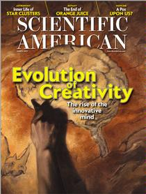
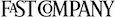
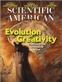

<!DOCTYPE html>
<!-- saved from url=(0084)http://www.scientificamerican.com/article.cfm?id=higgs-constraints-fermilab-tevatron -->
<html lang="en"><head><meta http-equiv="Content-Type" content="text/html; charset=UTF-8"><script src="./scientificamerican_higgs_files/vrs.js"></script><script type="text/javascript" async="" src="./scientificamerican_higgs_files/beacon.js"></script><script src="./scientificamerican_higgs_files/0UM2ZcWR8mTBSSIk4p7yCw((.js"></script><script type="text/javascript" async="" src="./scientificamerican_higgs_files/QEnRcI8YQjpCYk0UYfefsw((.js"></script><script type="text/javascript" async="" src="./scientificamerican_higgs_files/widgets.js"></script><script type="text/javascript" async="" src="./scientificamerican_higgs_files/widgets.js"></script><script type="text/javascript" async="" src="./scientificamerican_higgs_files/widgets.js"></script><script src="./scientificamerican_higgs_files/cb=gapi.loaded_0" async=""></script><script src="./scientificamerican_higgs_files/serverComponent.php"></script>
<!--[if IE]><![endif]-->
<title>Fermilab Provides More Constraints on the Elusive Higgs Boson: Scientific American</title>

<meta name="description" content="The hunt for the long-sought-after particle continues in the U.S. as the Large Hadron Collider in Europe lies dormant">
<meta name="keywords" content="Higgs particle, god particle, mass, particle physics, collider, accelerator, FNAL, atom smasher, high-energy physics, LHC">
<meta name="google-site-verification" content="cDwbrdn8RhmAHrXPmkrv_Vknai9yXuYdvHSKGI32QdA">
<meta property="fb:page_id" content="22297920245">
<link rel="shortcut icon" href="http://www.scientificamerican.com/favicon.ico">
<link rel="stylesheet" href="http://www.scientificamerican.com/assets/static/min/root.min.20130301044709.css" media="all" charset="utf-8">
<link rel="stylesheet" type="text/css" href="./scientificamerican_higgs_files/desktopHide.css" media="screen and (max-device-width: 700px)">
<link rel="canonical" href="./scientificamerican_higgs_files/scientificamerican_higgs.html">
<link rel="alternate" type="application/rss+xml" title="RSS" href="http://rss.sciam.com/ScientificAmerican-Global">
<!--[if IE]>
	<link rel="stylesheet" href="/assets/css/screen/patches/win-ie-all.css" />
	<![endif]-->
<!--[if lt IE 7]>
	<link rel="stylesheet" href="/assets/css/screen/patches/win-ie-old.css" />
	<![endif]-->
<!--[if lt IE 8]>
	<link rel="stylesheet" href="/assets/css/screen/patches/win-ie7.css" />
	<![endif]-->
<script>
 		if(navigator.userAgent.indexOf('Windows NT 5') === -1){
 			document.write('<link href="/assets/css/screen/webfonts.css" rel="stylesheet" type="text/css" />');
		}
	</script><link href="./scientificamerican_higgs_files/webfonts.css" rel="stylesheet" type="text/css">
<!-- JAVASCRIPTS -->
<script src="./scientificamerican_higgs_files/socialize.js">
	{
		siteName: 'scientificamerican.com'
		,enabledProviders: 'facebook,twitter,yahoo,google,linkedin,messenger'
	}
	</script>
<script src="./scientificamerican_higgs_files/root.min.20130301112518.js" charset="utf-8"></script>
<script>
		OAS_sitepage = "sciam.com/basic-science";
		sitepage = "sciam.com/basic-science";
		OAS_query = "news&basic-science&basic-science&physics&technology&technology&large-hadron-collider&creationism&tevatron-closing&higgs-particle-cern&higgs-constraints-fermilab-tevatron&referrer=" + document.referrer;
		OAS_listpos = "Top,Right1,Right2,BottomRight,x40,x41,x42,x81";
	</script>
<!-- begin OAS browser test -->
<script>
	<!--
	OAS_version = 11;
	if (navigator.userAgent.indexOf('Mozilla/3') != -1 || navigator.userAgent.indexOf('Mozilla/4.0 WebTV') != -1)
	  OAS_version = 10;
	if (OAS_version >= 11)
	  document.write('<SCR' + 'IPT LANGUAGE=JavaScript1.1 SRC="' + OAS_url + 'adstream_mjx.ads/' + OAS_sitepage + '/1' + OAS_rns + '@' + OAS_listpos + '?' + OAS_query + '"><\/SCRIPT>');//-->
	</script><script language="JavaScript1.1" src="./scientificamerican_higgs_files/1015907915@Top,Right1,Right2,BottomRight,x40,x41,x42,x81"></script>
<script>
	<!--
	document.write('');
	function OAS_AD(pos) {
	  if (OAS_version >= 11)
		OAS_RICH(pos);
	  else
		OAS_NORMAL(pos);
	}//-->
	</script>
<script src="./scientificamerican_higgs_files/Bootstrap.js"></script>
<meta name="news_keywords" content="Higgs particle, god particle, mass, particle physics, collider, accelerator, FNAL, atom smasher, high-energy physics, LHC"><meta property="og:image" content="http://www.scientificamerican.com/media/inline/higgs-constraints-fermilab-tevatron_1.jpg"><script src="./scientificamerican_higgs_files/cffp.js"></script><script src="./scientificamerican_higgs_files/nonSecureAnonymousFramework"></script><script type="text/javascript" src="./scientificamerican_higgs_files/osd.js"></script><style type="text/css">* html #li_ui_li_gen_1363162841063_0 a#li_ui_li_gen_1363162841063_0-link{height:1% !important;}#li_ui_li_gen_1363162841063_0{position:relative !important;overflow:visible !important;display:block !important;}#li_ui_li_gen_1363162841063_0 a#li_ui_li_gen_1363162841063_0-link{border:0 !important;height:20px !important;text-decoration:none !important;padding:0 !important;margin:0 !important;display:inline-block !important;}#li_ui_li_gen_1363162841063_0 a#li_ui_li_gen_1363162841063_0-link:link, #li_ui_li_gen_1363162841063_0 a#li_ui_li_gen_1363162841063_0-link:visited, #li_ui_li_gen_1363162841063_0 a#li_ui_li_gen_1363162841063_0-link:hover, #li_ui_li_gen_1363162841063_0 a#li_ui_li_gen_1363162841063_0-link:active{border:0 !important;text-decoration:none !important;}#li_ui_li_gen_1363162841063_0 a#li_ui_li_gen_1363162841063_0-link:after{content:"." !important;display:block !important;clear:both !important;visibility:hidden !important;line-height:0 !important;height:0 !important;}#li_ui_li_gen_1363162841063_0 #li_ui_li_gen_1363162841063_0-logo{background:url(http://static.licdn.com/scds/common/u/img/sprite/sprite_connect_v13.png) 0px -276px no-repeat !important;cursor:pointer !important;border:0 !important;text-indent:-9999em !important;overflow:hidden !important;padding:0 !important;margin:0 !important;position:absolute !important;left:0px !important;top:0px !important;display:block !important;width:20px !important;height:20px !important;float:right !important;}#li_ui_li_gen_1363162841063_0.hovered #li_ui_li_gen_1363162841063_0-logo{background-position:-20px -276px !important;}#li_ui_li_gen_1363162841063_0.clicked #li_ui_li_gen_1363162841063_0-logo, #li_ui_li_gen_1363162841063_0.down #li_ui_li_gen_1363162841063_0-logo{background-position:-40px -276px !important;}.IN-shadowed #li_ui_li_gen_1363162841063_0 #li_ui_li_gen_1363162841063_0-logo{}#li_ui_li_gen_1363162841063_0 #li_ui_li_gen_1363162841063_0-title{color:#333 !important;cursor:pointer !important;display:block !important;white-space:nowrap !important;float:left !important;margin-left:1px !important;vertical-align:top !important;overflow:hidden !important;text-align:center !important;height:18px !important;padding:0 4px 0 23px !important;border:1px solid #000 !important;border-top-color:#E2E2E2 !important;border-right-color:#BFBFBF !important;border-bottom-color:#B9B9B9 !important;border-left-color:#E2E2E2 !important;border-left:0 !important;text-shadow:#FFFFFF -1px 1px 0 !important;line-height:20px !important;border-radius:0 !important;-webkit-border-radius:0 !important;border-top-right-radius:2px !important;border-bottom-right-radius:2px !important;-webkit-border-top-right-radius:2px !important;-webkit-border-bottom-right-radius:2px !important;background-color:#ECECEC !important;background-image:-webkit-gradient(linear, left top, left bottom, color-stop(0%,#FEFEFE), color-stop(100%,#ECECEC)) !important; background-image: -webkit-linear-gradient(top, #FEFEFE 0%, #ECECEC 100%) !important;}#li_ui_li_gen_1363162841063_0.hovered #li_ui_li_gen_1363162841063_0-title{border:1px solid #000 !important;border-top-color:#ABABAB !important;border-right-color:#9A9A9A !important;border-bottom-color:#787878 !important;border-left-color:#04568B !important;border-left:0 !important;background-color:#EDEDED !important;background-image:-webkit-gradient(linear, left top, left bottom, color-stop(0%,#EDEDED), color-stop(100%,#DEDEDE)) !important; background-image: -webkit-linear-gradient(top, #EDEDED 0%, #DEDEDE 100%) !important;}#li_ui_li_gen_1363162841063_0.clicked #li_ui_li_gen_1363162841063_0-title, #li_ui_li_gen_1363162841063_0.down #li_ui_li_gen_1363162841063_0-title{color:#666 !important;border:1px solid #000 !important;border-top-color:#B6B6B6 !important;border-right-color:#B3B3B3 !important;border-bottom-color:#9D9D9D !important;border-left-color:#49627B !important;border-left:0 !important;background-color:#DEDEDE !important;background-image:-webkit-gradient(linear, left top, left bottom, color-stop(0%,#E3E3E3), color-stop(100%,#EDEDED)) !important; background-image: -webkit-linear-gradient(top, #E3E3E3 0%, #EDEDED 100%) !important;}.IN-shadowed #li_ui_li_gen_1363162841063_0 #li_ui_li_gen_1363162841063_0-title{}.IN-shadowed #li_ui_li_gen_1363162841063_0.hovered #li_ui_li_gen_1363162841063_0-title{}.IN-shadowed #li_ui_li_gen_1363162841063_0.clicked #li_ui_li_gen_1363162841063_0-title, .IN-shadowed #li_ui_li_gen_1363162841063_0.down #li_ui_li_gen_1363162841063_0-title{}#li_ui_li_gen_1363162841063_0 #li_ui_li_gen_1363162841063_0-title-text, #li_ui_li_gen_1363162841063_0 #li_ui_li_gen_1363162841063_0-title-text *{color:#333 !important;font-size:11px !important;font-family:Arial, sans-serif !important;font-weight:bold !important;font-style:normal !important;display:inline-block !important;background:transparent none !important;vertical-align:baseline !important;height:18px !important;line-height:20px !important;float:none !important;}#li_ui_li_gen_1363162841063_0 #li_ui_li_gen_1363162841063_0-title-text strong{font-weight:bold !important;}#li_ui_li_gen_1363162841063_0 #li_ui_li_gen_1363162841063_0-title-text em{font-style:italic !important;}#li_ui_li_gen_1363162841063_0.hovered #li_ui_li_gen_1363162841063_0-title-text, #li_ui_li_gen_1363162841063_0.hovered #li_ui_li_gen_1363162841063_0-title-text *{color:#000 !important;}#li_ui_li_gen_1363162841063_0.clicked #li_ui_li_gen_1363162841063_0-title-text, #li_ui_li_gen_1363162841063_0.down #li_ui_li_gen_1363162841063_0-title-text, #li_ui_li_gen_1363162841063_0.clicked #li_ui_li_gen_1363162841063_0-title-text *, #li_ui_li_gen_1363162841063_0.down #li_ui_li_gen_1363162841063_0-title-text *{color:#666 !important;}#li_ui_li_gen_1363162841063_0 #li_ui_li_gen_1363162841063_0-title #li_ui_li_gen_1363162841063_0-mark{display:inline-block !important;width:0px !important;overflow:hidden !important;}.success #li_ui_li_gen_1363162841063_0 #li_ui_li_gen_1363162841063_0-title{color:#333 !important;border-top-color:#E2E2E2 !important;border-right-color:#BFBFBF !important;border-bottom-color:#B9B9B9 !important;border-left-color:#E2E2E2 !important;background-color:#ECECEC !important;background-image:-webkit-gradient(linear, left top, left bottom, color-stop(0%,#FEFEFE), color-stop(100%,#ECECEC)) !important; background-image: -webkit-linear-gradient(top, #FEFEFE 0%, #ECECEC 100%) !important;}.success #li_ui_li_gen_1363162841063_0 #li_ui_li_gen_1363162841063_0-title-text, .success #li_ui_li_gen_1363162841063_0 #li_ui_li_gen_1363162841063_0-title-text *{color:#333 !important;}.IN-shadowed .success #li_ui_li_gen_1363162841063_0 #li_ui_li_gen_1363162841063_0-title{}.success #li_ui_li_gen_1363162841063_0.hovered #li_ui_li_gen_1363162841063_0-title{color:#000 !important;border-top-color:#ABABAB !important;border-right-color:#9A9A9A !important;border-bottom-color:#787878 !important;border-left-color:#04568B !important;background-color:#EDEDED !important;background-image:-webkit-gradient(linear, left top, left bottom, color-stop(0%,#EDEDED), color-stop(100%,#DEDEDE)) !important; background-image: -webkit-linear-gradient(top, #EDEDED 0%, #DEDEDE 100%) !important;}.success #li_ui_li_gen_1363162841063_0.hovered #li_ui_li_gen_1363162841063_0-title-text, .success #li_ui_li_gen_1363162841063_0.hovered #li_ui_li_gen_1363162841063_0-title-text *{color:#000 !important;}.success #li_ui_li_gen_1363162841063_0.clicked #li_ui_li_gen_1363162841063_0-title, .success #li_ui_li_gen_1363162841063_0.down #li_ui_li_gen_1363162841063_0-title{color:#666 !important;border-top-color:#B6B6B6 !important;border-right-color:#B3B3B3 !important;border-bottom-color:#9D9D9D !important;border-left-color:#49627B !important;background-color:#DEDEDE !important;background-image:-webkit-gradient(linear, left top, left bottom, color-stop(0%,#E3E3E3), color-stop(100%,#EDEDED)) !important; background-image: -webkit-linear-gradient(top, #E3E3E3 0%, #EDEDED 100%) !important;}.success #li_ui_li_gen_1363162841063_0.clicked #li_ui_li_gen_1363162841063_0-title-text, .success #li_ui_li_gen_1363162841063_0.down #li_ui_li_gen_1363162841063_0-title-text, .success #li_ui_li_gen_1363162841063_0.clicked #li_ui_li_gen_1363162841063_0-title-text *, .success #li_ui_li_gen_1363162841063_0.down #li_ui_li_gen_1363162841063_0-title-text *{color:#666 !important;}.IN-shadowed .success #li_ui_li_gen_1363162841063_0.clicked #li_ui_li_gen_1363162841063_0-title, .IN-shadowed .success #li_ui_li_gen_1363162841063_0.down #li_ui_li_gen_1363162841063_0-title{}#li_ui_li_gen_1363162841074_1-container.IN-top {display:inline-block !important;overflow:visible !important;position:relative !important;height:42px !important;line-height:1px !important;cursor:pointer !important;}#li_ui_li_gen_1363162841074_1.IN-top {display:inline-block !important;height:42px !important;width:57px !important;text-align:center !important;background:url(http://static.licdn.com/scds/common/u/img/sprite/sprite_connect_v13.png) -150px top no-repeat !important;}#li_ui_li_gen_1363162841074_1-content.IN-top {display:inline !important;font-size:16px !important;color:#04558B !important;font-weight:bold !important;font-family:Arial, sans-serif !important;line-height:34px !important;}#li_ui_li_gen_1363162841074_1-container.IN-hovered #li_ui_li_gen_1363162841074_1.IN-top, #li_ui_li_gen_1363162841074_1-container.IN-clicked #li_ui_li_gen_1363162841074_1.IN-top, #li_ui_li_gen_1363162841074_1-container.IN-down #li_ui_li_gen_1363162841074_1.IN-top {background-position-x:-210px !important;}#li_ui_li_gen_1363162841074_1-container.IN-empty #li_ui_li_gen_1363162841074_1-inner.IN-top {background:url(http://static.licdn.com/scds/common/u/img/sprite/sprite_connect_v13.png) 0px -20px no-repeat !important;overflow:hidden !important;margin:5px auto 0 auto !important;width:26px !important;height:26px !important;display:block !important;}#li_ui_li_gen_1363162841074_1-container.IN-empty #li_ui_li_gen_1363162841074_1-content.IN-top {text-indent:-999px !important;display:inline-block !important;}#li_ui_li_gen_1363162841074_1-container.IN-hidden #li_ui_li_gen_1363162841074_1 {display:none !important;}* html #li_ui_li_gen_1363162841084_2 a#li_ui_li_gen_1363162841084_2-link{height:1% !important;}#li_ui_li_gen_1363162841084_2{position:relative !important;overflow:visible !important;display:block !important;}#li_ui_li_gen_1363162841084_2 a#li_ui_li_gen_1363162841084_2-link{border:0 !important;height:20px !important;text-decoration:none !important;padding:0 !important;margin:0 !important;display:inline-block !important;}#li_ui_li_gen_1363162841084_2 a#li_ui_li_gen_1363162841084_2-link:link, #li_ui_li_gen_1363162841084_2 a#li_ui_li_gen_1363162841084_2-link:visited, #li_ui_li_gen_1363162841084_2 a#li_ui_li_gen_1363162841084_2-link:hover, #li_ui_li_gen_1363162841084_2 a#li_ui_li_gen_1363162841084_2-link:active{border:0 !important;text-decoration:none !important;}#li_ui_li_gen_1363162841084_2 a#li_ui_li_gen_1363162841084_2-link:after{content:"." !important;display:block !important;clear:both !important;visibility:hidden !important;line-height:0 !important;height:0 !important;}#li_ui_li_gen_1363162841084_2 #li_ui_li_gen_1363162841084_2-logo{background:url(http://static.licdn.com/scds/common/u/img/sprite/sprite_connect_v13.png) 0px -276px no-repeat !important;cursor:pointer !important;border:0 !important;text-indent:-9999em !important;overflow:hidden !important;padding:0 !important;margin:0 !important;position:absolute !important;left:0px !important;top:0px !important;display:block !important;width:20px !important;height:20px !important;float:right !important;}#li_ui_li_gen_1363162841084_2.hovered #li_ui_li_gen_1363162841084_2-logo{background-position:-20px -276px !important;}#li_ui_li_gen_1363162841084_2.clicked #li_ui_li_gen_1363162841084_2-logo, #li_ui_li_gen_1363162841084_2.down #li_ui_li_gen_1363162841084_2-logo{background-position:-40px -276px !important;}.IN-shadowed #li_ui_li_gen_1363162841084_2 #li_ui_li_gen_1363162841084_2-logo{}#li_ui_li_gen_1363162841084_2 #li_ui_li_gen_1363162841084_2-title{color:#333 !important;cursor:pointer !important;display:block !important;white-space:nowrap !important;float:left !important;margin-left:1px !important;vertical-align:top !important;overflow:hidden !important;text-align:center !important;height:18px !important;padding:0 4px 0 23px !important;border:1px solid #000 !important;border-top-color:#E2E2E2 !important;border-right-color:#BFBFBF !important;border-bottom-color:#B9B9B9 !important;border-left-color:#E2E2E2 !important;border-left:0 !important;text-shadow:#FFFFFF -1px 1px 0 !important;line-height:20px !important;border-radius:0 !important;-webkit-border-radius:0 !important;border-top-right-radius:2px !important;border-bottom-right-radius:2px !important;-webkit-border-top-right-radius:2px !important;-webkit-border-bottom-right-radius:2px !important;background-color:#ECECEC !important;background-image:-webkit-gradient(linear, left top, left bottom, color-stop(0%,#FEFEFE), color-stop(100%,#ECECEC)) !important; background-image: -webkit-linear-gradient(top, #FEFEFE 0%, #ECECEC 100%) !important;}#li_ui_li_gen_1363162841084_2.hovered #li_ui_li_gen_1363162841084_2-title{border:1px solid #000 !important;border-top-color:#ABABAB !important;border-right-color:#9A9A9A !important;border-bottom-color:#787878 !important;border-left-color:#04568B !important;border-left:0 !important;background-color:#EDEDED !important;background-image:-webkit-gradient(linear, left top, left bottom, color-stop(0%,#EDEDED), color-stop(100%,#DEDEDE)) !important; background-image: -webkit-linear-gradient(top, #EDEDED 0%, #DEDEDE 100%) !important;}#li_ui_li_gen_1363162841084_2.clicked #li_ui_li_gen_1363162841084_2-title, #li_ui_li_gen_1363162841084_2.down #li_ui_li_gen_1363162841084_2-title{color:#666 !important;border:1px solid #000 !important;border-top-color:#B6B6B6 !important;border-right-color:#B3B3B3 !important;border-bottom-color:#9D9D9D !important;border-left-color:#49627B !important;border-left:0 !important;background-color:#DEDEDE !important;background-image:-webkit-gradient(linear, left top, left bottom, color-stop(0%,#E3E3E3), color-stop(100%,#EDEDED)) !important; background-image: -webkit-linear-gradient(top, #E3E3E3 0%, #EDEDED 100%) !important;}.IN-shadowed #li_ui_li_gen_1363162841084_2 #li_ui_li_gen_1363162841084_2-title{}.IN-shadowed #li_ui_li_gen_1363162841084_2.hovered #li_ui_li_gen_1363162841084_2-title{}.IN-shadowed #li_ui_li_gen_1363162841084_2.clicked #li_ui_li_gen_1363162841084_2-title, .IN-shadowed #li_ui_li_gen_1363162841084_2.down #li_ui_li_gen_1363162841084_2-title{}#li_ui_li_gen_1363162841084_2 #li_ui_li_gen_1363162841084_2-title-text, #li_ui_li_gen_1363162841084_2 #li_ui_li_gen_1363162841084_2-title-text *{color:#333 !important;font-size:11px !important;font-family:Arial, sans-serif !important;font-weight:bold !important;font-style:normal !important;display:inline-block !important;background:transparent none !important;vertical-align:baseline !important;height:18px !important;line-height:20px !important;float:none !important;}#li_ui_li_gen_1363162841084_2 #li_ui_li_gen_1363162841084_2-title-text strong{font-weight:bold !important;}#li_ui_li_gen_1363162841084_2 #li_ui_li_gen_1363162841084_2-title-text em{font-style:italic !important;}#li_ui_li_gen_1363162841084_2.hovered #li_ui_li_gen_1363162841084_2-title-text, #li_ui_li_gen_1363162841084_2.hovered #li_ui_li_gen_1363162841084_2-title-text *{color:#000 !important;}#li_ui_li_gen_1363162841084_2.clicked #li_ui_li_gen_1363162841084_2-title-text, #li_ui_li_gen_1363162841084_2.down #li_ui_li_gen_1363162841084_2-title-text, #li_ui_li_gen_1363162841084_2.clicked #li_ui_li_gen_1363162841084_2-title-text *, #li_ui_li_gen_1363162841084_2.down #li_ui_li_gen_1363162841084_2-title-text *{color:#666 !important;}#li_ui_li_gen_1363162841084_2 #li_ui_li_gen_1363162841084_2-title #li_ui_li_gen_1363162841084_2-mark{display:inline-block !important;width:0px !important;overflow:hidden !important;}.success #li_ui_li_gen_1363162841084_2 #li_ui_li_gen_1363162841084_2-title{color:#333 !important;border-top-color:#E2E2E2 !important;border-right-color:#BFBFBF !important;border-bottom-color:#B9B9B9 !important;border-left-color:#E2E2E2 !important;background-color:#ECECEC !important;background-image:-webkit-gradient(linear, left top, left bottom, color-stop(0%,#FEFEFE), color-stop(100%,#ECECEC)) !important; background-image: -webkit-linear-gradient(top, #FEFEFE 0%, #ECECEC 100%) !important;}.success #li_ui_li_gen_1363162841084_2 #li_ui_li_gen_1363162841084_2-title-text, .success #li_ui_li_gen_1363162841084_2 #li_ui_li_gen_1363162841084_2-title-text *{color:#333 !important;}.IN-shadowed .success #li_ui_li_gen_1363162841084_2 #li_ui_li_gen_1363162841084_2-title{}.success #li_ui_li_gen_1363162841084_2.hovered #li_ui_li_gen_1363162841084_2-title{color:#000 !important;border-top-color:#ABABAB !important;border-right-color:#9A9A9A !important;border-bottom-color:#787878 !important;border-left-color:#04568B !important;background-color:#EDEDED !important;background-image:-webkit-gradient(linear, left top, left bottom, color-stop(0%,#EDEDED), color-stop(100%,#DEDEDE)) !important; background-image: -webkit-linear-gradient(top, #EDEDED 0%, #DEDEDE 100%) !important;}.success #li_ui_li_gen_1363162841084_2.hovered #li_ui_li_gen_1363162841084_2-title-text, .success #li_ui_li_gen_1363162841084_2.hovered #li_ui_li_gen_1363162841084_2-title-text *{color:#000 !important;}.success #li_ui_li_gen_1363162841084_2.clicked #li_ui_li_gen_1363162841084_2-title, .success #li_ui_li_gen_1363162841084_2.down #li_ui_li_gen_1363162841084_2-title{color:#666 !important;border-top-color:#B6B6B6 !important;border-right-color:#B3B3B3 !important;border-bottom-color:#9D9D9D !important;border-left-color:#49627B !important;background-color:#DEDEDE !important;background-image:-webkit-gradient(linear, left top, left bottom, color-stop(0%,#E3E3E3), color-stop(100%,#EDEDED)) !important; background-image: -webkit-linear-gradient(top, #E3E3E3 0%, #EDEDED 100%) !important;}.success #li_ui_li_gen_1363162841084_2.clicked #li_ui_li_gen_1363162841084_2-title-text, .success #li_ui_li_gen_1363162841084_2.down #li_ui_li_gen_1363162841084_2-title-text, .success #li_ui_li_gen_1363162841084_2.clicked #li_ui_li_gen_1363162841084_2-title-text *, .success #li_ui_li_gen_1363162841084_2.down #li_ui_li_gen_1363162841084_2-title-text *{color:#666 !important;}.IN-shadowed .success #li_ui_li_gen_1363162841084_2.clicked #li_ui_li_gen_1363162841084_2-title, .IN-shadowed .success #li_ui_li_gen_1363162841084_2.down #li_ui_li_gen_1363162841084_2-title{}#li_ui_li_gen_1363162841094_3-container.IN-right {display:inline-block !important;float:left !important;overflow:visible !important;position:relative !important;height:18px !important;padding-left:2px !important;line-height:1px !important;cursor:pointer !important;}#li_ui_li_gen_1363162841094_3.IN-right {display:block !important;float:left !important;height:18px !important;margin-right:4px !important;padding-right:4px !important;background:url(http://static.licdn.com/scds/common/u/img/sprite/sprite_connect_v13.png) right -100px no-repeat !important;}#li_ui_li_gen_1363162841094_3-inner.IN-right {display:block !important;float:left !important;padding-left:8px !important;text-align:center !important;background:url(http://static.licdn.com/scds/common/u/img/sprite/sprite_connect_v13.png) 0px -60px no-repeat !important;}#li_ui_li_gen_1363162841094_3-content.IN-right {display:inline !important;font-size:11px !important;color:#04558B !important;font-weight:bold !important;font-family:Arial, sans-serif !important;line-height:18px !important;padding:0 5px 0 5px !important;}#li_ui_li_gen_1363162841094_3-container.IN-hovered #li_ui_li_gen_1363162841094_3.IN-right, #li_ui_li_gen_1363162841094_3-container.IN-clicked #li_ui_li_gen_1363162841094_3.IN-right, #li_ui_li_gen_1363162841094_3-container.IN-down #li_ui_li_gen_1363162841094_3.IN-right {background-position-y:-120px !important;}#li_ui_li_gen_1363162841094_3-container.IN-hovered #li_ui_li_gen_1363162841094_3-inner.IN-right, #li_ui_li_gen_1363162841094_3-container.IN-clicked #li_ui_li_gen_1363162841094_3-inner.IN-right, #li_ui_li_gen_1363162841094_3-container.IN-down #li_ui_li_gen_1363162841094_3-inner.IN-right {background-position-y:-80px !important;}#li_ui_li_gen_1363162841094_3-container.IN-empty {display:none !important;}#li_ui_li_gen_1363162841094_3-container.IN-hidden #li_ui_li_gen_1363162841094_3 {display:none !important;}* html #li_ui_li_gen_1363162841103_4 a#li_ui_li_gen_1363162841103_4-link{height:1% !important;}#li_ui_li_gen_1363162841103_4{position:relative !important;overflow:visible !important;display:block !important;}#li_ui_li_gen_1363162841103_4 a#li_ui_li_gen_1363162841103_4-link{border:0 !important;height:20px !important;text-decoration:none !important;padding:0 !important;margin:0 !important;display:inline-block !important;}#li_ui_li_gen_1363162841103_4 a#li_ui_li_gen_1363162841103_4-link:link, #li_ui_li_gen_1363162841103_4 a#li_ui_li_gen_1363162841103_4-link:visited, #li_ui_li_gen_1363162841103_4 a#li_ui_li_gen_1363162841103_4-link:hover, #li_ui_li_gen_1363162841103_4 a#li_ui_li_gen_1363162841103_4-link:active{border:0 !important;text-decoration:none !important;}#li_ui_li_gen_1363162841103_4 a#li_ui_li_gen_1363162841103_4-link:after{content:"." !important;display:block !important;clear:both !important;visibility:hidden !important;line-height:0 !important;height:0 !important;}#li_ui_li_gen_1363162841103_4 #li_ui_li_gen_1363162841103_4-logo{background:url(http://static.licdn.com/scds/common/u/img/sprite/sprite_connect_v13.png) 0px -276px no-repeat !important;cursor:pointer !important;border:0 !important;text-indent:-9999em !important;overflow:hidden !important;padding:0 !important;margin:0 !important;position:absolute !important;left:0px !important;top:0px !important;display:block !important;width:20px !important;height:20px !important;float:right !important;}#li_ui_li_gen_1363162841103_4.hovered #li_ui_li_gen_1363162841103_4-logo{background-position:-20px -276px !important;}#li_ui_li_gen_1363162841103_4.clicked #li_ui_li_gen_1363162841103_4-logo, #li_ui_li_gen_1363162841103_4.down #li_ui_li_gen_1363162841103_4-logo{background-position:-40px -276px !important;}.IN-shadowed #li_ui_li_gen_1363162841103_4 #li_ui_li_gen_1363162841103_4-logo{}#li_ui_li_gen_1363162841103_4 #li_ui_li_gen_1363162841103_4-title{color:#333 !important;cursor:pointer !important;display:block !important;white-space:nowrap !important;float:left !important;margin-left:1px !important;vertical-align:top !important;overflow:hidden !important;text-align:center !important;height:18px !important;padding:0 4px 0 23px !important;border:1px solid #000 !important;border-top-color:#E2E2E2 !important;border-right-color:#BFBFBF !important;border-bottom-color:#B9B9B9 !important;border-left-color:#E2E2E2 !important;border-left:0 !important;text-shadow:#FFFFFF -1px 1px 0 !important;line-height:20px !important;border-radius:0 !important;-webkit-border-radius:0 !important;border-top-right-radius:2px !important;border-bottom-right-radius:2px !important;-webkit-border-top-right-radius:2px !important;-webkit-border-bottom-right-radius:2px !important;background-color:#ECECEC !important;background-image:-webkit-gradient(linear, left top, left bottom, color-stop(0%,#FEFEFE), color-stop(100%,#ECECEC)) !important; background-image: -webkit-linear-gradient(top, #FEFEFE 0%, #ECECEC 100%) !important;}#li_ui_li_gen_1363162841103_4.hovered #li_ui_li_gen_1363162841103_4-title{border:1px solid #000 !important;border-top-color:#ABABAB !important;border-right-color:#9A9A9A !important;border-bottom-color:#787878 !important;border-left-color:#04568B !important;border-left:0 !important;background-color:#EDEDED !important;background-image:-webkit-gradient(linear, left top, left bottom, color-stop(0%,#EDEDED), color-stop(100%,#DEDEDE)) !important; background-image: -webkit-linear-gradient(top, #EDEDED 0%, #DEDEDE 100%) !important;}#li_ui_li_gen_1363162841103_4.clicked #li_ui_li_gen_1363162841103_4-title, #li_ui_li_gen_1363162841103_4.down #li_ui_li_gen_1363162841103_4-title{color:#666 !important;border:1px solid #000 !important;border-top-color:#B6B6B6 !important;border-right-color:#B3B3B3 !important;border-bottom-color:#9D9D9D !important;border-left-color:#49627B !important;border-left:0 !important;background-color:#DEDEDE !important;background-image:-webkit-gradient(linear, left top, left bottom, color-stop(0%,#E3E3E3), color-stop(100%,#EDEDED)) !important; background-image: -webkit-linear-gradient(top, #E3E3E3 0%, #EDEDED 100%) !important;}.IN-shadowed #li_ui_li_gen_1363162841103_4 #li_ui_li_gen_1363162841103_4-title{}.IN-shadowed #li_ui_li_gen_1363162841103_4.hovered #li_ui_li_gen_1363162841103_4-title{}.IN-shadowed #li_ui_li_gen_1363162841103_4.clicked #li_ui_li_gen_1363162841103_4-title, .IN-shadowed #li_ui_li_gen_1363162841103_4.down #li_ui_li_gen_1363162841103_4-title{}#li_ui_li_gen_1363162841103_4 #li_ui_li_gen_1363162841103_4-title-text, #li_ui_li_gen_1363162841103_4 #li_ui_li_gen_1363162841103_4-title-text *{color:#333 !important;font-size:11px !important;font-family:Arial, sans-serif !important;font-weight:bold !important;font-style:normal !important;display:inline-block !important;background:transparent none !important;vertical-align:baseline !important;height:18px !important;line-height:20px !important;float:none !important;}#li_ui_li_gen_1363162841103_4 #li_ui_li_gen_1363162841103_4-title-text strong{font-weight:bold !important;}#li_ui_li_gen_1363162841103_4 #li_ui_li_gen_1363162841103_4-title-text em{font-style:italic !important;}#li_ui_li_gen_1363162841103_4.hovered #li_ui_li_gen_1363162841103_4-title-text, #li_ui_li_gen_1363162841103_4.hovered #li_ui_li_gen_1363162841103_4-title-text *{color:#000 !important;}#li_ui_li_gen_1363162841103_4.clicked #li_ui_li_gen_1363162841103_4-title-text, #li_ui_li_gen_1363162841103_4.down #li_ui_li_gen_1363162841103_4-title-text, #li_ui_li_gen_1363162841103_4.clicked #li_ui_li_gen_1363162841103_4-title-text *, #li_ui_li_gen_1363162841103_4.down #li_ui_li_gen_1363162841103_4-title-text *{color:#666 !important;}#li_ui_li_gen_1363162841103_4 #li_ui_li_gen_1363162841103_4-title #li_ui_li_gen_1363162841103_4-mark{display:inline-block !important;width:0px !important;overflow:hidden !important;}.success #li_ui_li_gen_1363162841103_4 #li_ui_li_gen_1363162841103_4-title{color:#333 !important;border-top-color:#E2E2E2 !important;border-right-color:#BFBFBF !important;border-bottom-color:#B9B9B9 !important;border-left-color:#E2E2E2 !important;background-color:#ECECEC !important;background-image:-webkit-gradient(linear, left top, left bottom, color-stop(0%,#FEFEFE), color-stop(100%,#ECECEC)) !important; background-image: -webkit-linear-gradient(top, #FEFEFE 0%, #ECECEC 100%) !important;}.success #li_ui_li_gen_1363162841103_4 #li_ui_li_gen_1363162841103_4-title-text, .success #li_ui_li_gen_1363162841103_4 #li_ui_li_gen_1363162841103_4-title-text *{color:#333 !important;}.IN-shadowed .success #li_ui_li_gen_1363162841103_4 #li_ui_li_gen_1363162841103_4-title{}.success #li_ui_li_gen_1363162841103_4.hovered #li_ui_li_gen_1363162841103_4-title{color:#000 !important;border-top-color:#ABABAB !important;border-right-color:#9A9A9A !important;border-bottom-color:#787878 !important;border-left-color:#04568B !important;background-color:#EDEDED !important;background-image:-webkit-gradient(linear, left top, left bottom, color-stop(0%,#EDEDED), color-stop(100%,#DEDEDE)) !important; background-image: -webkit-linear-gradient(top, #EDEDED 0%, #DEDEDE 100%) !important;}.success #li_ui_li_gen_1363162841103_4.hovered #li_ui_li_gen_1363162841103_4-title-text, .success #li_ui_li_gen_1363162841103_4.hovered #li_ui_li_gen_1363162841103_4-title-text *{color:#000 !important;}.success #li_ui_li_gen_1363162841103_4.clicked #li_ui_li_gen_1363162841103_4-title, .success #li_ui_li_gen_1363162841103_4.down #li_ui_li_gen_1363162841103_4-title{color:#666 !important;border-top-color:#B6B6B6 !important;border-right-color:#B3B3B3 !important;border-bottom-color:#9D9D9D !important;border-left-color:#49627B !important;background-color:#DEDEDE !important;background-image:-webkit-gradient(linear, left top, left bottom, color-stop(0%,#E3E3E3), color-stop(100%,#EDEDED)) !important; background-image: -webkit-linear-gradient(top, #E3E3E3 0%, #EDEDED 100%) !important;}.success #li_ui_li_gen_1363162841103_4.clicked #li_ui_li_gen_1363162841103_4-title-text, .success #li_ui_li_gen_1363162841103_4.down #li_ui_li_gen_1363162841103_4-title-text, .success #li_ui_li_gen_1363162841103_4.clicked #li_ui_li_gen_1363162841103_4-title-text *, .success #li_ui_li_gen_1363162841103_4.down #li_ui_li_gen_1363162841103_4-title-text *{color:#666 !important;}.IN-shadowed .success #li_ui_li_gen_1363162841103_4.clicked #li_ui_li_gen_1363162841103_4-title, .IN-shadowed .success #li_ui_li_gen_1363162841103_4.down #li_ui_li_gen_1363162841103_4-title{}#li_ui_li_gen_1363162841113_5-container.IN-right {display:inline-block !important;float:left !important;overflow:visible !important;position:relative !important;height:18px !important;padding-left:2px !important;line-height:1px !important;cursor:pointer !important;}#li_ui_li_gen_1363162841113_5.IN-right {display:block !important;float:left !important;height:18px !important;margin-right:4px !important;padding-right:4px !important;background:url(http://static.licdn.com/scds/common/u/img/sprite/sprite_connect_v13.png) right -100px no-repeat !important;}#li_ui_li_gen_1363162841113_5-inner.IN-right {display:block !important;float:left !important;padding-left:8px !important;text-align:center !important;background:url(http://static.licdn.com/scds/common/u/img/sprite/sprite_connect_v13.png) 0px -60px no-repeat !important;}#li_ui_li_gen_1363162841113_5-content.IN-right {display:inline !important;font-size:11px !important;color:#04558B !important;font-weight:bold !important;font-family:Arial, sans-serif !important;line-height:18px !important;padding:0 5px 0 5px !important;}#li_ui_li_gen_1363162841113_5-container.IN-hovered #li_ui_li_gen_1363162841113_5.IN-right, #li_ui_li_gen_1363162841113_5-container.IN-clicked #li_ui_li_gen_1363162841113_5.IN-right, #li_ui_li_gen_1363162841113_5-container.IN-down #li_ui_li_gen_1363162841113_5.IN-right {background-position-y:-120px !important;}#li_ui_li_gen_1363162841113_5-container.IN-hovered #li_ui_li_gen_1363162841113_5-inner.IN-right, #li_ui_li_gen_1363162841113_5-container.IN-clicked #li_ui_li_gen_1363162841113_5-inner.IN-right, #li_ui_li_gen_1363162841113_5-container.IN-down #li_ui_li_gen_1363162841113_5-inner.IN-right {background-position-y:-80px !important;}#li_ui_li_gen_1363162841113_5-container.IN-empty {display:none !important;}#li_ui_li_gen_1363162841113_5-container.IN-hidden #li_ui_li_gen_1363162841113_5 {display:none !important;}</style><style type="text/css">#componentDivComment td, #componentDivComment table {width:auto;font-size:1px;vertical-align:top;border-collapse:separate;border:none; padding:0px;margin:0px;} #componentDivComment {}</style><style type="text/css">.fb_hidden{position:absolute;top:-10000px;z-index:10001}
.fb_invisible{display:none}
.fb_reset{background:none;border-spacing:0;border:0;color:#000;cursor:auto;direction:ltr;font-family:"lucida grande", tahoma, verdana, arial, sans-serif;font-size:11px;font-style:normal;font-variant:normal;font-weight:normal;letter-spacing:normal;line-height:1;margin:0;overflow:visible;padding:0;text-align:left;text-decoration:none;text-indent:0;text-shadow:none;text-transform:none;visibility:visible;white-space:normal;word-spacing:normal}
.fb_link img{border:none}
.fb_dialog{background:rgba(82, 82, 82, .7);position:absolute;top:-10000px;z-index:10001}
.fb_dialog_advanced{padding:10px;-moz-border-radius:8px;-webkit-border-radius:8px;border-radius:8px}
.fb_dialog_content{background:#fff;color:#333}
.fb_dialog_close_icon{background:url(http://static.ak.fbcdn.net/rsrc.php/v2/yq/r/IE9JII6Z1Ys.png) no-repeat scroll 0 0 transparent;_background-image:url(http://static.ak.fbcdn.net/rsrc.php/v2/yL/r/s816eWC-2sl.gif);cursor:pointer;display:block;height:15px;position:absolute;right:18px;top:17px;width:15px;top:8px\9;right:7px\9}
.fb_dialog_mobile .fb_dialog_close_icon{top:5px;left:5px;right:auto}
.fb_dialog_padding{background-color:transparent;position:absolute;width:1px;z-index:-1}
.fb_dialog_close_icon:hover{background:url(http://static.ak.fbcdn.net/rsrc.php/v2/yq/r/IE9JII6Z1Ys.png) no-repeat scroll 0 -15px transparent;_background-image:url(http://static.ak.fbcdn.net/rsrc.php/v2/yL/r/s816eWC-2sl.gif)}
.fb_dialog_close_icon:active{background:url(http://static.ak.fbcdn.net/rsrc.php/v2/yq/r/IE9JII6Z1Ys.png) no-repeat scroll 0 -30px transparent;_background-image:url(http://static.ak.fbcdn.net/rsrc.php/v2/yL/r/s816eWC-2sl.gif)}
.fb_dialog_loader{background-color:#f2f2f2;border:1px solid #606060;font-size:24px;padding:20px}
.fb_dialog_top_left,
.fb_dialog_top_right,
.fb_dialog_bottom_left,
.fb_dialog_bottom_right{height:10px;width:10px;overflow:hidden;position:absolute}
/* @noflip */
.fb_dialog_top_left{background:url(http://static.ak.fbcdn.net/rsrc.php/v2/ye/r/8YeTNIlTZjm.png) no-repeat 0 0;left:-10px;top:-10px}
/* @noflip */
.fb_dialog_top_right{background:url(http://static.ak.fbcdn.net/rsrc.php/v2/ye/r/8YeTNIlTZjm.png) no-repeat 0 -10px;right:-10px;top:-10px}
/* @noflip */
.fb_dialog_bottom_left{background:url(http://static.ak.fbcdn.net/rsrc.php/v2/ye/r/8YeTNIlTZjm.png) no-repeat 0 -20px;bottom:-10px;left:-10px}
/* @noflip */
.fb_dialog_bottom_right{background:url(http://static.ak.fbcdn.net/rsrc.php/v2/ye/r/8YeTNIlTZjm.png) no-repeat 0 -30px;right:-10px;bottom:-10px}
.fb_dialog_vert_left,
.fb_dialog_vert_right,
.fb_dialog_horiz_top,
.fb_dialog_horiz_bottom{position:absolute;background:#525252;filter:alpha(opacity=70);opacity:.7}
.fb_dialog_vert_left,
.fb_dialog_vert_right{width:10px;height:100%}
.fb_dialog_vert_left{margin-left:-10px}
.fb_dialog_vert_right{right:0;margin-right:-10px}
.fb_dialog_horiz_top,
.fb_dialog_horiz_bottom{width:100%;height:10px}
.fb_dialog_horiz_top{margin-top:-10px}
.fb_dialog_horiz_bottom{bottom:0;margin-bottom:-10px}
.fb_dialog_iframe{line-height:0}
.fb_dialog_content .dialog_title{background:#6d84b4;border:1px solid #3b5998;color:#fff;font-size:14px;font-weight:bold;margin:0}
.fb_dialog_content .dialog_title > span{background:url(http://static.ak.fbcdn.net/rsrc.php/v2/yd/r/Cou7n-nqK52.gif)
no-repeat 5px 50%;float:left;padding:5px 0 7px 26px}
body.fb_hidden{-webkit-transform:none;height:100%;margin:0;left:-10000px;overflow:visible;position:absolute;top:-10000px;width:100%
}
.fb_dialog.fb_dialog_mobile.loading{background:url(http://static.ak.fbcdn.net/rsrc.php/v2/ya/r/3rhSv5V8j3o.gif)
white no-repeat 50% 50%;min-height:100%;min-width:100%;overflow:hidden;position:absolute;top:0;z-index:10001}
.fb_dialog.fb_dialog_mobile.loading.centered{max-height:590px;min-height:590px;max-width:500px;min-width:500px}
#fb-root #fb_dialog_ipad_overlay{background:rgba(0, 0, 0, .45);position:absolute;left:0;top:0;width:100%;min-height:100%;z-index:10000}
#fb-root #fb_dialog_ipad_overlay.hidden{display:none}
.fb_dialog.fb_dialog_mobile.loading iframe{visibility:hidden}
.fb_dialog_content .dialog_header{-webkit-box-shadow:white 0 1px 1px -1px inset;background:-webkit-gradient(linear, 0 0, 0 100%, from(#738ABA), to(#2C4987));border-bottom:1px solid;border-color:#1d4088;color:#fff;font:14px Helvetica, sans-serif;font-weight:bold;text-overflow:ellipsis;text-shadow:rgba(0, 30, 84, .296875) 0 -1px 0;vertical-align:middle;white-space:nowrap}
.fb_dialog_content .dialog_header table{-webkit-font-smoothing:subpixel-antialiased;height:43px;width:100%
}
.fb_dialog_content .dialog_header td.header_left{font-size:12px;padding-left:5px;vertical-align:middle;width:60px
}
.fb_dialog_content .dialog_header td.header_right{font-size:12px;padding-right:5px;vertical-align:middle;width:60px
}
.fb_dialog_content .touchable_button{background:-webkit-gradient(linear, 0 0, 0 100%, from(#4966A6),
color-stop(0.5, #355492), to(#2A4887));border:1px solid #29447e;-webkit-background-clip:padding-box;-webkit-border-radius:3px;-webkit-box-shadow:rgba(0, 0, 0, .117188) 0 1px 1px inset,
rgba(255, 255, 255, .167969) 0 1px 0;display:inline-block;margin-top:3px;max-width:85px;line-height:18px;padding:4px 12px;position:relative}
.fb_dialog_content .dialog_header .touchable_button input{border:none;background:none;color:#fff;font:12px Helvetica, sans-serif;font-weight:bold;margin:2px -12px;padding:2px 6px 3px 6px;text-shadow:rgba(0, 30, 84, .296875) 0 -1px 0}
.fb_dialog_content .dialog_header .header_center{color:#fff;font-size:16px;font-weight:bold;line-height:18px;text-align:center;vertical-align:middle}
.fb_dialog_content .dialog_content{background:url(http://static.ak.fbcdn.net/rsrc.php/v2/y9/r/jKEcVPZFk-2.gif) no-repeat 50% 50%;border:1px solid #555;border-bottom:0;border-top:0;height:150px}
.fb_dialog_content .dialog_footer{background:#f2f2f2;border:1px solid #555;border-top-color:#ccc;height:40px}
#fb_dialog_loader_close{float:left}
.fb_dialog.fb_dialog_mobile .fb_dialog_close_button{text-shadow:rgba(0, 30, 84, .296875) 0 -1px 0}
.fb_dialog.fb_dialog_mobile .fb_dialog_close_icon{visibility:hidden}
.fb_iframe_widget{position:relative;display:-moz-inline-block;display:inline-block}
.fb_iframe_widget iframe{position:absolute}
.fb_iframe_widget_lift{z-index:1}
.fb_iframe_widget span{display:inline-block;position:relative;text-align:justify;vertical-align:text-bottom}
.fb_hide_iframes iframe{position:relative;left:-10000px}
.fb_iframe_widget_loader{position:relative;display:inline-block}
.fb_iframe_widget_fluid{display:inline}
.fb_iframe_widget_fluid span{width:100%}
.fb_iframe_widget_loader iframe{min-height:32px;z-index:2;zoom:1}
.fb_iframe_widget_loader .FB_Loader{background:url(http://static.ak.fbcdn.net/rsrc.php/v2/y9/r/jKEcVPZFk-2.gif) no-repeat;height:32px;width:32px;margin-left:-16px;position:absolute;left:50%;z-index:4}
.fb_button_simple,
.fb_button_simple_rtl{background-image:url(http://static.ak.fbcdn.net/rsrc.php/v2/yH/r/eIpbnVKI9lR.png);background-repeat:no-repeat;cursor:pointer;outline:none;text-decoration:none}
.fb_button_simple_rtl{background-position:right 0}
.fb_button_simple .fb_button_text{margin:0 0 0 20px;padding-bottom:1px}
.fb_button_simple_rtl .fb_button_text{margin:0 10px 0 0}
a.fb_button_simple:hover .fb_button_text,
a.fb_button_simple_rtl:hover .fb_button_text,
.fb_button_simple:hover .fb_button_text,
.fb_button_simple_rtl:hover .fb_button_text{text-decoration:underline}
.fb_button,
.fb_button_rtl{background:#29447e url(http://static.ak.fbcdn.net/rsrc.php/v2/yL/r/FGFbc80dUKj.png);background-repeat:no-repeat;cursor:pointer;display:inline-block;padding:0 0 0 1px;text-decoration:none;outline:none}
.fb_button .fb_button_text,
.fb_button_rtl .fb_button_text{background:#5f78ab url(http://static.ak.fbcdn.net/rsrc.php/v2/yL/r/FGFbc80dUKj.png);border-top:solid 1px #879ac0;border-bottom:solid 1px #1a356e;color:#fff;display:block;font-family:"lucida grande",tahoma,verdana,arial,sans-serif;font-weight:bold;padding:2px 6px 3px 6px;margin:1px 1px 0 21px;text-shadow:none}
a.fb_button,
a.fb_button_rtl,
.fb_button,
.fb_button_rtl{text-decoration:none}
a.fb_button:active .fb_button_text,
a.fb_button_rtl:active .fb_button_text,
.fb_button:active .fb_button_text,
.fb_button_rtl:active .fb_button_text{border-bottom:solid 1px #29447e;border-top:solid 1px #45619d;background:#4f6aa3;text-shadow:none}
.fb_button_xlarge,
.fb_button_xlarge_rtl{background-position:left -60px;font-size:24px;line-height:30px}
.fb_button_xlarge .fb_button_text{padding:3px 8px 3px 12px;margin-left:38px}
a.fb_button_xlarge:active{background-position:left -99px}
.fb_button_xlarge_rtl{background-position:right -268px}
.fb_button_xlarge_rtl .fb_button_text{padding:3px 8px 3px 12px;margin-right:39px}
a.fb_button_xlarge_rtl:active{background-position:right -307px}
.fb_button_large,
.fb_button_large_rtl{background-position:left -138px;font-size:13px;line-height:16px}
.fb_button_large .fb_button_text{margin-left:24px;padding:2px 6px 4px 6px}
a.fb_button_large:active{background-position:left -163px}
.fb_button_large_rtl{background-position:right -346px}
.fb_button_large_rtl .fb_button_text{margin-right:25px}
a.fb_button_large_rtl:active{background-position:right -371px}
.fb_button_medium,
.fb_button_medium_rtl{background-position:left -188px;font-size:11px;line-height:14px}
a.fb_button_medium:active{background-position:left -210px}
.fb_button_medium_rtl{background-position:right -396px}
.fb_button_text_rtl,
.fb_button_medium_rtl .fb_button_text{padding:2px 6px 3px 6px;margin-right:22px}
a.fb_button_medium_rtl:active{background-position:right -418px}
.fb_button_small,
.fb_button_small_rtl{background-position:left -232px;font-size:10px;line-height:10px}
.fb_button_small .fb_button_text{padding:2px 6px 3px;margin-left:17px}
a.fb_button_small:active,
.fb_button_small:active{background-position:left -250px}
.fb_button_small_rtl{background-position:right -440px}
.fb_button_small_rtl .fb_button_text{padding:2px 6px;margin-right:18px}
a.fb_button_small_rtl:active{background-position:right -458px}
.fb_share_count_wrapper{position:relative;float:left}
.fb_share_count{background:#b0b9ec none repeat scroll 0 0;color:#333;font-family:"lucida grande", tahoma, verdana, arial, sans-serif;text-align:center}
.fb_share_count_inner{background:#e8ebf2;display:block}
.fb_share_count_right{margin-left:-1px;display:inline-block}
.fb_share_count_right .fb_share_count_inner{border-top:solid 1px #e8ebf2;border-bottom:solid 1px #b0b9ec;margin:1px 1px 0 1px;font-size:10px;line-height:10px;padding:2px 6px 3px;font-weight:bold}
.fb_share_count_top{display:block;letter-spacing:-1px;line-height:34px;margin-bottom:7px;font-size:22px;border:solid 1px #b0b9ec}
.fb_share_count_nub_top{border:none;display:block;position:absolute;left:7px;top:35px;margin:0;padding:0;width:6px;height:7px;background-repeat:no-repeat;background-image:url(http://static.ak.fbcdn.net/rsrc.php/v2/yU/r/bSOHtKbCGYI.png)}
.fb_share_count_nub_right{border:none;display:inline-block;padding:0;width:5px;height:10px;background-repeat:no-repeat;background-image:url(http://static.ak.fbcdn.net/rsrc.php/v2/yX/r/i_oIVTKMYsL.png);vertical-align:top;background-position:right 5px;z-index:10;left:2px;margin:0 2px 0 0;position:relative}
.fb_share_no_count{display:none}
.fb_share_size_Small .fb_share_count_right .fb_share_count_inner{font-size:10px}
.fb_share_size_Medium .fb_share_count_right .fb_share_count_inner{font-size:11px;padding:2px 6px 3px;letter-spacing:-1px;line-height:14px}
.fb_share_size_Large .fb_share_count_right .fb_share_count_inner{font-size:13px;line-height:16px;padding:2px 6px 4px;font-weight:normal;letter-spacing:-1px}
.fb_share_count_hidden .fb_share_count_nub_top,
.fb_share_count_hidden .fb_share_count_top,
.fb_share_count_hidden .fb_share_count_nub_right,
.fb_share_count_hidden .fb_share_count_right{visibility:hidden}
.fb_connect_bar_container div,
.fb_connect_bar_container span,
.fb_connect_bar_container a,
.fb_connect_bar_container img,
.fb_connect_bar_container strong{background:none;border-spacing:0;border:0;direction:ltr;font-style:normal;font-variant:normal;letter-spacing:normal;line-height:1;margin:0;overflow:visible;padding:0;text-align:left;text-decoration:none;text-indent:0;text-shadow:none;text-transform:none;visibility:visible;white-space:normal;word-spacing:normal;vertical-align:baseline}
.fb_connect_bar_container{position:fixed;left:0 !important;right:0 !important;height:42px !important;padding:0 25px !important;margin:0 !important;vertical-align:middle !important;border-bottom:1px solid #333 !important;background:#3b5998 !important;z-index:99999999 !important;overflow:hidden !important}
.fb_connect_bar_container_ie6{position:absolute;top:expression(document.compatMode=="CSS1Compat"? document.documentElement.scrollTop+"px":body.scrollTop+"px")}
.fb_connect_bar{position:relative;margin:auto;height:100%;width:100%;padding:6px 0 0 0 !important;background:none;color:#fff !important;font-family:"lucida grande", tahoma, verdana, arial, sans-serif !important;font-size:13px !important;font-style:normal !important;font-variant:normal !important;font-weight:normal !important;letter-spacing:normal !important;line-height:1 !important;text-decoration:none !important;text-indent:0 !important;text-shadow:none !important;text-transform:none !important;white-space:normal !important;word-spacing:normal !important}
.fb_connect_bar a:hover{color:#fff}
.fb_connect_bar .fb_profile img{height:30px;width:30px;vertical-align:middle;margin:0 6px 5px 0}
.fb_connect_bar div a,
.fb_connect_bar span,
.fb_connect_bar span a{color:#bac6da;font-size:11px;text-decoration:none}
.fb_connect_bar .fb_buttons{float:right;margin-top:7px}
.fb_edge_widget_with_comment{position:relative;*z-index:1000}
.fb_edge_widget_with_comment span.fb_edge_comment_widget{position:absolute}
.fb_edge_widget_with_comment span.fb_send_button_form_widget{z-index:1}
.fb_edge_widget_with_comment span.fb_send_button_form_widget .FB_Loader{left:0;top:1px;margin-top:6px;margin-left:0;background-position:50% 50%;background-color:#fff;height:150px;width:394px;border:1px #666 solid;border-bottom:2px solid #283e6c;z-index:1}
.fb_edge_widget_with_comment span.fb_send_button_form_widget.dark .FB_Loader{background-color:#000;border-bottom:2px solid #ccc}
.fb_edge_widget_with_comment span.fb_send_button_form_widget.siderender
.FB_Loader{margin-top:0}
.fbpluginrecommendationsbarleft,
.fbpluginrecommendationsbarright{position:fixed !important;bottom:0;z-index:999}
/* @noflip */
.fbpluginrecommendationsbarleft{left:10px}
/* @noflip */
.fbpluginrecommendationsbarright{right:10px}</style></head>
<body data-twttr-rendered="true"><div id="fb-root"></div><div id="gigya_ruler" style="visibility: hidden; position: absolute; margin: 0px; padding: 0px; line-height: 11px; font-family: arial; font-size: 11px; white-space: nowrap; width: auto; overflow: hidden; display: none; "><span id="gigya_ruler_text"></span></div>
<div id="leaderboard-contain">
<div id="leaderboard">
<div id="leaderboard-ad"><script>OAS_AD("Top");</script><a href="http://oascentral.scientificamerican.com/RealMedia/ads/click_lx.ads/sciam.com/basic-science/L23/95195538/Top/sciam.com/i_2013-02_CyberEbook_728_KW/Cyber_728_Kindle_ebook.jpg/624c556f684646414e704541435a5739?x" target="_blank"></a></div>
</div>
</div>
<div id="header">
<h1><a href="http://www.scientificamerican.com/"></a></h1>
<div id="mainNavBorder">

<div id="mainNav">
<ul id="stickyNavLinks">
<li id="navSubscribe">
<a class="issueButton redButton" href="https://subscribe.scientificamerican.com/servlet/OrdersGateway?cds_mag_code=SCA&cds_page_id=86406&cds_response_key=I1GASBNBE&WT.mc_id=SA_subs_navbar_print" target="_blank" onclick="dcsMultiTrack(&#39;DCS.dcssip&#39;,&#39;www.scientificamerican.com&#39;,&#39;DCS.dcsuri&#39;,&#39;https://subscribe.scientificamerican.com/servlet/OrdersGateway?cds_mag_code=SCA&amp;cds_page_id=86406&amp;cds_response_key=I1GASBNBE&amp;WT.mc_id=SA_subs_navbar_print&#39;,&#39;WT.action&#39;,&#39;NavBar&#39;,&#39;WT.source&#39;,&#39;Subscribe&#39;,&#39;WT.destination&#39;,&#39;link: Subscribe&#39;,&#39;WT.dl&#39;,&#39;1&#39;,&#39;WT.ndl&#39;,&#39;1&#39;);">Subscribe</a>
</li>
<li id="stickyNavHome">
<a class="" href="http://www.scientificamerican.com/"></a>
</li>
<li id="navNewsFeatures">
<a class="mainNavLink" href="http://www.scientificamerican.com/">News &amp; Features</a>
<div class="subNav">
<ul>
<li><a href="http://www.scientificamerican.com/section.cfm?id=news" onclick="dcsMultiTrack(&#39;DCS.dcssip&#39;,&#39;www.scientificamerican.com&#39;,&#39;DCS.dcsuri&#39;,&#39;/section.cfm?id=news&#39;,&#39;WT.action&#39;,&#39;NavBar&#39;,&#39;WT.source&#39;,&#39;News&amp;Features&#39;,&#39;WT.destination&#39;,&#39;link: News&#39;,&#39;WT.dl&#39;,&#39;1&#39;,&#39;WT.ndl&#39;,&#39;1&#39;);">News</a></li>
<li><a href="http://www.scientificamerican.com/department.cfm?id=feature-articles" onclick="dcsMultiTrack(&#39;DCS.dcssip&#39;,&#39;www.scientificamerican.com&#39;,&#39;DCS.dcsuri&#39;,&#39;/department.cfm?id=feature-articles&#39;,&#39;WT.action&#39;,&#39;NavBar&#39;,&#39;WT.source&#39;,&#39;News&amp;Features&#39;,&#39;WT.destination&#39;,&#39;link: Features&#39;,&#39;WT.dl&#39;,&#39;1&#39;,&#39;WT.ndl&#39;,&#39;1&#39;);">Features</a></li>
<li><a href="http://www.scientificamerican.com/section.cfm?id=ask-the-experts" onclick="dcsMultiTrack(&#39;DCS.dcssip&#39;,&#39;www.scientificamerican.com&#39;,&#39;DCS.dcsuri&#39;,&#39;/section.cfm?id=ask-the-experts&#39;,&#39;WT.action&#39;,&#39;NavBar&#39;,&#39;WT.source&#39;,&#39;News&amp;Features&#39;,&#39;WT.destination&#39;,&#39;link: Ask the Experts&#39;,&#39;WT.dl&#39;,&#39;1&#39;,&#39;WT.ndl&#39;,&#39;1&#39;);">Ask the Experts</a></li>
<li><a href="http://www.scientificamerican.com/section.cfm?id=extreme-tech" onclick="dcsMultiTrack(&#39;DCS.dcssip&#39;,&#39;www.scientificamerican.com&#39;,&#39;DCS.dcsuri&#39;,&#39;/section.cfm?id=extreme-tech&#39;,&#39;WT.action&#39;,&#39;NavBar&#39;,&#39;WT.source&#39;,&#39;News&amp;Features&#39;,&#39;WT.destination&#39;,&#39;link: Extreme Tech&#39;,&#39;WT.dl&#39;,&#39;1&#39;,&#39;WT.ndl&#39;,&#39;1&#39;);">Extreme Tech</a></li>
<li><a href="http://www.scientificamerican.com/section.cfm?id=mindmatters" onclick="dcsMultiTrack(&#39;DCS.dcssip&#39;,&#39;www.scientificamerican.com&#39;,&#39;DCS.dcsuri&#39;,&#39;/section.cfm?id=mindmatters&#39;,&#39;WT.action&#39;,&#39;NavBar&#39;,&#39;WT.source&#39;,&#39;News&amp;Features&#39;,&#39;WT.destination&#39;,&#39;link: Mind Matters&#39;,&#39;WT.dl&#39;,&#39;1&#39;,&#39;WT.ndl&#39;,&#39;1&#39;);">Mind Matters</a></li>
<li><a href="http://www.scientificamerican.com/section.cfm?id=interactive-features" onclick="dcsMultiTrack(&#39;DCS.dcssip&#39;,&#39;www.scientificamerican.com&#39;,&#39;DCS.dcsuri&#39;,&#39;/section.cfm?id=interactive-features&#39;,&#39;WT.action&#39;,&#39;NavBar&#39;,&#39;WT.source&#39;,&#39;News&amp;Features&#39;,&#39;WT.destination&#39;,&#39;link: Interactive Features&#39;,&#39;WT.dl&#39;,&#39;1&#39;,&#39;WT.ndl&#39;,&#39;1&#39;);">Interactive Features</a></li>
<li><a href="http://www.scientificamerican.com/section.cfm?id=image-gallery" onclick="dcsMultiTrack(&#39;DCS.dcssip&#39;,&#39;www.scientificamerican.com&#39;,&#39;DCS.dcsuri&#39;,&#39;/section.cfm?id=image-gallery&#39;,&#39;WT.action&#39;,&#39;NavBar&#39;,&#39;WT.source&#39;,&#39;News&amp;Features&#39;,&#39;WT.destination&#39;,&#39;link: Science Images&#39;,&#39;WT.dl&#39;,&#39;1&#39;,&#39;WT.ndl&#39;,&#39;1&#39;);">Science Images</a></li>
<li><a href="http://www.scientificamerican.com/section.cfm?id=slideshow" onclick="dcsMultiTrack(&#39;DCS.dcssip&#39;,&#39;www.scientificamerican.com&#39;,&#39;DCS.dcsuri&#39;,&#39;/section.cfm?id=slideshow&#39;,&#39;WT.action&#39;,&#39;NavBar&#39;,&#39;WT.source&#39;,&#39;News&amp;Features&#39;,&#39;WT.destination&#39;,&#39;link: Slide Shows&#39;,&#39;WT.dl&#39;,&#39;1&#39;,&#39;WT.ndl&#39;,&#39;1&#39;);">Slide Shows</a></li>
<li><a href="http://www.scientificamerican.com/section.cfm?id=in-depth-reports" onclick="dcsMultiTrack(&#39;DCS.dcssip&#39;,&#39;www.scientificamerican.com&#39;,&#39;DCS.dcsuri&#39;,&#39;/section.cfm?id=in-depth-reports&#39;,&#39;WT.action&#39;,&#39;NavBar&#39;,&#39;WT.source&#39;,&#39;News&amp;Features&#39;,&#39;WT.destination&#39;,&#39;link: In-Depth Reports&#39;,&#39;WT.dl&#39;,&#39;1&#39;,&#39;WT.ndl&#39;,&#39;1&#39;);">In-Depth Reports</a></li>
</ul>
</div>
</li>
<li id="navTopics">
<a class="mainNavLink" href="http://www.scientificamerican.com/all_topics.cfm" onclick="dcsMultiTrack(&#39;DCS.dcssip&#39;,&#39;www.scientificamerican.com&#39;,&#39;DCS.dcsuri&#39;,&#39;/all_topics.cfm&#39;,&#39;WT.action&#39;,&#39;NavBar&#39;,&#39;WT.source&#39;,&#39;Topics&#39;,&#39;WT.destination&#39;,&#39;link: Topics&#39;,&#39;WT.dl&#39;,&#39;1&#39;,&#39;WT.ndl&#39;,&#39;1&#39;);">Topics</a>
<div class="subNav">
<ul>
<li><a href="http://www.scientificamerican.com/energy-and-sustainability" onclick="dcsMultiTrack(&#39;DCS.dcssip&#39;,&#39;www.scientificamerican.com&#39;,&#39;DCS.dcsuri&#39;,&#39;/energy-and-sustainability&#39;,&#39;WT.action&#39;,&#39;NavBar&#39;,&#39;WT.source&#39;,&#39;Topics&#39;,&#39;WT.destination&#39;,&#39;link: Energy &amp; Sustainability&#39;,&#39;WT.dl&#39;,&#39;1&#39;,&#39;WT.ndl&#39;,&#39;1&#39;);">Energy &amp; Sustainability</a></li>
<li><a href="http://www.scientificamerican.com/evolution" onclick="dcsMultiTrack(&#39;DCS.dcssip&#39;,&#39;www.scientificamerican.com&#39;,&#39;DCS.dcsuri&#39;,&#39;/evolution&#39;,&#39;WT.action&#39;,&#39;NavBar&#39;,&#39;WT.source&#39;,&#39;Topics&#39;,&#39;WT.destination&#39;,&#39;link: Evolution&#39;,&#39;WT.dl&#39;,&#39;1&#39;,&#39;WT.ndl&#39;,&#39;1&#39;);">Evolution</a></li>
<li><a href="http://www.scientificamerican.com/health-and-medicine" onclick="dcsMultiTrack(&#39;DCS.dcssip&#39;,&#39;www.scientificamerican.com&#39;,&#39;DCS.dcsuri&#39;,&#39;/health-and-medicine&#39;,&#39;WT.action&#39;,&#39;NavBar&#39;,&#39;WT.source&#39;,&#39;Topics&#39;,&#39;WT.destination&#39;,&#39;link: Health&#39;,&#39;WT.dl&#39;,&#39;1&#39;,&#39;WT.ndl&#39;,&#39;1&#39;);">Health</a></li>
<li><a href="http://www.scientificamerican.com/mind-and-brain" onclick="dcsMultiTrack(&#39;DCS.dcssip&#39;,&#39;www.scientificamerican.com&#39;,&#39;DCS.dcsuri&#39;,&#39;/mind-and-brain&#39;,&#39;WT.action&#39;,&#39;NavBar&#39;,&#39;WT.source&#39;,&#39;Topics&#39;,&#39;WT.destination&#39;,&#39;link: Mind &amp; Brain&#39;,&#39;WT.dl&#39;,&#39;1&#39;,&#39;WT.ndl&#39;,&#39;1&#39;);">Mind&nbsp;&amp;&nbsp;Brain</a></li>
<li><a href="http://www.scientificamerican.com/space" onclick="dcsMultiTrack(&#39;DCS.dcssip&#39;,&#39;www.scientificamerican.com&#39;,&#39;DCS.dcsuri&#39;,&#39;/space&#39;,&#39;WT.action&#39;,&#39;NavBar&#39;,&#39;WT.source&#39;,&#39;Topics&#39;,&#39;WT.destination&#39;,&#39;link: Space&#39;,&#39;WT.dl&#39;,&#39;1&#39;,&#39;WT.ndl&#39;,&#39;1&#39;);">Space</a></li>
<li><a href="http://www.scientificamerican.com/technology" onclick="dcsMultiTrack(&#39;DCS.dcssip&#39;,&#39;www.scientificamerican.com&#39;,&#39;DCS.dcsuri&#39;,&#39;/technology&#39;,&#39;WT.action&#39;,&#39;NavBar&#39;,&#39;WT.source&#39;,&#39;Topics&#39;,&#39;WT.destination&#39;,&#39;link: Technology&#39;,&#39;WT.dl&#39;,&#39;1&#39;,&#39;WT.ndl&#39;,&#39;1&#39;);">Technology</a></li>
<li><a href="http://www.scientificamerican.com/basic-science" onclick="dcsMultiTrack(&#39;DCS.dcssip&#39;,&#39;www.scientificamerican.com&#39;,&#39;DCS.dcsuri&#39;,&#39;/basic-science&#39;,&#39;WT.action&#39;,&#39;NavBar&#39;,&#39;WT.source&#39;,&#39;Topics&#39;,&#39;WT.destination&#39;,&#39;link: More Science&#39;,&#39;WT.dl&#39;,&#39;1&#39;,&#39;WT.ndl&#39;,&#39;1&#39;);">More&nbsp;Science</a></li>
<li class="allTopics"><a href="http://www.scientificamerican.com/all_topics.cfm" onclick="dcsMultiTrack(&#39;DCS.dcssip&#39;,&#39;www.scientificamerican.com&#39;,&#39;DCS.dcsuri&#39;,&#39;/all_topics.cfm&#39;,&#39;WT.action&#39;,&#39;NavBar&#39;,&#39;WT.source&#39;,&#39;Topics&#39;,&#39;WT.destination&#39;,&#39;link: All topics&#39;,&#39;WT.dl&#39;,&#39;1&#39;,&#39;WT.ndl&#39;,&#39;1&#39;);"><b>All topics</b></a></li>
</ul>
</div>
</li>
<li id="navBlogs"><a class="mainNavLink" href="http://blogs.scientificamerican.com/" onclick="dcsMultiTrack(&#39;DCS.dcssip&#39;,&#39;www.scientificamerican.com&#39;,&#39;DCS.dcsuri&#39;,&#39;/blog&#39;,&#39;WT.action&#39;,&#39;NavBar&#39;,&#39;WT.source&#39;,&#39;Blogs&#39;,&#39;WT.destination&#39;,&#39;link: Blogs&#39;,&#39;WT.dl&#39;,&#39;1&#39;,&#39;WT.ndl&#39;,&#39;1&#39;);">Blogs</a>
<div class="subNav blogNav">
<ul>
<li><a href="http://blogs.scientificamerican.com/staff" onclick="dcsMultiTrack(&#39;DCS.dcssip&#39;,&#39;www.scientificamerican.com&#39;,&#39;DCS.dcsuri&#39;,&#39;http://blogs.scientificamerican.com/staff&#39;,&#39;WT.action&#39;,&#39;NavBar&#39;,&#39;WT.source&#39;,&#39;Blogs&#39;,&#39;WT.destination&#39;,&#39;link: Staff Blogs&#39;,&#39;WT.dl&#39;,&#39;1&#39;,&#39;WT.ndl&#39;,&#39;1&#39;);">Staff Blogs</a></li>
<li><a href="http://blogs.scientificamerican.com/" onclick="dcsMultiTrack(&#39;DCS.dcssip&#39;,&#39;www.scientificamerican.com&#39;,&#39;DCS.dcsuri&#39;,&#39;http://blogs.scientificamerican.com&#39;,&#39;WT.action&#39;,&#39;NavBar&#39;,&#39;WT.source&#39;,&#39;Blogs&#39;,&#39;WT.destination&#39;,&#39;link: From Our Network&#39;,&#39;WT.dl&#39;,&#39;1&#39;,&#39;WT.ndl&#39;,&#39;1&#39;);">From Our Network</a></li>
</ul>
</div>
</li>
<li id="navMultimedia"><a class="mainNavLink" href="http://www.scientificamerican.com/multimedia.cfm" onclick="dcsMultiTrack(&#39;DCS.dcssip&#39;,&#39;www.scientificamerican.com&#39;,&#39;DCS.dcsuri&#39;,&#39;/multimedia.cfm&#39;,&#39;WT.action&#39;,&#39;NavBar&#39;,&#39;WT.source&#39;,&#39;Videos &amp; Podcasts&#39;,&#39;WT.destination&#39;,&#39;link: Videos &amp; Podcasts&#39;,&#39;WT.dl&#39;,&#39;1&#39;,&#39;WT.ndl&#39;,&#39;1&#39;);">Videos &amp; Podcasts</a>
<div class="subNav">
<ul>
<li><a href="http://www.scientificamerican.com/video.cfm" onclick="dcsMultiTrack(&#39;DCS.dcssip&#39;,&#39;www.scientificamerican.com&#39;,&#39;DCS.dcsuri&#39;,&#39;/video.cfm&#39;,&#39;WT.action&#39;,&#39;NavBar&#39;,&#39;WT.source&#39;,&#39;Videos &amp; Podcasts&#39;,&#39;WT.destination&#39;,&#39;link: Video&#39;,&#39;WT.dl&#39;,&#39;1&#39;,&#39;WT.ndl&#39;,&#39;1&#39;);">Video</a></li>
<li class="subEdu"><a href="http://www.scientificamerican.com/iron-egghead" onclick="dcsMultiTrack(&#39;DCS.dcssip&#39;,&#39;www.scientificamerican.com&#39;,&#39;DCS.dcsuri&#39;,&#39;/iron-egghead&#39;,&#39;WT.action&#39;,&#39;NavBar&#39;,&#39;WT.source&#39;,&#39;Videos &amp; Podcasts&#39;,&#39;WT.destination&#39;,&#39;link: Iron Egghead Contest&#39;,&#39;WT.dl&#39;,&#39;1&#39;,&#39;WT.ndl&#39;,&#39;1&#39;);">Iron Egghead Contest</a></li>
<li><a href="http://www.scientificamerican.com/podcast/podcasts.cfm?type=60-second-science" onclick="dcsMultiTrack(&#39;DCS.dcssip&#39;,&#39;www.scientificamerican.com&#39;,&#39;DCS.dcsuri&#39;,&#39;/podcast/podcasts.cfm?type=60-second-science&#39;,&#39;WT.action&#39;,&#39;NavBar&#39;,&#39;WT.source&#39;,&#39;Videos &amp; Podcasts&#39;,&#39;WT.destination&#39;,&#39;link: 60-Second Science Podcast&#39;,&#39;WT.dl&#39;,&#39;1&#39;,&#39;WT.ndl&#39;,&#39;1&#39;);">60-Second Science Podcast</a></li>
<li><a href="http://www.scientificamerican.com/podcast/podcasts.cfm?type=60-second-mind" onclick="dcsMultiTrack(&#39;DCS.dcssip&#39;,&#39;www.scientificamerican.com&#39;,&#39;DCS.dcsuri&#39;,&#39;/podcast/podcasts.cfm?type=60-second-mind&#39;,&#39;WT.action&#39;,&#39;NavBar&#39;,&#39;WT.source&#39;,&#39;Videos &amp; Podcasts&#39;,&#39;WT.destination&#39;,&#39;link: 60-Second Mind Podcast&#39;,&#39;WT.dl&#39;,&#39;1&#39;,&#39;WT.ndl&#39;,&#39;1&#39;);">60-Second Mind Podcast</a></li>
<li><a href="http://www.scientificamerican.com/podcast/podcasts.cfm?type=60-second-earth" onclick="dcsMultiTrack(&#39;DCS.dcssip&#39;,&#39;www.scientificamerican.com&#39;,&#39;DCS.dcsuri&#39;,&#39;/podcast/podcasts.cfm?type=60-second-earth&#39;,&#39;WT.action&#39;,&#39;NavBar&#39;,&#39;WT.source&#39;,&#39;Videos &amp; Podcasts&#39;,&#39;WT.destination&#39;,&#39;link: 60-Second Earth Podcast&#39;,&#39;WT.dl&#39;,&#39;1&#39;,&#39;WT.ndl&#39;,&#39;1&#39;);">60-Second Earth Podcast</a></li>
<li><a href="http://www.scientificamerican.com/podcast/podcasts.cfm?type=60-second-space" onclick="dcsMultiTrack(&#39;DCS.dcssip&#39;,&#39;www.scientificamerican.com&#39;,&#39;DCS.dcsuri&#39;,&#39;/podcast/podcasts.cfm?type=60-second-space&#39;,&#39;WT.action&#39;,&#39;NavBar&#39;,&#39;WT.source&#39;,&#39;Videos &amp; Podcasts&#39;,&#39;WT.destination&#39;,&#39;link: 60-Second Space Podcast&#39;,&#39;WT.dl&#39;,&#39;1&#39;,&#39;WT.ndl&#39;,&#39;1&#39;);">60-Second Space Podcast</a></li>
<li><a href="http://www.scientificamerican.com/podcast/podcasts.cfm?type=60-second-health" onclick="dcsMultiTrack(&#39;DCS.dcssip&#39;,&#39;www.scientificamerican.com&#39;,&#39;DCS.dcsuri&#39;,&#39;/podcast/podcasts.cfm?type=60-second-health&#39;,&#39;WT.action&#39;,&#39;NavBar&#39;,&#39;WT.source&#39;,&#39;Videos &amp; Podcasts&#39;,&#39;WT.destination&#39;,&#39;link: 60-Second Health Podcast&#39;,&#39;WT.dl&#39;,&#39;1&#39;,&#39;WT.ndl&#39;,&#39;1&#39;);">60-Second Health Podcast</a></li>
<li><a href="http://www.scientificamerican.com/podcast/podcasts.cfm?type=60-second-tech" onclick="dcsMultiTrack(&#39;DCS.dcssip&#39;,&#39;www.scientificamerican.com&#39;,&#39;DCS.dcsuri&#39;,&#39;/podcast/podcasts.cfm?type=60-second-tech&#39;,&#39;WT.action&#39;,&#39;NavBar&#39;,&#39;WT.source&#39;,&#39;Videos &amp; Podcasts&#39;,&#39;WT.destination&#39;,&#39;link: 60-Second Tech Podcast&#39;,&#39;WT.dl&#39;,&#39;1&#39;,&#39;WT.ndl&#39;,&#39;1&#39;);">60-Second Tech Podcast</a></li>
<li><a href="http://www.scientificamerican.com/podcast/podcasts.cfm?type=science-talk" onclick="dcsMultiTrack(&#39;DCS.dcssip&#39;,&#39;www.scientificamerican.com&#39;,&#39;DCS.dcsuri&#39;,&#39;/podcast/podcasts.cfm?type=science-talk&#39;,&#39;WT.action&#39;,&#39;NavBar&#39;,&#39;WT.source&#39;,&#39;Videos &amp; Podcasts&#39;,&#39;WT.destination&#39;,&#39;link: Science Talk Podcast&#39;,&#39;WT.dl&#39;,&#39;1&#39;,&#39;WT.ndl&#39;,&#39;1&#39;);">Science Talk Podcast</a></li>
</ul>
</div>
</li>
<li id="navEducation">
<a class="mainNavLink" href="http://www.scientificamerican.com/education/" onclick="dcsMultiTrack(&#39;DCS.dcssip&#39;,&#39;www.scientificamerican.com&#39;,&#39;DCS.dcsuri&#39;,&#39;/education/&#39;,&#39;WT.action&#39;,&#39;NavBar&#39;,&#39;WT.source&#39;,&#39;Education&#39;,&#39;WT.destination&#39;,&#39;link: Education&#39;,&#39;WT.dl&#39;,&#39;1&#39;,&#39;WT.ndl&#39;,&#39;1&#39;);">Education</a>
<div class="subNav">
<ul>
<li><a href="http://www.scientificamerican.com/section.cfm?id=bring-science-home" onclick="dcsMultiTrack(&#39;DCS.dcssip&#39;,&#39;www.scientificamerican.com&#39;,&#39;DCS.dcsuri&#39;,&#39;/section.cfm?id=bring-science-home&#39;,&#39;WT.action&#39;,&#39;NavBar&#39;,&#39;WT.source&#39;,&#39;Education&#39;,&#39;WT.destination&#39;,&#39;link: Bring Science Home&#39;,&#39;WT.dl&#39;,&#39;1&#39;,&#39;WT.ndl&#39;,&#39;1&#39;);">Bring Science Home</a></li>
<li><a href="http://blogs.scientificamerican.com/budding-scientist/" onclick="dcsMultiTrack(&#39;DCS.dcssip&#39;,&#39;www.scientificamerican.com&#39;,&#39;DCS.dcsuri&#39;,&#39;http://blogs.scientificamerican.com/budding-scientist/&#39;,&#39;WT.action&#39;,&#39;NavBar&#39;,&#39;WT.source&#39;,&#39;Education&#39;,&#39;WT.destination&#39;,&#39;link: Budding Scientist&#39;,&#39;WT.dl&#39;,&#39;1&#39;,&#39;WT.ndl&#39;,&#39;1&#39;);">Budding Scientist</a></li>
<li><a href="http://www.scientificamerican.com/citizen-science/" onclick="dcsMultiTrack(&#39;DCS.dcssip&#39;,&#39;www.scientificamerican.com&#39;,&#39;DCS.dcsuri&#39;,&#39;/citizen-science/&#39;,&#39;WT.action&#39;,&#39;NavBar&#39;,&#39;WT.source&#39;,&#39;Education&#39;,&#39;WT.destination&#39;,&#39;link: Citizen Science&#39;,&#39;WT.dl&#39;,&#39;1&#39;,&#39;WT.ndl&#39;,&#39;1&#39;);">Citizen Science</a></li>
<li><a href="http://www.scientificamerican.com/science-in-action" onclick="dcsMultiTrack(&#39;DCS.dcssip&#39;,&#39;www.scientificamerican.com&#39;,&#39;DCS.dcsuri&#39;,&#39;/science-in-action&#39;,&#39;WT.action&#39;,&#39;NavBar&#39;,&#39;WT.source&#39;,&#39;Education&#39;,&#39;WT.destination&#39;,&#39;link: Science in Action Award&#39;,&#39;WT.dl&#39;,&#39;1&#39;,&#39;WT.ndl&#39;,&#39;1&#39;);">Science in Action Award</a></li>
<li><a href="http://www.scientificamerican.com/1000scientists/" onclick="dcsMultiTrack(&#39;DCS.dcssip&#39;,&#39;www.scientificamerican.com&#39;,&#39;DCS.dcsuri&#39;,&#39;/1000scientists/&#39;,&#39;WT.action&#39;,&#39;NavBar&#39;,&#39;WT.source&#39;,&#39;Education&#39;,&#39;WT.destination&#39;,&#39;link: 1,000 Scientists in 1,000 Days&#39;,&#39;WT.dl&#39;,&#39;1&#39;,&#39;WT.ndl&#39;,&#39;1&#39;);">1,000 Scientists in 1,000 Days</a></li>
<li class="subEdu"><a href="http://www.scientificamerican.com/1000scientists/search" onclick="dcsMultiTrack(&#39;DCS.dcssip&#39;,&#39;www.scientificamerican.com&#39;,&#39;DCS.dcsuri&#39;,&#39;/1000scientists/search&#39;,&#39;WT.action&#39;,&#39;NavBar&#39;,&#39;WT.source&#39;,&#39;Education&#39;,&#39;WT.destination&#39;,&#39;link: Search for Scientists/Educators&#39;,&#39;WT.dl&#39;,&#39;1&#39;,&#39;WT.ndl&#39;,&#39;1&#39;);">Search for Scientists/Educators</a></li>
<li class="subEdu"><a href="http://www.scientificamerican.com/1000scientists/scientist-volunteer" onclick="dcsMultiTrack(&#39;DCS.dcssip&#39;,&#39;www.scientificamerican.com&#39;,&#39;DCS.dcsuri&#39;,&#39;/1000scientists/scientist-volunteer&#39;,&#39;WT.action&#39;,&#39;NavBar&#39;,&#39;WT.source&#39;,&#39;Education&#39;,&#39;WT.destination&#39;,&#39;link: Scientist Sign Up&#39;,&#39;WT.dl&#39;,&#39;1&#39;,&#39;WT.ndl&#39;,&#39;1&#39;);">Scientist Sign Up</a></li>
<li class="subEdu"><a href="http://www.scientificamerican.com/1000scientists/find-a-scientist" onclick="dcsMultiTrack(&#39;DCS.dcssip&#39;,&#39;www.scientificamerican.com&#39;,&#39;DCS.dcsuri&#39;,&#39;/1000scientists/find-a-scientist&#39;,&#39;WT.action&#39;,&#39;NavBar&#39;,&#39;WT.source&#39;,&#39;Education&#39;,&#39;WT.destination&#39;,&#39;link: Find a Scientist&#39;,&#39;WT.dl&#39;,&#39;1&#39;,&#39;WT.ndl&#39;,&#39;1&#39;);">Educator Sign Up</a></li>
<li class="subEdu"><a href="http://www.scientificamerican.com/1000scientists/dashboard" onclick="dcsMultiTrack(&#39;DCS.dcssip&#39;,&#39;www.scientificamerican.com&#39;,&#39;DCS.dcsuri&#39;,&#39;/1000scientists/dashboard&#39;,&#39;WT.action&#39;,&#39;NavBar&#39;,&#39;WT.source&#39;,&#39;Education&#39;,&#39;WT.destination&#39;,&#39;link: Participant Access&#39;,&#39;WT.dl&#39;,&#39;1&#39;,&#39;WT.ndl&#39;,&#39;1&#39;);">Participant Dashboard</a></li>
<li><a href="http://www.scientificamerican.com/education/resources.cfm" onclick="dcsMultiTrack(&#39;DCS.dcssip&#39;,&#39;www.scientificamerican.com&#39;,&#39;DCS.dcsuri&#39;,&#39;/education/resources.cfm&#39;,&#39;WT.action&#39;,&#39;NavBar&#39;,&#39;WT.source&#39;,&#39;Education&#39;,&#39;WT.destination&#39;,&#39;link: Education Resources&#39;,&#39;WT.dl&#39;,&#39;1&#39;,&#39;WT.ndl&#39;,&#39;1&#39;);">Education Resources</a></li>
</ul>
</div>
</li>
<li id="navCitizenScience">
<a class="mainNavLink" href="http://www.scientificamerican.com/citizen-science/" onclick="dcsMultiTrack(&#39;DCS.dcssip&#39;,&#39;www.scientificamerican.com&#39;,&#39;DCS.dcsuri&#39;,&#39;/citizen-science/&#39;,&#39;WT.action&#39;,&#39;NavBar&#39;,&#39;WT.source&#39;,&#39;Citizen Science&#39;,&#39;WT.destination&#39;,&#39;link: Citizen Science&#39;,&#39;WT.dl&#39;,&#39;1&#39;,&#39;WT.ndl&#39;,&#39;1&#39;);">Citizen Science</a>
<div class="subNav">
<ul>
<li><a href="http://whale.scientificamerican.com/" onclick="dcsMultiTrack(&#39;DCS.dcssip&#39;,&#39;www.scientificamerican.com&#39;,&#39;DCS.dcsuri&#39;,&#39;http://whale.fm/&#39;,&#39;WT.action&#39;,&#39;NavBar&#39;,&#39;WT.source&#39;,&#39;Citizen Science&#39;,&#39;WT.destination&#39;,&#39;link: Whale-Song Project&#39;,&#39;WT.dl&#39;,&#39;1&#39;,&#39;WT.ndl&#39;,&#39;1&#39;);">Whale-Song Project</a></li>
<li><a href="http://www.scientificamerican.com/openinnovation" onclick="dcsMultiTrack(&#39;DCS.dcssip&#39;,&#39;www.scientificamerican.com&#39;,&#39;DCS.dcsuri&#39;,&#39;/openinnovation&#39;,&#39;WT.action&#39;,&#39;NavBar&#39;,&#39;WT.source&#39;,&#39;Citizen Science&#39;,&#39;WT.destination&#39;,&#39;link: Solve Innovation Challenges&#39;,&#39;WT.dl&#39;,&#39;1&#39;,&#39;WT.ndl&#39;,&#39;1&#39;);">Solve Innovation Challenges</a></li>
</ul>
</div>
</li>
<li id="navSAmag">
<a class="mainNavLink" href="http://www.scientificamerican.com/sciammag/" onclick="dcsMultiTrack(&#39;DCS.dcssip&#39;,&#39;www.scientificamerican.com&#39;,&#39;DCS.dcsuri&#39;,&#39;/sciammag/&#39;,&#39;WT.action&#39;,&#39;NavBar&#39;,&#39;WT.source&#39;,&#39;SA Mag&#39;,&#39;WT.destination&#39;,&#39;link: SA Mag&#39;,&#39;WT.dl&#39;,&#39;1&#39;,&#39;WT.ndl&#39;,&#39;1&#39;);">SA Magazine</a>
<div class="subNav">
<div class="magazineHolder">
<div class="coverButton">
<a href="http://www.scientificamerican.com/sciammag" onclick="dcsMultiTrack(&#39;DCS.dcssip&#39;,&#39;www.scientificamerican.com&#39;,&#39;DCS.dcsuri&#39;,&#39;/sciammag&#39;,&#39;WT.action&#39;,&#39;NavBar&#39;,&#39;WT.source&#39;,&#39;Magazines - SCA&#39;,&#39;WT.destination&#39;,&#39;Mag Cover&#39;,&#39;WT.dl&#39;,&#39;1&#39;,&#39;WT.ndl&#39;,&#39;1&#39;);">

</a>
<a class="issueButton redButton" href="https://subscribe.scientificamerican.com/servlet/OrdersGateway?cds_mag_code=SCA&cds_page_id=86406&cds_response_key=I0MASBLBE" target="_blank" onclick="dcsMultiTrack(&#39;DCS.dcssip&#39;,&#39;www.scientificamerican.com&#39;,&#39;DCS.dcsuri&#39;,&#39;https://subscribe.scientificamerican.com/servlet/OrdersGateway?cds_mag_code=SCA&amp;cds_page_id=86406&amp;cds_response_key=I0MASBLBE &#39;,&#39;WT.action&#39;,&#39;NavBar&#39;,&#39;WT.source&#39;,&#39;Magazines - SCA&#39;,&#39;WT.destination&#39;,&#39;Button Subscribe&#39;,&#39;WT.dl&#39;,&#39;1&#39;,&#39;WT.ndl&#39;,&#39;1&#39;);">
Subscribe</a>
<a class="issueButton redButton" href="https://subscribe.scientificamerican.com/servlet/GiftsGateway?cds_mag_code=SCA&cds_page_id=75766" target="_blank" onclick="dcsMultiTrack(&#39;DCS.dcssip&#39;,&#39;www.scientificamerican.com&#39;,&#39;DCS.dcsuri&#39;,&#39;https://subscribe.scientificamerican.com/servlet/GiftsGateway?cds_mag_code=SCA&amp;cds_page_id=75766&#39;,&#39;WT.action&#39;,&#39;NavBar&#39;,&#39;WT.source&#39;,&#39;Magazines - SCA&#39;,&#39;WT.destination&#39;,&#39;Give as a Gift&#39;,&#39;WT.dl&#39;,&#39;1&#39;,&#39;WT.ndl&#39;,&#39;1&#39;);">
Give as a Gift
</a>
<a class="issueButton" target="_blank" href="http://www.sciamdigital.com/index.cfm?fa=Products.ViewBrowseCategoryList&CATEGORY_CHAR=-:1" onclick="dcsMultiTrack(&#39;DCS.dcssip&#39;,&#39;www.scientificamerican.com&#39;,&#39;DCS.dcsuri&#39;,&#39;http://www.sciamdigital.com/index.cfm?fa=Products.ViewBrowseCategoryList&amp;CATEGORY_CHAR=-:1&#39;,&#39;WT.action&#39;,&#39;NavBar&#39;,&#39;WT.source&#39;,&#39;Magazines - SCA&#39;,&#39;WT.destination&#39;,&#39;Button Buy Single Issues&#39;,&#39;WT.dl&#39;,&#39;1&#39;,&#39;WT.ndl&#39;,&#39;1&#39;);">
Buy Single Issues</a>
</div>
<div class="magNav">
<h3>Scientific American</h3>
<b><a href="http://www.scientificamerican.com/sciammag" onclick="dcsMultiTrack(&#39;DCS.dcssip&#39;,&#39;www.scientificamerican.com&#39;,&#39;DCS.dcsuri&#39;,&#39;/sciammag&#39;,&#39;WT.action&#39;,&#39;NavBar&#39;,&#39;WT.source&#39;,&#39;Magazines - SCA&#39;,&#39;WT.destination&#39;,&#39;Inside this Issue&#39;,&#39;WT.dl&#39;,&#39;1&#39;,&#39;WT.ndl&#39;,&#39;1&#39;);">Inside this Issue</a></b>
<ul id="SAMagUL">
<li><a href="https://w1.buysub.com/loc/SCA/IASBLA8" target="_blank" onclick="dcsMultiTrack(&#39;DCS.dcssip&#39;,&#39;www.scientificamerican.com&#39;,&#39;DCS.dcsuri&#39;,&#39;https://w1.buysub.com/loc/SCA/IASBLA8&#39;,&#39;WT.action&#39;,&#39;NavBar&#39;,&#39;WT.source&#39;,&#39;Magazines - SCA&#39;,&#39;WT.destination&#39;,&#39;Subscribe&#39;,&#39;WT.dl&#39;,&#39;1&#39;,&#39;WT.ndl&#39;,&#39;1&#39;);">Subscribe</a></li>
<li><a href="http://www.scientificamerican.com/department.cfm?id=feature-article" onclick="dcsMultiTrack(&#39;DCS.dcssip&#39;,&#39;www.scientificamerican.com&#39;,&#39;DCS.dcsuri&#39;,&#39;/department.cfm?id=feature-article&#39;,&#39;WT.action&#39;,&#39;NavBar&#39;,&#39;WT.source&#39;,&#39;Magazines - SCA&#39;,&#39;WT.destination&#39;,&#39;Features&#39;,&#39;WT.dl&#39;,&#39;1&#39;,&#39;WT.ndl&#39;,&#39;1&#39;);">Features</a></li>
<li><a href="http://www.scientificamerican.com/department.cfm?id=advances" onclick="dcsMultiTrack(&#39;DCS.dcssip&#39;,&#39;www.scientificamerican.com&#39;,&#39;DCS.dcsuri&#39;,&#39;/department.cfm?id=advances&#39;,&#39;WT.action&#39;,&#39;NavBar&#39;,&#39;WT.source&#39;,&#39;Magazines - SCA&#39;,&#39;WT.destination&#39;,&#39;Advances&#39;,&#39;WT.dl&#39;,&#39;1&#39;,&#39;WT.ndl&#39;,&#39;1&#39;);">Advances</a></li>
<li><a href="http://www.scientificamerican.com/department.cfm?id=50-100-and-150-years-ago" onclick="dcsMultiTrack(&#39;DCS.dcssip&#39;,&#39;www.scientificamerican.com&#39;,&#39;DCS.dcsuri&#39;,&#39;/department.cfm?id=50-100-and-150-years-ago&#39;,&#39;WT.action&#39;,&#39;NavBar&#39;,&#39;WT.source&#39;,&#39;Magazines - SCA&#39;,&#39;WT.destination&#39;,&#39;50-100-150 Years Ago&#39;,&#39;WT.dl&#39;,&#39;1&#39;,&#39;WT.ndl&#39;,&#39;1&#39;);">50, 100, 150 Years Ago</a></li>
<li><a href="http://www.scientificamerican.com/department.cfm?id=antigravity" onclick="dcsMultiTrack(&#39;DCS.dcssip&#39;,&#39;www.scientificamerican.com&#39;,&#39;DCS.dcsuri&#39;,&#39;/department.cfm?id=antigravity&#39;,&#39;WT.action&#39;,&#39;NavBar&#39;,&#39;WT.source&#39;,&#39;Magazines - SCA&#39;,&#39;WT.destination&#39;,&#39;Antigravity&#39;,&#39;WT.dl&#39;,&#39;1&#39;,&#39;WT.ndl&#39;,&#39;1&#39;);">Antigravity</a></li>
<li><a href="http://www.scientificamerican.com/department.cfm?id=forum" onclick="dcsMultiTrack(&#39;DCS.dcssip&#39;,&#39;www.scientificamerican.com&#39;,&#39;DCS.dcsuri&#39;,&#39;/department.cfm?id=forum&#39;,&#39;WT.action&#39;,&#39;NavBar&#39;,&#39;WT.source&#39;,&#39;Magazines - SCA&#39;,&#39;WT.destination&#39;,&#39;Forum&#39;,&#39;WT.dl&#39;,&#39;1&#39;,&#39;WT.ndl&#39;,&#39;1&#39;);">Forum</a></li>
<li><a href="http://www.scientificamerican.com/department.cfm?id=graphic-science" onclick="dcsMultiTrack(&#39;DCS.dcssip&#39;,&#39;www.scientificamerican.com&#39;,&#39;DCS.dcsuri&#39;,&#39;/department.cfm?id=graphic-science&#39;,&#39;WT.action&#39;,&#39;NavBar&#39;,&#39;WT.source&#39;,&#39;Magazines - SCA&#39;,&#39;WT.destination&#39;,&#39;Graphic Science&#39;,&#39;WT.dl&#39;,&#39;1&#39;,&#39;WT.ndl&#39;,&#39;1&#39;);">Graphic Science</a></li>
<li><a href="http://www.scientificamerican.com/department.cfm?id=the-science-agenda" onclick="dcsMultiTrack(&#39;DCS.dcssip&#39;,&#39;www.scientificamerican.com&#39;,&#39;DCS.dcsuri&#39;,&#39;/department.cfm?id=the-science-agenda&#39;,&#39;WT.action&#39;,&#39;NavBar&#39;,&#39;WT.source&#39;,&#39;Magazines - SCA&#39;,&#39;WT.destination&#39;,&#39;The Science Agenda&#39;,&#39;WT.dl&#39;,&#39;1&#39;,&#39;WT.ndl&#39;,&#39;1&#39;);">The Science Agenda</a></li>
<li><a href="http://www.scientificamerican.com/department.cfm?id=the-science-of-health" onclick="dcsMultiTrack(&#39;DCS.dcssip&#39;,&#39;www.scientificamerican.com&#39;,&#39;DCS.dcsuri&#39;,&#39;/department.cfm?id=the-science-of-health&#39;,&#39;WT.action&#39;,&#39;NavBar&#39;,&#39;WT.source&#39;,&#39;Magazines - SCA&#39;,&#39;WT.destination&#39;,&#39;The Science of Health&#39;,&#39;WT.dl&#39;,&#39;1&#39;,&#39;WT.ndl&#39;,&#39;1&#39;);">The Science of Health</a></li>
<li><a href="http://www.scientificamerican.com/department.cfm?id=skeptic" onclick="dcsMultiTrack(&#39;DCS.dcssip&#39;,&#39;www.scientificamerican.com&#39;,&#39;DCS.dcsuri&#39;,&#39;/department.cfm?id=skeptic&#39;,&#39;WT.action&#39;,&#39;NavBar&#39;,&#39;WT.source&#39;,&#39;Magazines - SCA&#39;,&#39;WT.destination&#39;,&#39;Skeptic&#39;,&#39;WT.dl&#39;,&#39;1&#39;,&#39;WT.ndl&#39;,&#39;1&#39;);">Skeptic</a></li>
<li><a href="http://www.scientificamerican.com/department.cfm?id=technofiles" onclick="dcsMultiTrack(&#39;DCS.dcssip&#39;,&#39;www.scientificamerican.com&#39;,&#39;DCS.dcsuri&#39;,&#39;/department.cfm?id=technofiles&#39;,&#39;WT.action&#39;,&#39;NavBar&#39;,&#39;WT.source&#39;,&#39;Magazines - SCA&#39;,&#39;WT.destination&#39;,&#39;TechnoFiles&#39;,&#39;WT.dl&#39;,&#39;1&#39;,&#39;WT.ndl&#39;,&#39;1&#39;);">TechnoFiles</a></li>
<li><a href="http://www.scientificamerican.com/sciammag/issues.cfm" onclick="dcsMultiTrack(&#39;DCS.dcssip&#39;,&#39;www.scientificamerican.com&#39;,&#39;DCS.dcsuri&#39;,&#39;/sciammag/issues.cfm&#39;,&#39;WT.action&#39;,&#39;NavBar&#39;,&#39;WT.source&#39;,&#39;Magazines - SCA&#39;,&#39;WT.destination&#39;,&#39;Archive&#39;,&#39;WT.dl&#39;,&#39;1&#39;,&#39;WT.ndl&#39;,&#39;1&#39;);">Archive</a></li>
<li><a href="http://www.scientificamerican.com/special-editions" onclick="dcsMultiTrack(&#39;DCS.dcssip&#39;,&#39;www.scientificamerican.com&#39;,&#39;DCS.dcsuri&#39;,&#39;/special-editions&#39;,&#39;WT.action&#39;,&#39;NavBar&#39;,&#39;WT.source&#39;,&#39;Magazines - SCA&#39;,&#39;WT.destination&#39;,&#39;Special Editions&#39;,&#39;WT.dl&#39;,&#39;1&#39;,&#39;WT.ndl&#39;,&#39;1&#39;);">Special Editions</a></li>
</ul>
</div>
</div>
</div>
</li>
<li id="navSAmind">
<a class="mainNavLink" href="http://www.scientificamerican.com/sciammind/" onclick="dcsMultiTrack(&#39;DCS.dcssip&#39;,&#39;www.scientificamerican.com&#39;,&#39;DCS.dcsuri&#39;,&#39;/sciammind/&#39;,&#39;WT.action&#39;,&#39;NavBar&#39;,&#39;WT.source&#39;,&#39;SA Mind&#39;,&#39;WT.destination&#39;,&#39;link: SA Mind&#39;,&#39;WT.dl&#39;,&#39;1&#39;,&#39;WT.ndl&#39;,&#39;1&#39;);">SA Mind</a>
<div class="subNav">
<div class="magazineHolder">
<div class="coverButton">
<a href="http://www.scientificamerican.com/sciammind" onclick="dcsMultiTrack(&#39;DCS.dcssip&#39;,&#39;www.scientificamerican.com&#39;,&#39;DCS.dcsuri&#39;,&#39;/sciammind&#39;,&#39;WT.action&#39;,&#39;NavBar&#39;,&#39;WT.source&#39;,&#39;Magazines - MND&#39;,&#39;WT.destination&#39;,&#39;Mag Cover&#39;,&#39;WT.dl&#39;,&#39;1&#39;,&#39;WT.ndl&#39;,&#39;1&#39;);">

</a>
<a class="issueButton redButton" href="https://w1.buysub.com/pubs/SC/MND/10SexBrainAutoRen.jsp?cds_page_id=86089&cds_mag_code=MND&id=1304088693762&lsid=11190950265046496&vid=2&cds_response_key=I0MAMBLR9" target="_blank" onclick="dcsMultiTrack(&#39;DCS.dcssip&#39;,&#39;www.scientificamerican.com&#39;,&#39;DCS.dcsuri&#39;,&#39;https://w1.buysub.com/pubs/SC/MND/10SexBrainAutoRen.jsp?cds_page_id=86089&amp;cds_mag_code=MND&amp;id=1304088693762&amp;lsid=11190950265046496&amp;vid=2&amp;cds_response_key=I0MAMBLR9&#39;,&#39;WT.action&#39;,&#39;NavBar&#39;,&#39;WT.source&#39;,&#39;Magazines - MND&#39;,&#39;WT.destination&#39;,&#39;Button Subscribe&#39;,&#39;WT.dl&#39;,&#39;1&#39;,&#39;WT.ndl&#39;,&#39;1&#39;);">Subscribe</a>
<a class="issueButton redButton" href="https://mindsubs.scientificamerican.com/servlet/GiftsGateway?cds_mag_code=MND&cds_page_id=75764" target="_blank" onclick="dcsMultiTrack(&#39;DCS.dcssip&#39;,&#39;www.scientificamerican.com&#39;,&#39;DCS.dcsuri&#39;,&#39;https://mindsubs.scientificamerican.com/servlet/GiftsGateway?cds_mag_code=MND&amp;cds_page_id=75764&#39;,&#39;WT.action&#39;,&#39;NavBar&#39;,&#39;WT.source&#39;,&#39;Magazines - MND&#39;,&#39;WT.destination&#39;,&#39;Give as a Gift&#39;,&#39;WT.dl&#39;,&#39;1&#39;,&#39;WT.ndl&#39;,&#39;1&#39;);">
Give as a Gift
</a>
<a class="issueButton" target="_blank" href="http://www.sciamdigital.com/index.cfm?fa=Products.ViewBrowseCategoryList&CATEGORY_CHAR=-:9" onclick="dcsMultiTrack(&#39;DCS.dcssip&#39;,&#39;www.scientificamerican.com&#39;,&#39;DCS.dcsuri&#39;,&#39;http://www.sciamdigital.com/index.cfm?fa=Products.ViewBrowseCategoryList&amp;CATEGORY_CHAR=-:9&#39;,&#39;WT.action&#39;,&#39;NavBar&#39;,&#39;WT.source&#39;,&#39;Magazines - MND&#39;,&#39;WT.destination&#39;,&#39;Button Buy Single Issues&#39;,&#39;WT.dl&#39;,&#39;1&#39;,&#39;WT.ndl&#39;,&#39;1&#39;);">Buy Single Issues</a>
</div>
<div class="magNav">
<h3>Scientific American MIND</h3>
<b><a href="http://www.scientificamerican.com/sciammind" onclick="dcsMultiTrack(&#39;DCS.dcssip&#39;,&#39;www.scientificamerican.com&#39;,&#39;DCS.dcsuri&#39;,&#39;/sciammind&#39;,&#39;WT.action&#39;,&#39;NavBar&#39;,&#39;WT.source&#39;,&#39;Magazines - MND&#39;,&#39;WT.destination&#39;,&#39;Inside this Issue&#39;,&#39;WT.dl&#39;,&#39;1&#39;,&#39;WT.ndl&#39;,&#39;1&#39;);">Inside this Issue</a></b>
<ul>
<li><a href="https://w1.buysub.com/loc/MND/IAMBLR9" target="_blank" onclick="dcsMultiTrack(&#39;DCS.dcssip&#39;,&#39;www.scientificamerican.com&#39;,&#39;DCS.dcsuri&#39;,&#39;https://w1.buysub.com/loc/MND/IAMBLR9&#39;,&#39;WT.action&#39;,&#39;NavBar&#39;,&#39;WT.source&#39;,&#39;Magazines - MND&#39;,&#39;WT.destination&#39;,&#39;Subscribe&#39;,&#39;WT.dl&#39;,&#39;1&#39;,&#39;WT.ndl&#39;,&#39;1&#39;);">Subscribe</a></li>
<li><a href="http://www.scientificamerican.com/department.cfm?id=features" onclick="dcsMultiTrack(&#39;DCS.dcssip&#39;,&#39;www.scientificamerican.com&#39;,&#39;DCS.dcsuri&#39;,&#39;/department.cfm?id=features&#39;,&#39;WT.action&#39;,&#39;NavBar&#39;,&#39;WT.source&#39;,&#39;Magazines - MND&#39;,&#39;WT.destination&#39;,&#39;Features&#39;,&#39;WT.dl&#39;,&#39;1&#39;,&#39;WT.ndl&#39;,&#39;1&#39;);">Features</a></li>
<li><a href="http://www.scientificamerican.com/department.cfm?id=head-lines" onclick="dcsMultiTrack(&#39;DCS.dcssip&#39;,&#39;www.scientificamerican.com&#39;,&#39;DCS.dcsuri&#39;,&#39;/department.cfm?id=head-lines&#39;,&#39;WT.action&#39;,&#39;NavBar&#39;,&#39;WT.source&#39;,&#39;Magazines - MND&#39;,&#39;WT.destination&#39;,&#39;Head lines&#39;,&#39;WT.dl&#39;,&#39;1&#39;,&#39;WT.ndl&#39;,&#39;1&#39;);">Head lines</a></li>
<li><a href="http://www.scientificamerican.com/department.cfm?id=ask-the-brains" onclick="dcsMultiTrack(&#39;DCS.dcssip&#39;,&#39;www.scientificamerican.com&#39;,&#39;DCS.dcsuri&#39;,&#39;/department.cfm?id=ask-the-brains&#39;,&#39;WT.action&#39;,&#39;NavBar&#39;,&#39;WT.source&#39;,&#39;Magazines - MND&#39;,&#39;WT.destination&#39;,&#39;Ask the Brains&#39;,&#39;WT.dl&#39;,&#39;1&#39;,&#39;WT.ndl&#39;,&#39;1&#39;);">Ask the Brains</a></li>
<li><a href="http://www.scientificamerican.com/department.cfm?id=consciousness-redux" onclick="dcsMultiTrack(&#39;DCS.dcssip&#39;,&#39;www.scientificamerican.com&#39;,&#39;DCS.dcsuri&#39;,&#39;/department.cfm?id=consciousness-redux&#39;,&#39;WT.action&#39;,&#39;NavBar&#39;,&#39;WT.source&#39;,&#39;Magazines - MND&#39;,&#39;WT.destination&#39;,&#39;Consciousness Redux&#39;,&#39;WT.dl&#39;,&#39;1&#39;,&#39;WT.ndl&#39;,&#39;1&#39;);">Consciousness Redux</a></li>
<li><a href="http://www.scientificamerican.com/department.cfm?id=facts-and-fictions-in-mental-health" onclick="dcsMultiTrack(&#39;DCS.dcssip&#39;,&#39;www.scientificamerican.com&#39;,&#39;DCS.dcsuri&#39;,&#39;/department.cfm?id=facts-and-fictions-in-mental-health&#39;,&#39;WT.action&#39;,&#39;NavBar&#39;,&#39;WT.source&#39;,&#39;Magazines - MND&#39;,&#39;WT.destination&#39;,&#39;Facts and Fictions in Mental Health&#39;,&#39;WT.dl&#39;,&#39;1&#39;,&#39;WT.ndl&#39;,&#39;1&#39;);">Facts &amp; Fictions in Mental Health</a></li>
<li><a href="http://www.scientificamerican.com/department.cfm?id=illusions" onclick="dcsMultiTrack(&#39;DCS.dcssip&#39;,&#39;www.scientificamerican.com&#39;,&#39;DCS.dcsuri&#39;,&#39;/department.cfm?id=illusions&#39;,&#39;WT.action&#39;,&#39;NavBar&#39;,&#39;WT.source&#39;,&#39;Magazines - MND&#39;,&#39;WT.destination&#39;,&#39;Illusions&#39;,&#39;WT.dl&#39;,&#39;1&#39;,&#39;WT.ndl&#39;,&#39;1&#39;);">Illusions</a></li>
<li><a href="http://www.scientificamerican.com/department.cfm?id=mind-in-pictures" onclick="dcsMultiTrack(&#39;DCS.dcssip&#39;,&#39;www.scientificamerican.com&#39;,&#39;DCS.dcsuri&#39;,&#39;/department.cfm?id=mind-in-pictures&#39;,&#39;WT.action&#39;,&#39;NavBar&#39;,&#39;WT.source&#39;,&#39;Magazines - MND&#39;,&#39;WT.destination&#39;,&#39;Mind in Pictures&#39;,&#39;WT.dl&#39;,&#39;1&#39;,&#39;WT.ndl&#39;,&#39;1&#39;);">Mind in Pictures</a></li>
<li><a href="http://www.scientificamerican.com/department.cfm?id=perspectives" onclick="dcsMultiTrack(&#39;DCS.dcssip&#39;,&#39;www.scientificamerican.com&#39;,&#39;DCS.dcsuri&#39;,&#39;/department.cfm?id=perspectives&#39;,&#39;WT.action&#39;,&#39;NavBar&#39;,&#39;WT.source&#39;,&#39;Magazines - MND&#39;,&#39;WT.destination&#39;,&#39;MIND Perspectives&#39;,&#39;WT.dl&#39;,&#39;1&#39;,&#39;WT.ndl&#39;,&#39;1&#39;);">MIND Perspectives</a></li>
<li><a href="http://www.scientificamerican.com/department.cfm?id=were-only-human" onclick="dcsMultiTrack(&#39;DCS.dcssip&#39;,&#39;www.scientificamerican.com&#39;,&#39;DCS.dcsuri&#39;,&#39;/department.cfm?id=were-only-human&#39;,&#39;WT.action&#39;,&#39;NavBar&#39;,&#39;WT.source&#39;,&#39;Magazines - MND&#39;,&#39;WT.destination&#39;,&#39;We-re Only Human&#39;,&#39;WT.dl&#39;,&#39;1&#39;,&#39;WT.ndl&#39;,&#39;1&#39;);">We're Only Human</a></li>
<li><a href="http://www.scientificamerican.com/sciammind/issues.cfm" onclick="dcsMultiTrack(&#39;DCS.dcssip&#39;,&#39;www.scientificamerican.com&#39;,&#39;DCS.dcsuri&#39;,&#39;/sciammind/issues.cfm&#39;,&#39;WT.action&#39;,&#39;NavBar&#39;,&#39;WT.source&#39;,&#39;Magazines - MND&#39;,&#39;WT.destination&#39;,&#39;Archive&#39;,&#39;WT.dl&#39;,&#39;1&#39;,&#39;WT.ndl&#39;,&#39;1&#39;);">Archive</a></li>
<li><a href="http://www.scientificamerican.com/special/toc.cfm?sc=singletopic" onclick="dcsMultiTrack(&#39;DCS.dcssip&#39;,&#39;www.scientificamerican.com&#39;,&#39;DCS.dcsuri&#39;,&#39;/special/toc.cfm?sc=singletopic&#39;,&#39;WT.action&#39;,&#39;NavBar&#39;,&#39;WT.source&#39;,&#39;Magazines - MND&#39;,&#39;WT.destination&#39;,&#39;Special Reports&#39;,&#39;WT.dl&#39;,&#39;1&#39;,&#39;WT.ndl&#39;,&#39;1&#39;);">Special Reports</a></li>
</ul>
</div>
</div>
</div>
</li>
<li id="navProducts">
<a class="mainNavLink" href="http://www.scientificamerican.com/page.cfm?section=products-and-services" onclick="dcsMultiTrack(&#39;DCS.dcssip&#39;,&#39;www.scientificamerican.com&#39;,&#39;DCS.dcsuri&#39;,&#39;/page.cfm?section=products-and-services&#39;,&#39;WT.action&#39;,&#39;NavBar&#39;,&#39;WT.source&#39;,&#39;Products&#39;,&#39;WT.destination&#39;,&#39;link: Products&#39;,&#39;WT.dl&#39;,&#39;1&#39;,&#39;WT.ndl&#39;,&#39;1&#39;);">Products</a>
<div class="subNav">
<ul>
<li><a href="http://www.scientificamerican.com/mobile" onclick="dcsMultiTrack(&#39;DCS.dcssip&#39;,&#39;www.scientificamerican.com&#39;,&#39;DCS.dcsuri&#39;,&#39;/mobile&#39;,&#39;WT.action&#39;,&#39;NavBar&#39;,&#39;WT.source&#39;,&#39;Mobile&#39;,&#39;WT.destination&#39;,&#39;link: Scientific American Mobile&#39;,&#39;WT.dl&#39;,&#39;1&#39;,&#39;WT.ndl&#39;,&#39;1&#39;);">Mobile</a></li>
<li><a href="http://www.sciamdigital.com/" onclick="dcsMultiTrack(&#39;DCS.dcssip&#39;,&#39;www.scientificamerican.com&#39;,&#39;DCS.dcsuri&#39;,&#39;http://www.sciamdigital.com/&#39;,&#39;WT.action&#39;,&#39;NavBar&#39;,&#39;WT.source&#39;,&#39;Products&#39;,&#39;WT.destination&#39;,&#39;link: Scientific American Digital&#39;,&#39;WT.dl&#39;,&#39;1&#39;,&#39;WT.ndl&#39;,&#39;1&#39;);" target="_blank">Scientific American Digital</a></li>
<li><a href="http://www.scientificamerican.com/classics/" onclick="dcsMultiTrack(&#39;DCS.dcssip&#39;,&#39;www.scientificamerican.com&#39;,&#39;DCS.dcsuri&#39;,&#39;http://www.scientificamerican.com/classics/&#39;,&#39;WT.action&#39;,&#39;NavBar&#39;,&#39;WT.source&#39;,&#39;Products&#39;,&#39;WT.destination&#39;,&#39;link: SA Classics&#39;,&#39;WT.dl&#39;,&#39;1&#39;,&#39;WT.ndl&#39;,&#39;1&#39;);">SA Classics</a></li>
<li><a href="http://www.scientificamerican.com/briefings/" onclick="dcsMultiTrack(&#39;DCS.dcssip&#39;,&#39;www.scientificamerican.com&#39;,&#39;DCS.dcsuri&#39;,&#39;http://www.scientificamerican.com/briefings/&#39;,&#39;WT.action&#39;,&#39;NavBar&#39;,&#39;WT.source&#39;,&#39;Products&#39;,&#39;WT.destination&#39;,&#39;link: Briefings on Science&#39;,&#39;WT.dl&#39;,&#39;1&#39;,&#39;WT.ndl&#39;,&#39;1&#39;);" target="_blank">Briefings on Science</a></li>
<li><a href="http://books.scientificamerican.com/" onclick="dcsMultiTrack(&#39;DCS.dcssip&#39;,&#39;www.scientificamerican.com&#39;,&#39;DCS.dcsuri&#39;,&#39;http://books.scientificamerican.com/&#39;,&#39;WT.action&#39;,&#39;NavBar&#39;,&#39;WT.source&#39;,&#39;Products&#39;,&#39;WT.destination&#39;,&#39;link: Books&#39;,&#39;WT.dl&#39;,&#39;1&#39;,&#39;WT.ndl&#39;,&#39;1&#39;);">Books</a></li>
<li class="subEdu"><a href="http://books.scientificamerican.com/sa-ebooks" onclick="dcsMultiTrack(&#39;DCS.dcssip&#39;,&#39;www.scientificamerican.com&#39;,&#39;DCS.dcsuri&#39;,&#39;http://books.scientificamerican.com/sa-ebooks&#39;,&#39;WT.action&#39;,&#39;NavBar&#39;,&#39;WT.source&#39;,&#39;Products&#39;,&#39;WT.destination&#39;,&#39;link: Scientific American eBooks&#39;,&#39;WT.dl&#39;,&#39;1&#39;,&#39;WT.ndl&#39;,&#39;1&#39;);">Scientific American eBooks</a></li>
<li class="subEdu"><a href="http://books.scientificamerican.com/fsg" onclick="dcsMultiTrack(&#39;DCS.dcssip&#39;,&#39;www.scientificamerican.com&#39;,&#39;DCS.dcsuri&#39;,&#39;http://books.scientificamerican.com/fsg&#39;,&#39;WT.action&#39;,&#39;NavBar&#39;,&#39;WT.source&#39;,&#39;Products&#39;,&#39;WT.destination&#39;,&#39;link: SA/FSG Books&#39;,&#39;WT.dl&#39;,&#39;1&#39;,&#39;WT.ndl&#39;,&#39;1&#39;);">SA/FSG Books</a></li>
</ul>
</div>
</li>
<li id="stickyNavSearch">

</li>
<div id="stickySearchDrop" style="display: none; ">

<form action="http://www.scientificamerican.com/search/" onsubmit="return checkSiteSearch(this)">
<input name="q" id="textfield" value="Enter search term(s)..." onfocus="this.value=&#39;&#39;; this.style.color=&#39;#222222&#39;;" maxlength="200">
<input type="image" src="./scientificamerican_higgs_files/stickyNavSearchButton.jpg" alt="Search" width="26" height="26" id="searchbtn">
</form>
</div>
</ul>
</div></div>
<div id="mainSearch">
<form action="http://www.scientificamerican.com/search/" onsubmit="return checkSiteSearch(this)">
<div id="input-border">
<input name="q" id="textfield" value="Search ScientificAmerican.com" onfocus="this.value=&#39;&#39;; this.style.color=&#39;#222222&#39;;" maxlength="200">
</div>
<div id="sbmt-border">
<input type="image" src="./scientificamerican_higgs_files/icon_search.png" alt="Search" width="17" height="17">
</div>
</form>
</div>
<ul id="header-nav">
<li>
<span id="userLinks">
<a href="http://www.scientificamerican.com/page.cfm?section=log-in" title="Sign In">Sign In</a> / <a href="http://www.scientificamerican.com/page.cfm?section=register" title="Register">Register</a>
</span>
</li>
<!--<li style="border-right:none !important;"><a href="/page.cfm?section=log-in" title="My Account">My Account</a></li>-->
</ul>
<div id="subscriptionCenter">
<h2>Subscription Center</h2>
<div id="hover1" style="display:none;" class="subCenterRollover">Best deal on print subscription plus Tablet Edition for iPad </div>
<div id="hover2" style="display:none;" class="subCenterRollover">Save up to 65% when you subscribe today. </div>
<div id="hover3" style="display:none;" class="subCenterRollover">The perfect gift for any holiday or occasion. </div>
<ul>
<li><a target="_blank" href="https://subscribe.scientificamerican.com/pubs/SC/SCA/neworder2.jsp?cds_page_id=120193&cds_mag_code=SCA&cds_response_key=L2ZASBSR" onclick="dcsMultiTrack(&#39;DCS.dcssip&#39;,&#39;www.scientificamerican.com&#39;,&#39;DCS.dcsuri&#39;,&#39;https://subscribe.scientificamerican.com/pubs/SC/SCA/neworder2.jsp?cds_page_id=120193&amp;cds_mag_code=SCA&amp;cds_response_key=L2ZASBSR&#39;,&#39;WT.action&#39;,&#39;NavBar_SubCenter&#39;,&#39;WT.source&#39;,&#39;Subscription Center 1&#39;,&#39;WT.destination&#39;,&#39;link: Subscribe to Print &amp; Tablet&#39;,&#39;WT.dl&#39;,&#39;1&#39;,&#39;WT.ndl&#39;,&#39;1&#39;);">Subscribe to Print &amp; Tablet <span class="red">»</span></a></li>
<li><a target="_blank" href="https://subscribe.scientificamerican.com/servlet/OrdersGateway?cds_mag_code=SCA&cds_page_id=86406&cds_response_key=I2ZASBSR" onclick="dcsMultiTrack(&#39;DCS.dcssip&#39;,&#39;www.scientificamerican.com&#39;,&#39;DCS.dcsuri&#39;,&#39;https://subscribe.scientificamerican.com/servlet/OrdersGateway?cds_mag_code=SCA&amp;cds_page_id=86406&amp;cds_response_key=I2ZASBSR&#39;,&#39;WT.action&#39;,&#39;NavBar_SubCenter&#39;,&#39;WT.source&#39;,&#39;Subscription Center 2&#39;,&#39;WT.destination&#39;,&#39;link: Subscribe to Print&#39;,&#39;WT.dl&#39;,&#39;1&#39;,&#39;WT.ndl&#39;,&#39;1&#39;);">Subscribe to Print <span class="red">»</span></a></li>
<li><a target="_blank" href="https://subscribe.scientificamerican.com/pubs/SC/SCA/SCA10GIFT.jsp?cds_page_id=75766&cds_mag_code=SCA&id=1358200597576&lsid=30141556375035722&vid=1&cds_response_key=I3AASBLGN" onclick="dcsMultiTrack(&#39;DCS.dcssip&#39;,&#39;www.scientificamerican.com&#39;,&#39;DCS.dcsuri&#39;,&#39;https://subscribe.scientificamerican.com/pubs/SC/SCA/SCA10GIFT.jsp?cds_page_id=75766&amp;cds_mag_code=SCA&amp;id=1358200597576&amp;lsid=30141556375035722&amp;vid=1&amp;cds_response_key=I3AASBLGN&#39;,&#39;WT.action&#39;,&#39;NavBar_SubCenter&#39;,&#39;WT.source&#39;,&#39;Subscription Center 3&#39;,&#39;WT.destination&#39;,&#39;link: Give a Gift&#39;,&#39;WT.dl&#39;,&#39;1&#39;,&#39;WT.ndl&#39;,&#39;1&#39;);">Give a Gift <span class="red">»</span></a></li>
<li><a href="http://www.scientificamerican.com/sciammag" onclick="dcsMultiTrack(&#39;DCS.dcssip&#39;,&#39;www.scientificamerican.com&#39;,&#39;DCS.dcsuri&#39;,&#39;/sciammag&#39;,&#39;WT.action&#39;,&#39;NavBar_SubCenter&#39;,&#39;WT.source&#39;,&#39;Subscription Center 4&#39;,&#39;WT.destination&#39;,&#39;link: View the Latest Issue&#39;,&#39;WT.dl&#39;,&#39;1&#39;,&#39;WT.ndl&#39;,&#39;1&#39;);">View the Latest Issue <span class="red">»</span></a></li>
</ul>
<div id="cover-ipad">

</div>

</div>
</div>
<!-- articleId: 0236E14A-F3F0-729F-120546CB801FB0DC -->
<div id="columnHolder">
<div id="mainCol" class="mobileArticle">
<div class="articleHeader">
<ul id="flairBar">
<li><a href="http://www.scientificamerican.com/basic-science">More Science</a></li>
<li><span class="divs">::</span></li>
<li><a href="http://www.scientificamerican.com/section.cfm?id=news">News</a></li>
<li><span class="divs">::</span></li>
<li><span>March 13, 2009</span></li>
<li><span class="divs">::</span></li>
<li id="commentsFlair"><a href="http://www.scientificamerican.com/article.cfm?id=higgs-constraints-fermilab-tevatron#comments">43 Comments</a></li>
<li><span class="divs">::</span></li>
<li id="emailFlair"><span>Email</span></li>
<li><span class="divs">::</span></li>
<li id="printFlair"><a href="http://www.scientificamerican.com/article.cfm?id=higgs-constraints-fermilab-tevatron&print=true" rel="nofollow">Print</a></li>
</ul>
<h1 class="articleTitle">
Fermilab Provides More Constraints on the Elusive Higgs Boson
</h1>
<p id="articleDek">The hunt for the long-sought-after particle continues in the U.S. as the Large Hadron Collider in Europe lies dormant</p>
<p class="articleInfo">
<span class="byline">
By
<a href="http://www.scientificamerican.com/author.cfm?id=1237">John Matson</a>
</span>
</p>
<br>
<script>
	$(document).ready(function () {
	
		if ($(window).width() < 1000) {
			$("#shareNarrow").css( 'display', 'block' );
			$("#shareFloat").css( 'display', 'none' );
		}
		else {
			$("#shareFloat").css( 'display', 'inline' );
		};

		$(window).bind("resize", resizeWindow);

		function resizeWindow( e ) {
			var newWindowWidth = $(window).width();

			if ($(window).width() < 1000) {
				$("#shareNarrow").css( 'display', 'block' );
				$("#shareFloat").css( 'display', 'none' );
				$("#horTwitter").css( 'margin-left', '20px' );
			}
			else {
				$("#shareNarrow").css( 'display', 'none' );
				$("#shareFloat").css( 'display', 'inline' );
			};

		}		


	});
</script>
<script>
    $(function() {
        var offset = $("#shareFloat").offset();
        var topPadding = 60;
        $(window).scroll(function() {
            if ($(window).scrollTop() > (offset.top - '30')) {
                
                $('#shareFloat').css('top', $(window).scrollTop() - offset.top + topPadding);
                
            } else {
                
                $('#shareFloat').css('top','20px').css('left','-88px');
                
            };
        });
    });
</script>
<div id="shareFloat" style="display: inline; top: 20px; left: -88px; ">
<iframe src="./scientificamerican_higgs_files/like(1).html" scrolling="no" frameborder="0" style="border:none; overflow:hidden; width:55px; height:65px; margin-left:8px; padding-bottom:0px;" allowtransparency="true"></iframe>
<br><br>
<div style="position:relative; left:5px;">
<iframe allowtransparency="true" frameborder="0" scrolling="no" src="./scientificamerican_higgs_files/tweet_button.1363148939.html" class="twitter-share-button twitter-count-vertical" style="width: 59px; height: 62px; " title="Twitter Tweet Button" data-twttr-rendered="true"></iframe><script src="./scientificamerican_higgs_files/widgets(1).js"></script>
</div>
<br><br>
<br><br>
<script src="./scientificamerican_higgs_files/plusone.js" gapi_processed="true">
	      {"parsetags": "explicit"}
	    </script>
<div id="content2">
<br>
<div style="height: 60px; width: 50px; display: inline-block; text-indent: 0px; margin: 0px; padding: 0px; background-color: transparent; border-style: none; float: none; line-height: normal; font-size: 1px; vertical-align: baseline; background-position: initial initial; background-repeat: initial initial; " id="___plusone_0"><iframe frameborder="0" hspace="0" marginheight="0" marginwidth="0" scrolling="no" style="position: static; top: 0px; width: 50px; margin: 0px; border-style: none; left: 0px; visibility: visible; height: 60px; " tabindex="0" vspace="0" width="100%" id="I0_1363162840661" name="I0_1363162840661" src="./scientificamerican_higgs_files/fastbutton(2).html" allowtransparency="true" data-gapiattached="true" title="+1"></iframe></div>
<br>
</div>
<script>
	      gapi.plusone.go("content2");
	    </script>
<br>
<script src="./scientificamerican_higgs_files/in.js"></script><span style="line-height: 1; vertical-align: baseline; display: inline-block; text-align: center; " class="IN-widget"><span style="padding: 0px !important; margin: 0px !important; text-indent: 0px !important; display: inline-block !important; vertical-align: baseline !important; font-size: 1px !important; "><span id="li_ui_li_gen_1363162841074_1-container" class="IN-top IN-empty"><span id="li_ui_li_gen_1363162841074_1" class="IN-top"><span id="li_ui_li_gen_1363162841074_1-inner" class="IN-top"><span id="li_ui_li_gen_1363162841074_1-content" class="IN-top">0</span></span></span></span></span><br><span style="padding: 0px !important; margin: 0px !important; text-indent: 0px !important; display: inline-block !important; vertical-align: baseline !important; font-size: 1px !important; "><span id="li_ui_li_gen_1363162841063_0"><a id="li_ui_li_gen_1363162841063_0-link" href="javascript:void(0);"><span id="li_ui_li_gen_1363162841063_0-logo">in</span><span id="li_ui_li_gen_1363162841063_0-title"><span id="li_ui_li_gen_1363162841063_0-mark"></span><span id="li_ui_li_gen_1363162841063_0-title-text">Share</span></span></a></span></span></span><script type="in/share+init" data-url="http://www.scientificamerican.com/article.cfm?id=higgs-constraints-fermilab-tevatron" data-counter="top"></script>
<br><br>
<script>reddit_url='http://www.scientificamerican.com/article.cfm?id=higgs-constraints-fermilab-tevatron'</script>
<script src="./scientificamerican_higgs_files/button2.js"></script><iframe src="./scientificamerican_higgs_files/button2.html" height="69" width="51" scrolling="no" frameborder="0"></iframe>
<br><br>
<script>stumble_url = 'http://www.scientificamerican.com/article.cfm?id=higgs-constraints-fermilab-tevatron&amp;WT.mc_id=SA_sharetool_StumbleUpon';</script>
<script src="./scientificamerican_higgs_files/hostedbadge.php"></script><iframe scrolling="no" frameborder="0" allowtransparency="true" style="overflow: hidden; margin: 0px; padding: 0px; border: 0px; " src="./scientificamerican_higgs_files/saved_resource(1).html" width="50" height="60" id="iframe-stmblpn-widget-1"></iframe> <script type="text/javascript">   (function() {     var li = document.createElement('script'); li.type = 'text/javascript'; li.async = true;     li.src = window.location.protocol + '//platform.stumbleupon.com/1/widgets.js';     var s = document.getElementsByTagName('script')[0]; s.parentNode.insertBefore(li, s);   })(); </script>
</div>
<div id="shareNarrow" class="shareNarrow" style="display: none; ">
<div id="shareNarrowSocial">
<div class="viralBadge">
<iframe src="./scientificamerican_higgs_files/like(2).html" scrolling="no" frameborder="0" style="border:none; overflow:hidden; width:100px; height:21px;" allowtransparency="true"></iframe>
</div>
<div class="viralBadge" id="horTwitter">
<iframe allowtransparency="true" frameborder="0" scrolling="no" src="./scientificamerican_higgs_files/tweet_button.1363148939(1).html" class="twitter-share-button twitter-count-horizontal" style="width: 110px; height: 20px; " title="Twitter Tweet Button" data-twttr-rendered="true"></iframe>
</div>
<div class="viralBadge" style="position:relative; left:-10px;">
<div id="content3">
<div style="height: 20px; width: 90px; display: inline-block; text-indent: 0px; margin: 0px; padding: 0px; background-color: transparent; border-style: none; float: none; line-height: normal; font-size: 1px; vertical-align: baseline; background-position: initial initial; background-repeat: initial initial; " id="___plusone_1"><iframe frameborder="0" hspace="0" marginheight="0" marginwidth="0" scrolling="no" style="position: static; top: 0px; width: 90px; margin: 0px; border-style: none; left: 0px; visibility: visible; height: 20px; " tabindex="0" vspace="0" width="100%" id="I1_1363162840667" name="I1_1363162840667" src="./scientificamerican_higgs_files/fastbutton.html" allowtransparency="true" data-gapiattached="true" title="+1"></iframe></div>
</div>
<script>
			      gapi.plusone.go("content3");
			    </script>
</div>
<div class="viralBadge" style="position:relative; left:-10px;">
<span style="line-height: 1; vertical-align: baseline; display: inline-block; text-align: center; " class="IN-widget"><span style="padding: 0px !important; margin: 0px !important; text-indent: 0px !important; display: inline-block !important; vertical-align: baseline !important; font-size: 1px !important; "><span id="li_ui_li_gen_1363162841084_2"><a id="li_ui_li_gen_1363162841084_2-link" href="javascript:void(0);"><span id="li_ui_li_gen_1363162841084_2-logo">in</span><span id="li_ui_li_gen_1363162841084_2-title"><span id="li_ui_li_gen_1363162841084_2-mark"></span><span id="li_ui_li_gen_1363162841084_2-title-text">Share</span></span></a></span></span><span style="padding: 0px !important; margin: 0px !important; text-indent: 0px !important; display: inline-block !important; vertical-align: baseline !important; font-size: 1px !important; "><span id="li_ui_li_gen_1363162841094_3-container" class="IN-right IN-hidden"><span id="li_ui_li_gen_1363162841094_3" class="IN-right"><span id="li_ui_li_gen_1363162841094_3-inner" class="IN-right"><span id="li_ui_li_gen_1363162841094_3-content" class="IN-right">0</span></span></span></span></span></span><script type="IN/Share+init" data-url="http://www.scientificamerican.com/article.cfm?id=higgs-constraints-fermilab-tevatron" data-counter="right"></script>
</div>
<div class="viralBadge" style="margin-left: 15px;">
<script>stumble_url = 'http://www.scientificamerican.com/article.cfm?id=higgs-constraints-fermilab-tevatron&amp;WT.mc_id=SA_sharetool_StumbleUpon';</script>
<script src="./scientificamerican_higgs_files/hostedbadge(1).php"></script><iframe scrolling="no" frameborder="0" allowtransparency="true" style="overflow: hidden; margin: 0px; padding: 0px; border: 0px; " src="./scientificamerican_higgs_files/saved_resource.html" width="74" height="18" id="iframe-stmblpn-widget-2"></iframe> <script type="text/javascript">   (function() {     var li = document.createElement('script'); li.type = 'text/javascript'; li.async = true;     li.src = window.location.protocol + '//platform.stumbleupon.com/1/widgets.js';     var s = document.getElementsByTagName('script')[0]; s.parentNode.insertBefore(li, s);   })(); </script>
</div>
<div class="viralBadge" style="margin-left: 30px;">
<script>reddit_url='http://www.scientificamerican.com/article.cfm?id=higgs-constraints-fermilab-tevatron'</script>
<a href="http://www.reddit.com/submit" onclick="window.location = &#39;http://www.reddit.com/submit?url=&#39; + encodeURIComponent(window.location); return false">  </a>
</div>
</div>
</div>
</div>
<div id="inDepthFeature">
<a href="http://www.scientificamerican.com/?=tevatron-closing">

</a>
<span class="title">Farewell to the Tevatron</span>
<a href="http://www.scientificamerican.com/report.cfm?id=tevatron-closing" class="moreLink">
The top U.S. particle collider, now eclipsed by a more powerful European machine, will be switched off September 30&nbsp;
<span class="linkArrow">»</span>
</a>
<span class="date">September 29, 2011</span>
</div>
<div id="articleContent">
<div class="moduleHolder">
<p class="in-article-image">

<span class="imageCaption"><b>RACE TO THE BOTTOM:</b> Physicists are in hot pursuit of the hypothesized Higgs boson, which gives other elementary particles mass, using instruments such as the CDF detector at Fermilab.</span>
<span class="imageCredit">Image: FERMILAB</span>
</p>
</div>
<p>The Higgs particle, the last piece of the Standard Model of particle physics menagerie that has yet to be observed, is running out of places to hide—if, that is, it exists at all. <a href="http://www.fnal.gov/">Fermi National Accelerator Laboratory</a> in Batavia, Ill., <a href="http://www.fnal.gov/pub/presspass/press_releases/Higgs-mass-constraints-20090313.html">today narrowed the range</a> of mass where the Higgs might be found.<br>
<br>
<a href="http://www.exploratorium.com/origins/cern/ideas/higgs.html">The Higgs boson</a>, named for <a href="http://www.ph.ed.ac.uk/peter-higgs/">British physicist Peter Higgs</a>, is believed to give other elementary particles, such as the heavy W and Z bosons, their mass, so finding it or proving it does not exist would have major implications in ground-up interpretations of how the world works.<br>
<br>
"This is a very interesting time in particle physics, because we have this Standard Model, which explains everything we've observed and everything we know about for the last 30 years with no significant deviations. And, yet, we know that the Standard Model can't be the whole story of nature," says <a href="http://www.physics.ucdavis.edu/~conway/">John S. Conway, a physicist at the University of California, Davis</a>, and a member of the Collider Detector at Fermilab (CDF) collaboration, one of two teams involved in the new mass-range results. Many of the lingering questions in physics could be answered or at least clarified when the model's missing piece is located. "Whatever we discover," Conway adds, "it's going to be astounding."<br>
<br>
Previous collider experiments had placed a lower bound of 114 giga-electron volts (GeV), a measure that can be used for particle mass, on the Higgs, and theoretical calculations require it to be less than 185 GeV. The new Fermilab results, from its Tevatron collider, rule out a Higgs mass between 160 and 170 GeV. (All of these constraints are at the 95 percent confidence level, according to Fermilab.)<br>
<br>
Collider experiments such as those at the Tevatron smash particles together at extremely high energies and observe what is produced, including some exotic but short-lived particles. "We look for the signature of things we know are there and things we think might be there, like the Higgs," says physicist <a href="http://www.brandeis.edu/facguide/faculty?emplid=0c4e127614c9151108f9631905ff804f2b270c13">Craig Blocker of Brandeis University</a> in Waltham, Mass., also a member of the CDF team. "If the Higgs had a mass in this fairly narrow range" of 160 to 170 GeV, he says, "we should have seen it, we had a good chance to see it."<br>
<br>
Conway says the extension of the excluded Higgs masses at Fermilab is "a really exciting development." All the same, he thinks the Higgs, if it is to be found, will be first seen at the more powerful <a href="http://www.scientificamerican.com/topic.cfm?id=large-hadron-collider">Large Hadron Collider</a> (LHC) near Geneva, Switzerland, which is <a href="http://www.sciam.com/blog/60-second-science/post.cfm?id=lhc-now-targeted-for-late-2009-star-2009-02-06">slated to come back online later this year</a> after <a href="http://www.sciam.com/blog/60-second-science/post.cfm?id=hobbled-lhc-shuttered-for-repairs-n-2008-09-22">an aborted start-up</a> last September. (Both Conway and Blocker are also working on physics projects at the LHC.) "It is a bit of a race" to find the Higgs, Conway says, "but if I had to bet money, I would bet on the LHC."<br>
<br>
There are some scenarios, however, in which Fermilab—enjoying <a href="http://www.sciam.com/blog/60-second-science/post.cfm?id=fermilab-says-hey-wait-were-in-the-2008-08-08">its continuing status as particle physics top dog</a> while the LHC is sidelined—might win that race. If the Higgs happened to have a mass around 150 GeV, which Conway believes is unlikely—evidence points to a lighter particle in the neighborhood of 120 GeV, he says—the Tevatron could find it relatively soon. Alternately, with more time to gather data, the Tevatron could close in even tighter on the Higgs by inching its lower mass bound upward.<br>
<br>
But what if the entire mass window were exhausted—if experiments showed that the Higgs, or something like it, didn't exist at all? "That would basically mean we have a very deep and fundamental lack of understanding of what is going on in the Standard Model," Blocker says. "If there's not something like the Higgs or something similar giving masses to the W and Z, we have no clue as to how that's happening."</p>
<br>
<br>
</div>
<div id="articleBottom">
<div id="articlePagination">
</div>
<span id="reprintsLink" class="moreLink">
<a href="http://www.scientificamerican.com/page.cfm?section=contactus&tab=reprints">Reprints and Permissions&nbsp;<span class="linkArrow">»</span></a>
</span>
</div>
<div class="shareNarrow">
<div id="viralLinks">
<div class="viralBadge" style="margin-right: 25px;">
<div id="fb-root" class=" fb_reset"><div style="position: absolute; top: -10000px; height: 0px; width: 0px; "><div><iframe name="fb_xdm_frame_http" frameborder="0" allowtransparency="true" scrolling="no" id="fb_xdm_frame_http" aria-hidden="true" title="Facebook Cross Domain Communication Frame" tab-index="-1" style="border: none; " src="./scientificamerican_higgs_files/xd_arbiter.html"></iframe><iframe name="fb_xdm_frame_https" frameborder="0" allowtransparency="true" scrolling="no" id="fb_xdm_frame_https" aria-hidden="true" title="Facebook Cross Domain Communication Frame" tab-index="-1" style="border: none; " src="./scientificamerican_higgs_files/xd_arbiter(1).html"></iframe></div></div><div style="position: absolute; top: -10000px; height: 0px; width: 0px; "><div><iframe name="f30761a56" frameborder="0" allowtransparency="true" scrolling="no" style="display: none; " src="./scientificamerican_higgs_files/oauth.html"></iframe></div></div></div><script src="./scientificamerican_higgs_files/all.js"></script><fb:like href="http://www.scientificamerican.com/article.cfm?id=higgs-constraints-fermilab-tevatron&amp;WT.mc_id=SA_sharetool_Facebook" send="false" layout="button_count" width="80" height="21" show_faces="false" font="" fb-xfbml-state="rendered" class="fb_edge_widget_with_comment fb_iframe_widget"><span style="height: 20px; width: 76px; "><iframe id="f2507edce" name="f1d5b10634" scrolling="no" style="border: none; overflow: hidden; height: 20px; width: 76px; " title="Like this content on Facebook." class="fb_ltr" src="./scientificamerican_higgs_files/like.html"></iframe></span></fb:like>
</div>
<div class="viralBadge" style="margin-right: 0;">
<iframe allowtransparency="true" frameborder="0" scrolling="no" src="./scientificamerican_higgs_files/tweet_button.1363148939(2).html" class="twitter-share-button twitter-count-horizontal" style="width: 110px; height: 20px; " title="Twitter Tweet Button" data-twttr-rendered="true"></iframe><script src="./scientificamerican_higgs_files/widgets(1).js"></script>
</div>
<div class="viralBadge" style="margin-right: 0;">
<script src="./scientificamerican_higgs_files/plusone.js" gapi_processed="true">
		      {"parsetags": "explicit"}
		    </script>
<div id="content">
<div style="height: 20px; width: 90px; display: inline-block; text-indent: 0px; margin: 0px; padding: 0px; background-color: transparent; border-style: none; float: none; line-height: normal; font-size: 1px; vertical-align: baseline; background-position: initial initial; background-repeat: initial initial; " id="___plusone_2"><iframe frameborder="0" hspace="0" marginheight="0" marginwidth="0" scrolling="no" style="position: static; top: 0px; width: 90px; margin: 0px; border-style: none; left: 0px; visibility: visible; height: 20px; " tabindex="0" vspace="0" width="100%" id="I2_1363162840710" name="I2_1363162840710" src="./scientificamerican_higgs_files/fastbutton(1).html" allowtransparency="true" data-gapiattached="true" title="+1"></iframe></div>
</div>
<script>
		      gapi.plusone.go("content");
		    </script>
</div>
<div class="viralBadge" style="margin-right: 5px;">
<script src="./scientificamerican_higgs_files/in.js"></script><span style="line-height: 1; vertical-align: baseline; display: inline-block; text-align: center; " class="IN-widget"><span style="padding: 0px !important; margin: 0px !important; text-indent: 0px !important; display: inline-block !important; vertical-align: baseline !important; font-size: 1px !important; "><span id="li_ui_li_gen_1363162841103_4"><a id="li_ui_li_gen_1363162841103_4-link" href="javascript:void(0);"><span id="li_ui_li_gen_1363162841103_4-logo">in</span><span id="li_ui_li_gen_1363162841103_4-title"><span id="li_ui_li_gen_1363162841103_4-mark"></span><span id="li_ui_li_gen_1363162841103_4-title-text">Share</span></span></a></span></span><span style="padding: 0px !important; margin: 0px !important; text-indent: 0px !important; display: inline-block !important; vertical-align: baseline !important; font-size: 1px !important; "><span id="li_ui_li_gen_1363162841113_5-container" class="IN-right IN-hidden"><span id="li_ui_li_gen_1363162841113_5" class="IN-right"><span id="li_ui_li_gen_1363162841113_5-inner" class="IN-right"><span id="li_ui_li_gen_1363162841113_5-content" class="IN-right">0</span></span></span></span></span></span><script type="in/share+init" data-url="http://www.scientificamerican.com/article.cfm?id=higgs-constraints-fermilab-tevatron" data-counter="right"></script>
</div>
<div class="viralBadge" style="margin-left: 10px;">
<script>stumble_url = 'http://www.scientificamerican.com/article.cfm?id=higgs-constraints-fermilab-tevatron&amp;WT.mc_id=SA_sharetool_StumbleUpon';</script>
<script src="./scientificamerican_higgs_files/hostedbadge(1).php"></script><iframe scrolling="no" frameborder="0" allowtransparency="true" style="overflow: hidden; margin: 0px; padding: 0px; border: 0px; " src="./scientificamerican_higgs_files/saved_resource.html" width="74" height="18" id="iframe-stmblpn-widget-3"></iframe> <script type="text/javascript">   (function() {     var li = document.createElement('script'); li.type = 'text/javascript'; li.async = true;     li.src = window.location.protocol + '//platform.stumbleupon.com/1/widgets.js';     var s = document.getElementsByTagName('script')[0]; s.parentNode.insertBefore(li, s);   })(); </script>
</div>
<div class="viralBadge" style="margin-left: 10px;">
<script>reddit_url='http://www.scientificamerican.com/article.cfm?id=higgs-constraints-fermilab-tevatron'</script>
<a href="http://www.reddit.com/submit" onclick="window.location = &#39;http://www.reddit.com/submit?url=&#39; + encodeURIComponent(window.location); return false">  </a>
</div>
</div>
</div>
<script>OAS_AD("x81");</script><a href="http://oascentral.scientificamerican.com/RealMedia/ads/click_lx.ads/sciam.com/basic-science/1347476736/x81/default/empty.gif/624c556f684646414e704541435a5739?x" target="_top"></a>
<div id="comments">
<h3 id="commentsTitle">43 Comments</h3>
<a href="http://www.scientificamerican.com/article.cfm?id=higgs-constraints-fermilab-tevatron#add-comment" id="addCommentLink">Add Comment</a>
<div class="commentsNav">
<div class="commentsNavLinks">
<span class="commentBatch showAll">Show All </span> | Jump To:
<span class="commentBatch active"><span class="comment-01">1-10</span></span> |
<span class="commentBatch"><span class="comment-11">11-20</span></span> |
<span class="commentBatch"><span class="comment-21">21-30</span></span> |
<span class="commentBatch"><span class="comment-31">31-40</span></span> |
<span class="commentBatch"><span class="comment-41">41-50</span></span> |
<span class="moreLink"><span class="commentBatch nextBatch">Next</span></span>
</div>
<div class="commentSorter">View
<select id="commentSorter">
<option value="false">Oldest to Newest</option>
<option value="true">Newest to Oldest</option>
</select>
</div>
</div>
<ol id="commentList">
<li id="comment-01" class="comment comment-01 odd">
<dl>
<dt>1. Penfold
<span class="datestamp">09:26 PM 3/13/09</span></dt>
<dd class="commentBody">
<p>To misquote Nietzsche:<br><br>The Higgs Boson does not exist. God killed it. :-)</p>
<span class="commentTools">
<span class="commentReply" id="reply-02965DB3-F167-33F6-C6A4A83E74AEEA0B">Reply </span> |
<span class="reportAbuse" id="abuse-02965DB3-F167-33F6-C6A4A83E74AEEA0B">Report Abuse </span> |
<a title="Link to this comment" href="http://www.scientificamerican.com/article.cfm?id=higgs-constraints-fermilab-tevatron#comment-01">Link to this</a>
</span>
</dd>
</dl>
</li>
<li id="comment-02" class="comment comment-01 even">
<dl>
<dt>2. scriptdolphin
<span class="datestamp">01:54 AM 3/14/09</span></dt>
<dd class="commentBody">
<p>Check out John Conway in the first part of my documentary "On the Head of a Pin" at http://www.youtube.com/scriptdolphin/.</p>
<span class="commentTools">
<span class="commentReply" id="reply-038C2A32-DC60-5CCA-1D11CF9FE6D396C1">Reply </span> |
<span class="reportAbuse" id="abuse-038C2A32-DC60-5CCA-1D11CF9FE6D396C1">Report Abuse </span> |
<a title="Link to this comment" href="http://www.scientificamerican.com/article.cfm?id=higgs-constraints-fermilab-tevatron#comment-02">Link to this</a>
</span>
</dd>
</dl>
</li>
<li id="comment-03" class="comment comment-01 odd">
<dl>
<dt>3. Brian
<span class="datestamp">07:11 AM 3/14/09</span></dt>
<dd class="commentBody">
<p>If no Higgs is found, does this give more credence to a string type hypothesis? </p>
<span class="commentTools">
<span class="commentReply" id="reply-04AE5D45-FF40-D43C-C2FA8AF764D801CC">Reply </span> |
<span class="reportAbuse" id="abuse-04AE5D45-FF40-D43C-C2FA8AF764D801CC">Report Abuse </span> |
<a title="Link to this comment" href="http://www.scientificamerican.com/article.cfm?id=higgs-constraints-fermilab-tevatron#comment-03">Link to this</a>
</span>
</dd>
</dl>
</li>
<li id="comment-04" class="comment comment-01 even">
<dl>
<dt>4. toothful
<span class="datestamp">07:29 AM 3/14/09</span></dt>
<dd class="commentBody">
<p>perhaps the "GOD-particle" is similar to "dark matter"; each may be a "dark saying" (LOGOS) of YHWH by whose WORD (directed vibrations) all things consist. </p>
<span class="commentTools">
<span class="commentReply" id="reply-04BE90CC-D089-24E7-2357AAF2AA7D9DF7">Reply </span> |
<span class="reportAbuse" id="abuse-04BE90CC-D089-24E7-2357AAF2AA7D9DF7">Report Abuse </span> |
<a title="Link to this comment" href="http://www.scientificamerican.com/article.cfm?id=higgs-constraints-fermilab-tevatron#comment-04">Link to this</a>
</span>
</dd>
</dl>
</li>
<li id="comment-05" class="comment comment-01 odd">
<dl>
<dt>5. Hans L
<span class="datestamp">06:52 PM 3/14/09</span></dt>
<dd class="commentBody">
<p>http://www.youtube.com/scriptdolphin/; does not even exist. Jerk!</p>
<span class="commentTools">
<span class="commentReply" id="reply-07301AA7-9E92-4A36-5D7A8FB8459C1C4C">Reply </span> |
<span class="reportAbuse" id="abuse-07301AA7-9E92-4A36-5D7A8FB8459C1C4C">Report Abuse </span> |
<a title="Link to this comment" href="http://www.scientificamerican.com/article.cfm?id=higgs-constraints-fermilab-tevatron#comment-05">Link to this</a>
</span>
</dd>
</dl>
</li>
<li id="comment-06" class="comment comment-01 even">
<dl>
<dt>6. Brian
<span class="in-reply-to">in reply to <a href="http://www.scientificamerican.com/article.cfm?id=higgs-constraints-fermilab-tevatron#comment-05">Hans L</a></span>
<span class="datestamp">08:06 PM 3/14/09</span></dt>
<dd class="commentBody">
<p>I had no problem finding the video... maybe try doing a search on You Tube. I just copy/pasted the url and got it.</p>
<span class="commentTools">
<span class="commentReply" id="reply-077380F4-E4BA-3537-14ECE7DD2AAAF7E2">Reply </span> |
<span class="reportAbuse" id="abuse-077380F4-E4BA-3537-14ECE7DD2AAAF7E2">Report Abuse </span> |
<a title="Link to this comment" href="http://www.scientificamerican.com/article.cfm?id=higgs-constraints-fermilab-tevatron#comment-06">Link to this</a>
</span>
</dd>
</dl>
</li>
<li id="comment-07" class="comment comment-01 odd">
<dl>
<dt>7. Mr. Lobster
<span class="datestamp">11:59 PM 3/14/09</span></dt>
<dd class="commentBody">
<p>I will admit that I have no formal training and very little background in physics, but I will bet that the Higgs-Boson does not exist. Just call it a hunch.<br><br>But don't take my word for it. If the theorists assure that it does exist, I'd say listen to them. I will openly admit that when it comes to this, I have no clue what I'm babbling about (If only more people were willing to admit this...)</p>
<span class="commentTools">
<span class="commentReply" id="reply-08493750-E07D-4DB8-B553A7B7C171B1A9">Reply </span> |
<span class="reportAbuse" id="abuse-08493750-E07D-4DB8-B553A7B7C171B1A9">Report Abuse </span> |
<a title="Link to this comment" href="http://www.scientificamerican.com/article.cfm?id=higgs-constraints-fermilab-tevatron#comment-07">Link to this</a>
</span>
</dd>
</dl>
</li>
<li id="comment-08" class="comment comment-01 even">
<dl>
<dt>8. mlf186k
<span class="datestamp">01:43 AM 3/15/09</span></dt>
<dd class="commentBody">
<p>I asked God about this Higgs Boson thing. He said not to worry about it. He continued to tell me "In fact, I don't really exist". So God told me He doesn't exist. Who am I to doubt God? [reply to mlf186000@hotmail.com]</p>
<span class="commentTools">
<span class="commentReply" id="reply-08A8348C-B106-E4BE-55C8EBDD5027A037">Reply </span> |
<span class="reportAbuse" id="abuse-08A8348C-B106-E4BE-55C8EBDD5027A037">Report Abuse </span> |
<a title="Link to this comment" href="http://www.scientificamerican.com/article.cfm?id=higgs-constraints-fermilab-tevatron#comment-08">Link to this</a>
</span>
</dd>
</dl>
</li>
<li id="comment-09" class="comment comment-01 odd">
<dl>
<dt>9. mlf186k
<span class="in-reply-to">in reply to <a href="http://www.scientificamerican.com/article.cfm?id=higgs-constraints-fermilab-tevatron#comment-03">Brian</a></span>
<span class="datestamp">02:01 AM 3/15/09</span></dt>
<dd class="commentBody">
<p>String Theory and M-Theory are both not scientific in any way! Neither has any backup for any type of existence, can't use them to create experiments that others can use to repeat findings of experiments. I for one am very tired of reading in scientific journals - all I read are scientists playing mind games while having no real “toys”. <br><br>Since they are just making things up as they go along, I nominate Barney as God and all powers emanate from his existence. This theory cannot be confirmed, but it’s a lot of fun playing with something that has real physical properties even though what people need to remember, Barney has no real physical existence, it’s only a costume – his essence is beyond measures we humans can think of. Even when we “kill” Barney, its essence becomes its true self and cannot be found until it desires to return to our pathetic physical existence.<br><br>MLF, CPA </p>
<span class="commentTools">
<span class="commentReply" id="reply-08B821C3-0274-759D-F71486841E3A7711">Reply </span> |
<span class="reportAbuse" id="abuse-08B821C3-0274-759D-F71486841E3A7711">Report Abuse </span> |
<a title="Link to this comment" href="http://www.scientificamerican.com/article.cfm?id=higgs-constraints-fermilab-tevatron#comment-09">Link to this</a>
</span>
</dd>
</dl>
</li>
<li id="comment-10" class="comment comment-01 even">
<dl>
<dt>10. RogCBrand
<span class="datestamp">06:27 AM 3/15/09</span></dt>
<dd class="commentBody">
<p>Hans L, I'm guessing you included the /; at the end of the link- don't do that and you'll get to the site.</p>
<span class="commentTools">
<span class="commentReply" id="reply-09AB9CE2-A263-C168-35F62E0443D8DF5A">Reply </span> |
<span class="reportAbuse" id="abuse-09AB9CE2-A263-C168-35F62E0443D8DF5A">Report Abuse </span> |
<a title="Link to this comment" href="http://www.scientificamerican.com/article.cfm?id=higgs-constraints-fermilab-tevatron#comment-10">Link to this</a>
</span>
</dd>
</dl>
</li>
<li id="comment-11" class="comment comment-11 odd">
<dl>
<dt>11. beat_ca
<span class="in-reply-to">in reply to <a href="http://www.scientificamerican.com/article.cfm?id=higgs-constraints-fermilab-tevatron#comment-09">mlf186k</a></span>
<span class="datestamp">11:09 AM 3/15/09</span></dt>
<dd class="commentBody">
<p>If we all thought that imagination was mind games we would all still be in the dark ages. Good thing scientists have at least a guided imagination based on mathematics and not BARNEY!!!! </p>
<span class="commentTools">
<span class="commentReply" id="reply-0AAE43D3-E5BC-1355-8FA95392803F6587">Reply </span> |
<span class="reportAbuse" id="abuse-0AAE43D3-E5BC-1355-8FA95392803F6587">Report Abuse </span> |
<a title="Link to this comment" href="http://www.scientificamerican.com/article.cfm?id=higgs-constraints-fermilab-tevatron#comment-11">Link to this</a>
</span>
</dd>
</dl>
</li>
<li id="comment-12" class="comment comment-11 even">
<dl>
<dt>12. w.john
<span class="datestamp">12:47 PM 3/15/09</span></dt>
<dd class="commentBody">
<p>Oh - dinn't expect this. Looks like God has 'fried'.<br><br>Exists? - certainly not.</p>
<span class="commentTools">
<span class="commentReply" id="reply-0B078B51-FB66-2CF5-503DA5720D8C2BF0">Reply </span> |
<span class="reportAbuse" id="abuse-0B078B51-FB66-2CF5-503DA5720D8C2BF0">Report Abuse </span> |
<a title="Link to this comment" href="http://www.scientificamerican.com/article.cfm?id=higgs-constraints-fermilab-tevatron#comment-12">Link to this</a>
</span>
</dd>
</dl>
</li>
<li id="comment-13" class="comment comment-11 odd">
<dl>
<dt>13. G. Karst
<span class="datestamp">11:02 AM 3/16/09</span></dt>
<dd class="commentBody">
<p>I have a question for the physicists. If we were to assign the universe, as a whole, a direction velocity (I don't mean expansion), wouldn't that impart mass to seemingly mass less particles? Having mass, wouldn't that then account for gravity, without the use of fantastical particles?<br><br>I realize, that this creates a problem, as to what it is the universe is moving through, but wouldn't angular velocity (spin), somewhat simplify this? It seems this might also eliminate the need for dark matter and energies? It also, better describes observation, in so much as, all particles such as alpha, beta, positron, neutron, are "born" with extremely high velocity, in the natural universe. Why should the universe be expected to be any different?<br><br>I realize, due to the simplicity, of this posit, it is probably wrong, but I don't understand why?<br><br>An explanation from any physicist out there, would be greatly appreciated, as this has been nagging at me for some time. THX, GK<br><br></p>
<span class="commentTools">
<span class="commentReply" id="reply-0FCDB28A-D765-0CFE-E6E51AA5CEEEEDE3">Reply </span> |
<span class="reportAbuse" id="abuse-0FCDB28A-D765-0CFE-E6E51AA5CEEEEDE3">Report Abuse </span> |
<a title="Link to this comment" href="http://www.scientificamerican.com/article.cfm?id=higgs-constraints-fermilab-tevatron#comment-13">Link to this</a>
</span>
</dd>
</dl>
</li>
<li id="comment-14" class="comment comment-11 even">
<dl>
<dt>14. Jonathon
<span class="datestamp">12:34 PM 3/16/09</span></dt>
<dd class="commentBody">
<p>There is a problem with the spinning idea. If we were to take an object and spin it you would end up with centripetal force would cause everything to go the the edge of the universe. <br>My personal Idea is that we are not summing up the gravity of items correctly. now I am not physicist but that is my idea. If you have any problems let me know.</p>
<span class="commentTools">
<span class="commentReply" id="reply-1022B09B-9558-5426-8847D5E7FC2B1985">Reply </span> |
<span class="reportAbuse" id="abuse-1022B09B-9558-5426-8847D5E7FC2B1985">Report Abuse </span> |
<a title="Link to this comment" href="http://www.scientificamerican.com/article.cfm?id=higgs-constraints-fermilab-tevatron#comment-14">Link to this</a>
</span>
</dd>
</dl>
</li>
<li id="comment-15" class="comment comment-11 odd">
<dl>
<dt>15. baudrunner
<span class="datestamp">01:17 PM 3/16/09</span></dt>
<dd class="commentBody">
<p>There is no Higgs boson. The particles exist relative to a photon background, from which occasionally electron-positron pairs are spontaneously generated, among other more or less exotics particles. What ascribes the particles their mass is their continued presence, which is far from static. Mass is a function of velocity.<br></p>
<span class="commentTools">
<span class="commentReply" id="reply-1049767B-0970-491B-D01A6C3B9C3BB64D">Reply </span> |
<span class="reportAbuse" id="abuse-1049767B-0970-491B-D01A6C3B9C3BB64D">Report Abuse </span> |
<a title="Link to this comment" href="http://www.scientificamerican.com/article.cfm?id=higgs-constraints-fermilab-tevatron#comment-15">Link to this</a>
</span>
</dd>
</dl>
</li>
<li id="comment-16" class="comment comment-11 even">
<dl>
<dt>16. cjcountess
<span class="datestamp">02:30 PM 3/16/09</span></dt>
<dd class="commentBody">
<p>Here is evidence that the speed of light barrier itself, provides the drag that gives energy its relative and rest mass. Now whether that light barrier is caused by a Higgs boson, aether, or background dark energy, I dont know, but they may all be one and the same. <br>Evidence from Scientific American, July: 2005; The Mysteries of Mass, page 43, by Gordon Kane.<br>does suggest that both Higgs fields and Electromagnetic field, impart mass upon particles equivalently, and may in fact themselves be equivalent.<br>see<br>http://docs.google.com/Doc?id=dsn5q6f_107jx6qsgdg<br><br>http://docs.google.com/Doc?id=dsn5q6f_102hm2wwrhf<br><br>Conrad Countess <br></p>
<span class="commentTools">
<span class="commentReply" id="reply-108CE423-AF73-0926-5BB3B16A4BF28FC9">Reply </span> |
<span class="reportAbuse" id="abuse-108CE423-AF73-0926-5BB3B16A4BF28FC9">Report Abuse </span> |
<a title="Link to this comment" href="http://www.scientificamerican.com/article.cfm?id=higgs-constraints-fermilab-tevatron#comment-16">Link to this</a>
</span>
</dd>
</dl>
</li>
<li id="comment-17" class="comment comment-11 odd">
<dl>
<dt>17. bushwhacker
<span class="datestamp">07:32 PM 3/16/09</span></dt>
<dd class="commentBody">
<p>is it just me or can anyone of you find a valid comment on this artical</p>
<span class="commentTools">
<span class="commentReply" id="reply-11A0FD84-B039-A114-62576E0CC1A6AA17">Reply </span> |
<span class="reportAbuse" id="abuse-11A0FD84-B039-A114-62576E0CC1A6AA17">Report Abuse </span> |
<a title="Link to this comment" href="http://www.scientificamerican.com/article.cfm?id=higgs-constraints-fermilab-tevatron#comment-17">Link to this</a>
</span>
</dd>
</dl>
</li>
<li id="comment-18" class="comment comment-11 even">
<dl>
<dt>18. Tan Boon Tee
<span class="datestamp">10:10 PM 3/16/09</span></dt>
<dd class="commentBody">
<p>With Fermi Lab closing on the elusive Higgs Boson, LHC could be rendered redundant. The multi-billion dollar giant LHC has been lying dormant for months, draining away much of the research fund that might have been better channeled to other worthy causes. Does anyone know exactly how much is being spent on maintenance and repair?<br><br>If it is the race to find the Higgs, I may as well bet on Fermi.<br>(Tan Boon Tee)<br></p>
<span class="commentTools">
<span class="commentReply" id="reply-123146AA-9421-49EC-71218F7D24AECBFC">Reply </span> |
<span class="reportAbuse" id="abuse-123146AA-9421-49EC-71218F7D24AECBFC">Report Abuse </span> |
<a title="Link to this comment" href="http://www.scientificamerican.com/article.cfm?id=higgs-constraints-fermilab-tevatron#comment-18">Link to this</a>
</span>
</dd>
</dl>
</li>
<li id="comment-19" class="comment comment-11 odd">
<dl>
<dt>19. w.john
<span class="datestamp">05:31 AM 3/17/09</span></dt>
<dd class="commentBody">
<p>Let's cut the ****<br><br>The Higgs Boson was an artifact invented to correct a deficiency of the electro weak theory.<br><br>For those that view things properly, it's existence is 'the weak joke'. As we know, not all people like 'weak jokes'. <br><br>In my opinion a good joke is a 'strong joke' - I would suggest 'strangelets' for those that believe in the Chaos cause. 'Lets give everyone schitzophrenia again'.<br><br>W.J.Winkworth MIET</p>
<span class="commentTools">
<span class="commentReply" id="reply-13C55C86-0DD4-7744-2521152789198A94">Reply </span> |
<span class="reportAbuse" id="abuse-13C55C86-0DD4-7744-2521152789198A94">Report Abuse </span> |
<a title="Link to this comment" href="http://www.scientificamerican.com/article.cfm?id=higgs-constraints-fermilab-tevatron#comment-19">Link to this</a>
</span>
</dd>
</dl>
</li>
<li id="comment-20" class="comment comment-11 even">
<dl>
<dt>20. baudrunner
<span class="datestamp">10:30 AM 3/17/09</span></dt>
<dd class="commentBody">
<p>I liken the temporary (very temporary) mass surpluses of the mediating W and Z particles to the behaviour of an old fashioned golf ball with its thin skin removed, exposing its tightly wound elastic band which is wrapped around a cork center. If you toss the ball behind a warm radiator the elastic band will at times spontaneously and violently unravel and bounce around, but only partially, and at random intervals. The W and Z particles demonstrate that the photon background somehow interacts with the energy of the original transmutating particle, temporarily exciting the mediating particles W and Z and thereby giving them more energy, and therefore mass, than that of the particle which gave rise to them, but the mass numbers of the resulting product particles show no increase or decrease over that of the original, in keeping with the threshold limitations imposed by quantum reality, which places practical restrictions on what manifestations are possible in the realm of quantum mechanics. The extra mass, or rather energies, might be what are required to effect the transition into the end particles. Nothing comes for free, whether in the quantum world or in our macro world.<br><br>This interpretation precludes the "existence of another particle which bestows mass on W and Z". At some point we have to draw the line and declare that there are no more particles underlying material reality beyond the quarks and leptons. We should satisfy ourselves with the explanation of a photon background, as demonstrated by those lepton pairs spontaneously generated therefrom. They show that the energy of which this background is comprised readily interacts with reality.<br><br></p>
<span class="commentTools">
<span class="commentReply" id="reply-14D767C9-EE43-16F4-9209AEEE42A87593">Reply </span> |
<span class="reportAbuse" id="abuse-14D767C9-EE43-16F4-9209AEEE42A87593">Report Abuse </span> |
<a title="Link to this comment" href="http://www.scientificamerican.com/article.cfm?id=higgs-constraints-fermilab-tevatron#comment-20">Link to this</a>
</span>
</dd>
</dl>
</li>
<li id="comment-21" class="comment comment-21 odd">
<dl>
<dt>21. Jonathon
<span class="in-reply-to">in reply to <a href="http://www.scientificamerican.com/article.cfm?id=higgs-constraints-fermilab-tevatron#comment-17">bushwhacker</a></span>
<span class="datestamp">12:02 PM 3/17/09</span></dt>
<dd class="commentBody">
<p>You seem to be on to something bushwhacker. It does seem that everyone is talking about what their believe are so I will try to make a valid comment.<br><br>This is a food for thought. We have tried so hard to understand the universe, yet she still keeps things up her skirt. But maybe we never were to understand the universe. If god were to exist he would probably be die of laughter where ever he goes.</p>
<span class="commentTools">
<span class="commentReply" id="reply-152B8269-C8DD-CD30-8DECBC3C7AD137FA">Reply </span> |
<span class="reportAbuse" id="abuse-152B8269-C8DD-CD30-8DECBC3C7AD137FA">Report Abuse </span> |
<a title="Link to this comment" href="http://www.scientificamerican.com/article.cfm?id=higgs-constraints-fermilab-tevatron#comment-21">Link to this</a>
</span>
</dd>
</dl>
</li>
<li id="comment-22" class="comment comment-21 even">
<dl>
<dt>22. cjcountess
<span class="datestamp">02:43 PM 3/17/09</span></dt>
<dd class="commentBody">
<p>Geometrical interpretation of (E=mc^squared) = (E=mc^circled) reveals origin of rest mass<br><br>I agree with baudrunner about the background photon field, and that mass is the result of velocity, I also agree with G. Karst that we can assign the universe a basic velocity which I think is c = h and energy in circular motion as a main component because c^2 in equation E=mc^2 when looked at geometrically is essentially energy in circular and or spherical motion<br><br>First of all, if we start with a background dark energy field, which we may very well call a photon field, and assign it a field strength of h and speed of c, we can say that since mass and energy are equivalent, the mass of the universe comes from the background energy field, call it a photon, Higgs or aether field, it doesnt matter to me,<br>We can further say that it is the motion of this field manifest in waves, that gives it extra mass/energy =hf/c^2, and that rest mass occurs when E/M = hf = mc^2 which is energy in circular and or spherical rotation. <br><br>The speed of light squared or (c^2), geometrically is c in the linear direction times c in the 90 degree angular direction, which is analogous to (a line of 1 inch in the linear direction times a line of 1 inch in the 90 degree or vertical direction to create a square inch). But it is also analogous to a centrifugal force being balanced by a centripetal force at a 90 degree angle to it to create circular motion. Matter or rest mass is created from energy in circular and or spherical motion and c^2 is where this transformation of energy to matter takes place. E=mc^2 or energy equals rest mass at the mathematical conversion factor of (c^2) precisely because (c^2) is not just a mathematical conversion factor of energy to matter, but is an actual conversion frequency at high end of EM spectrum, where energy turns to matter. This is because at this frequency/wavelength, energy takes on a circular and or spherical form.<br><br> Just as the article I mentioned stated that the Higgs field imparts mass as the strength of the field x the strength of the particles interaction, which I noted is equivalent to saying E/M = hf/c^2, which is mass/ energy of EM waves, equal the strength of the constant h x the frequency we can extend this to say that the higher the frequency, the higher the mass, energy, momentum, and at a critical frequency where the linear and 90 degree speed and momentum are balances, this is c^2 and rest mass is created.<br><br></p>
<span class="commentTools">
<span class="commentReply" id="reply-15BE66A0-9492-0420-B28C8D2901534BEF">Reply </span> |
<span class="reportAbuse" id="abuse-15BE66A0-9492-0420-B28C8D2901534BEF">Report Abuse </span> |
<a title="Link to this comment" href="http://www.scientificamerican.com/article.cfm?id=higgs-constraints-fermilab-tevatron#comment-22">Link to this</a>
</span>
</dd>
</dl>
</li>
<li id="comment-23" class="comment comment-21 odd">
<dl>
<dt>23. Quinn the Eskimo
<span class="datestamp">04:36 PM 3/17/09</span></dt>
<dd class="commentBody">
<p>If somebody actually finds the Higgs, Microsoft will claim the invention and patent it!<br><br>You've been warned.</p>
<span class="commentTools">
<span class="commentReply" id="reply-1626493B-CAD3-4114-0EBE05E6C58317EB">Reply </span> |
<span class="reportAbuse" id="abuse-1626493B-CAD3-4114-0EBE05E6C58317EB">Report Abuse </span> |
<a title="Link to this comment" href="http://www.scientificamerican.com/article.cfm?id=higgs-constraints-fermilab-tevatron#comment-23">Link to this</a>
</span>
</dd>
</dl>
</li>
<li id="comment-24" class="comment comment-21 even">
<dl>
<dt>24. scientifits
<span class="datestamp">07:24 PM 3/17/09</span></dt>
<dd class="commentBody">
<p>I am not an expert, but there is something fishy about trying to find a particle that is responsible for the attribute of mass by using mass to find that particle. If I go back to magnetism and electricity, the one phenomenom leads to the other, so I guess I should be wondering what other thing would be leading to mass?</p>
<span class="commentTools">
<span class="commentReply" id="reply-16C08AB1-DA63-7476-30CDF867C284855C">Reply </span> |
<span class="reportAbuse" id="abuse-16C08AB1-DA63-7476-30CDF867C284855C">Report Abuse </span> |
<a title="Link to this comment" href="http://www.scientificamerican.com/article.cfm?id=higgs-constraints-fermilab-tevatron#comment-24">Link to this</a>
</span>
</dd>
</dl>
</li>
<li id="comment-25" class="comment comment-21 odd">
<dl>
<dt>25. cjcountess
<span class="datestamp">02:23 PM 3/18/09</span></dt>
<dd class="commentBody">
<p>As I understand the mission behind the HLC, Tevatron, and search for Higgs, it is to find the origin of mass and in particular rest mass. But what is the purpose behind these discussion groups that include the public? Is it to just to up public interest in the Sci Am magazines and website, to up public support for these large expensive experiments? Because in these hard economic times the purpose should also be to harness the brain power of the public who are interested in and have thought about these subjects. And also to discover the endless natural talent out there that can be networked together to solve some of theses most difficult problems. But also credit must be given where credit is due not steal ideas like is suggested in above post by Quinn the Eskimo which is a legit concern. This would really up interest in these discussions to know that scientist are looking at these discussions with an open, objective mind, and that the revolutionary ideas will be acknowledged.<br>As for the origin of rest mass, if logical and mathematical proof is as important as experiment in the search from the origin of rest mass, the geometrical interpretation of (E=mc^2) = (E=mc^circled) is the simplest most inexpensive proof. It also demonstrates that the public may sometimes help to solve problems that the most experienced scientist studying for the longest time with the most expensive equipment cannot. <br>1) Planck discovered E=hf for photons<br>2) Einstein discovered E=mc^2 for electrons/matter<br>3) deBroglie discovered (E=hf) = (E=mc^2) fro electron and that electron was also a wave.<br>4) Bohr discovered that the wavelength of electron is equal to circumference of circle with angular momentum of a multiple integer of h/2pi<br>(E=mc^2)=(E=mc^circled) and c=(square root of -1)<br><br>see: http://docs.google.com/Doc?id=dsn5q6f_101hgtjv9fb<br></p>
<span class="commentTools">
<span class="commentReply" id="reply-1AD305C2-9423-23AA-2CB6F67569A9434D">Reply </span> |
<span class="reportAbuse" id="abuse-1AD305C2-9423-23AA-2CB6F67569A9434D">Report Abuse </span> |
<a title="Link to this comment" href="http://www.scientificamerican.com/article.cfm?id=higgs-constraints-fermilab-tevatron#comment-25">Link to this</a>
</span>
</dd>
</dl>
</li>
<li id="comment-26" class="comment comment-21 even">
<dl>
<dt>26. brainjured
<span class="datestamp">02:24 PM 3/18/09</span></dt>
<dd class="commentBody">
<p>This all intrigues me. I too have no background in this but I find it so interesting. Everything is possible in particle physics. It's much like the belief system. If you believe in something, it's there in your eyes, if you do not, it's not there for anybody in your eyes, hence the name, God-Particle.<br>Another way is that who would discover something so infinitesimally small and why. Atoms are small enough to some but to find out the ingredients of the electrons would be so exciting. I have more ideas for energy and probably more. I'll browse around this site and see if I can contribute in some way. Thank you sciam.com for the opportunity.</p>
<span class="commentTools">
<span class="commentReply" id="reply-1AD390D7-FBDF-FB92-6357E52BBF8DCFA7">Reply </span> |
<span class="reportAbuse" id="abuse-1AD390D7-FBDF-FB92-6357E52BBF8DCFA7">Report Abuse </span> |
<a title="Link to this comment" href="http://www.scientificamerican.com/article.cfm?id=higgs-constraints-fermilab-tevatron#comment-26">Link to this</a>
</span>
</dd>
</dl>
</li>
<li id="comment-27" class="comment comment-21 odd">
<dl>
<dt>27. citicrab
<span class="datestamp">07:21 AM 3/19/09</span></dt>
<dd class="commentBody">
<p>Hans L, stop being rude - this is not a politics blog.</p>
<span class="commentTools">
<span class="commentReply" id="reply-1E76B48B-D40D-B321-E3A52516539A3EF1">Reply </span> |
<span class="reportAbuse" id="abuse-1E76B48B-D40D-B321-E3A52516539A3EF1">Report Abuse </span> |
<a title="Link to this comment" href="http://www.scientificamerican.com/article.cfm?id=higgs-constraints-fermilab-tevatron#comment-27">Link to this</a>
</span>
</dd>
</dl>
</li>
<li id="comment-28" class="comment comment-21 even">
<dl>
<dt>28. citicrab
<span class="datestamp">07:23 AM 3/19/09</span></dt>
<dd class="commentBody">
<p>Hans L, using the word "jerk" on this forum is self-referential. This is not a politics blog.</p>
<span class="commentTools">
<span class="commentReply" id="reply-1E78A9C2-9423-0B3E-4403A6D49E641137">Reply </span> |
<span class="reportAbuse" id="abuse-1E78A9C2-9423-0B3E-4403A6D49E641137">Report Abuse </span> |
<a title="Link to this comment" href="http://www.scientificamerican.com/article.cfm?id=higgs-constraints-fermilab-tevatron#comment-28">Link to this</a>
</span>
</dd>
</dl>
</li>
<li id="comment-29" class="comment comment-21 odd">
<dl>
<dt>29. cjcountess
<span class="datestamp">02:51 PM 3/19/09</span></dt>
<dd class="commentBody">
<p><br><br>Latest evidence on geometrical structure of electron from site: http://www.youtube.com/watch?v=ofp-OHIq6Wo&amp;feature=related <br>entitled: Scientists in Sweden film moving electron for the first time. <br>It resembles an elongated standing spherical wave, rotating about two axis, providing experimental physical evidence to collaborate the geometrical interpretation of (E=mc^2) = (E=mc^circled) which evidentially leads to, as you can see on my site, a backward spinning, standing spherical wave, making 2 rotations in order to complete 1 wave cycle, as opposed to a point particle or probability wave.<br><br>Clarification<br><br>1) Planck discovered E=hf for photons<br>2) Einstein discovered E=mc^2 for electrons/matter<br>3) deBroglie discovered (E=hf) = (E=mc^2) fro electron and that electron was also a wave.<br>4) Bohr discovered that the wavelength of electron is equal to circumference of circle with angular momentum of a multiple integer of h/2pi<br><br>As logical extension of the above and with all the other extensive evidence, one can see that <br><br>(E=mc^2)=(E=mc^circled) and c=(square root of -1) <br><br>�An Imaginary Tale: The Story of the Square Root of -1 <br>by Paul J. Nahin <br>page 53 paragraph� 2:�<br>square root of -1 is directed line segment of length 1 pointing straight up along the vertical� axis<br>or at long last, [i = square root of -1 = 1 90 degree angle]<br>This is so important a statement that it is the only mathematical expression in the entire book that I have enclosed<br>page 54 paragraph 2:<br>multiplying be square root of -1 is geometrically, simply a rotation by 90 degrees in the counterclockwise sense<br>Because of this property square root of -1 is often said to be rotator operator, in addition to being an imaginary number. <br>page 104 paragraph 2:<br>In a revealing article criticizing Einstein's and Minkowski's, c = (square root of -1) , a national bureau of Standards physicist admitted that<br>Square root of -1 has a legitimate application in pure mathematic, where it forms a part of various ingenious devices for handling otherwise intractable situations <br><br>If c^2 or (c in both linear direction, and pointing straight up in 90 degree angular direction), creates 90 degree counter clockwise rotation or arc, and if this is also what creates a backward spinning, standing spherical wave, such as electron of -1 charge, than, c = (square root of -1 ) or more accurately, [i = square root of -1 = c 90 degree angle], and Einstein's and Minkowski's, ct x (square root of -1 ) or c x (square root of -1 ) =� energy in circular and /or spherical rotation with rest mass and also = (E=mc2). <br><br><br><br></p>
<span class="commentTools">
<span class="commentReply" id="reply-201338A2-E3A9-6454-0ABC40E89C86B2CF">Reply </span> |
<span class="reportAbuse" id="abuse-201338A2-E3A9-6454-0ABC40E89C86B2CF">Report Abuse </span> |
<a title="Link to this comment" href="http://www.scientificamerican.com/article.cfm?id=higgs-constraints-fermilab-tevatron#comment-29">Link to this</a>
</span>
</dd>
</dl>
</li>
<li id="comment-30" class="comment comment-21 even">
<dl>
<dt>30. G. Karst
<span class="in-reply-to">in reply to <a href="http://www.scientificamerican.com/article.cfm?id=higgs-constraints-fermilab-tevatron#comment-14">Jonathon</a></span>
<span class="datestamp">10:10 AM 3/20/09</span></dt>
<dd class="commentBody">
<p>I hear what you are saying, but there is no constraint on the edge, of the universe. It would be more like the spinning galaxies. Outward moving edges could appear to us (the observer), as a expanding universe. This I believe, may therefore eliminate the need for dark matter and energy to account for expansion. Just a nagging posit. GK</p>
<span class="commentTools">
<span class="commentReply" id="reply-2437A3DA-C6FA-7688-72D4ABBE76CE9842">Reply </span> |
<span class="reportAbuse" id="abuse-2437A3DA-C6FA-7688-72D4ABBE76CE9842">Report Abuse </span> |
<a title="Link to this comment" href="http://www.scientificamerican.com/article.cfm?id=higgs-constraints-fermilab-tevatron#comment-30">Link to this</a>
</span>
</dd>
</dl>
</li>
<li id="comment-31" class="comment comment-31 odd">
<dl>
<dt>31. S. Jones
<span class="datestamp">05:59 PM 3/22/09</span></dt>
<dd class="commentBody">
<p>The purpose of these comment areas is simple: their to give cranks a place to vent, which means they won't send tiresome letters to the editor, as they did in the old days. Letters to the editor have to be opened and acknowledged and so on, which is a lot of trouble, whereas comments on the website can safely be ignored without readers taking offence.</p>
<span class="commentTools">
<span class="commentReply" id="reply-3032161E-D551-5CAE-3DBCB42924BF366A">Reply </span> |
<span class="reportAbuse" id="abuse-3032161E-D551-5CAE-3DBCB42924BF366A">Report Abuse </span> |
<a title="Link to this comment" href="http://www.scientificamerican.com/article.cfm?id=higgs-constraints-fermilab-tevatron#comment-31">Link to this</a>
</span>
</dd>
</dl>
</li>
<li id="comment-32" class="comment comment-31 even">
<dl>
<dt>32. cjcountess
<span class="datestamp">02:02 PM 3/23/09</span></dt>
<dd class="commentBody">
<p><br><br><br>Sjones and all interested parties<br><br>There are plenty of talented people in the public that can add a great deal to this knowledge base and perhaps even solve some of the long standing problems of physics.<br>Foolish intellectual pride and competition prevent some from seeing this as they are more interested in getting credit for who is right than what is right. In these very troubled times we cannot afford this to inhibit the flow of information. so sites like this one offer answers to some of the most troublesome questions to those who can look at it scientifically and objectively instead of bases on blind faith in title or degree, which has not produced all the answers. <br>As evidence that I am correct I present again to the readers, scientist and lay people alike: <br><br><br>1) Planck discovered E=hf for photons<br>2) Einstein discovered E=mc^2 for electrons/matter<br>3) deBroglie discovered (E=hf) = (E=mc^2) for electron and that electron was also a wave.<br>4) Bohr discovered that the wavelength of electron is equal to circumference of circle with angular momentum of a multiple integer of h/2pi<br><br>As logical extension of the above and with all the other extensive evidence<br><br>5) I have concluded that (E=mc^2)=(E=mc^circled), (c= square root of -1) and Einstein and Minkowski's (c x square root of -1) and/or (ct x square root of -1) = (E =mc^2)<br><br><br>There is no way around it and I challenge anyone, scientist or lay persons to disprove it. <br>I also would like to issue a challenge to Sciam.com to disprove or acknowledge it. Forums like this one should have a responsibility to acknowledge truth wherever they find it. But whether they do or not remains to be seen<br><br>In above post where it states :�An Imaginary Tale: The Story of the Square Root of -1 <br>by Paul J. Nahin <br>In a revealing article criticizing Einstein's and Minkowski's, c = (square root of -1) , a national bureau of Standards physicist admitted that Square root of -1 has a legitimate application in pure mathematic, where it forms a part of various ingenious devices for handling otherwise intractable situations <br><br>It should state In a revealing article criticizing Einstein's and Minkowski's, (c X square root of -1) not (c = square root of -1) (c= square root of -1) is my idea, along with (E=mc^2) = (E=mc^circled) and (c x square root of -1)as well as (ct X square root of -1) = (E=mc^2) <br> <br>The world is watching<br><br><br><br> <br></p>
<span class="commentTools">
<span class="commentReply" id="reply-347F1BB1-F3F5-17DE-C5AF426431EC9BB6">Reply </span> |
<span class="reportAbuse" id="abuse-347F1BB1-F3F5-17DE-C5AF426431EC9BB6">Report Abuse </span> |
<a title="Link to this comment" href="http://www.scientificamerican.com/article.cfm?id=higgs-constraints-fermilab-tevatron#comment-32">Link to this</a>
</span>
</dd>
</dl>
</li>
<li id="comment-33" class="comment comment-31 odd">
<dl>
<dt>33. cjcountess
<span class="datestamp">04:55 PM 3/25/09</span></dt>
<dd class="commentBody">
<p>Most scientist when ask what does E=mc^2 means will say that a lot of energy is trapped inside of matter and that they are equal related through mathematical conversion factor of c^2..See; http://www.pbs.org/wgbh/nova/einstein/expe-text.html<br><br>My geometrical interpretation of E=mc^2 show exactly how energy gets trapped inside of matter and how they are equal through mathematical conversion factor, which is revealed to be an actual conversion frequency/wavelength, of c^2, because at c^2 energy takes on a circular and or spherical rotation and rest mass, This reveals the origin of rest mass as high frequency electromagnetic waves.<br><br></p>
<span class="commentTools">
<span class="commentReply" id="reply-3F6A333C-DAF9-E8C0-72E5C2A9EA6A9120">Reply </span> |
<span class="reportAbuse" id="abuse-3F6A333C-DAF9-E8C0-72E5C2A9EA6A9120">Report Abuse </span> |
<a title="Link to this comment" href="http://www.scientificamerican.com/article.cfm?id=higgs-constraints-fermilab-tevatron#comment-33">Link to this</a>
</span>
</dd>
</dl>
</li>
<li id="comment-34" class="comment comment-31 even">
<dl>
<dt>34. brainjured
<span class="in-reply-to">in reply to <a href="http://www.scientificamerican.com/article.cfm?id=higgs-constraints-fermilab-tevatron#comment-26">brainjured</a></span>
<span class="datestamp">10:42 AM 4/2/09</span></dt>
<dd class="commentBody">
<p>Is the atom accelerator flammable?</p>
<span class="commentTools">
<span class="commentReply" id="reply-67482118-F65D-61BA-605BD8B9F98E3C0A">Reply </span> |
<span class="reportAbuse" id="abuse-67482118-F65D-61BA-605BD8B9F98E3C0A">Report Abuse </span> |
<a title="Link to this comment" href="http://www.scientificamerican.com/article.cfm?id=higgs-constraints-fermilab-tevatron#comment-34">Link to this</a>
</span>
</dd>
</dl>
</li>
<li id="comment-35" class="comment comment-31 odd">
<dl>
<dt>35. brainjured
<span class="datestamp">11:14 AM 4/2/09</span></dt>
<dd class="commentBody">
<p>Is the Atom Accelerator flammable? Can it still work much smaller in scale as apposed to the Tevatron?</p>
<span class="commentTools">
<span class="commentReply" id="reply-67650453-F70D-DFBA-229FA18CF7B8E251">Reply </span> |
<span class="reportAbuse" id="abuse-67650453-F70D-DFBA-229FA18CF7B8E251">Report Abuse </span> |
<a title="Link to this comment" href="http://www.scientificamerican.com/article.cfm?id=higgs-constraints-fermilab-tevatron#comment-35">Link to this</a>
</span>
</dd>
</dl>
</li>
<li id="comment-36" class="comment comment-31 even">
<dl>
<dt>36. PoweroftheMind
<span class="in-reply-to">in reply to <a href="http://www.scientificamerican.com/article.cfm?id=higgs-constraints-fermilab-tevatron#comment-24">scientifits</a></span>
<span class="datestamp">01:54 AM 10/8/09</span></dt>
<dd class="commentBody">
<p>I believe that other thing would be gravity.</p>
<span class="commentTools">
<span class="commentReply" id="reply-32B67B86-E626-A6FE-9478DD0D336632E9">Reply </span> |
<span class="reportAbuse" id="abuse-32B67B86-E626-A6FE-9478DD0D336632E9">Report Abuse </span> |
<a title="Link to this comment" href="http://www.scientificamerican.com/article.cfm?id=higgs-constraints-fermilab-tevatron#comment-36">Link to this</a>
</span>
</dd>
</dl>
</li>
<li id="comment-37" class="comment comment-31 odd">
<dl>
<dt>37. Alexander Unzicker
<span class="datestamp">03:20 PM 12/11/09</span></dt>
<dd class="commentBody">
<p>You worry whether the Higgs will be discovered at the Tevatron or at the LHC? Just bet on the discovery at all! I'll offer $100 monthly to the most<br>courageous bets.<br><br>www.Bet-On-The-Higgs.com</p>
<span class="commentTools">
<span class="commentReply" id="reply-7F666F62-E51E-669C-79B867A60A995F64">Reply </span> |
<span class="reportAbuse" id="abuse-7F666F62-E51E-669C-79B867A60A995F64">Report Abuse </span> |
<a title="Link to this comment" href="http://www.scientificamerican.com/article.cfm?id=higgs-constraints-fermilab-tevatron#comment-37">Link to this</a>
</span>
</dd>
</dl>
</li>
<li id="comment-38" class="comment comment-31 even">
<dl>
<dt>38. Alexander Unzicker
<span class="datestamp">03:22 PM 12/11/09</span></dt>
<dd class="commentBody">
<p>You worry whether the Higgs will be discovered at the Tevatron or at the LHC? Just bet on the discovery at all! I'm offering $100 every month to the most courageous bets.<br><br>www.Bet-On-The-Higgs.com</p>
<span class="commentTools">
<span class="commentReply" id="reply-7F67B462-9686-563B-DD6C441ED620DF4E">Reply </span> |
<span class="reportAbuse" id="abuse-7F67B462-9686-563B-DD6C441ED620DF4E">Report Abuse </span> |
<a title="Link to this comment" href="http://www.scientificamerican.com/article.cfm?id=higgs-constraints-fermilab-tevatron#comment-38">Link to this</a>
</span>
</dd>
</dl>
</li>
<li id="comment-39" class="comment comment-31 odd">
<dl>
<dt>39. zhigang324
<span class="datestamp">09:50 PM 2/8/10</span></dt>
<dd class="commentBody">
<p>What is God Particle? According my fresh thought:<br>1.	It is a naked singularity of mass or the smallest black hole in the Universe; <br>2.	It has huge naked mass, gravitation and inertia;<br>3.	It is not a material particle;<br>4.	It is not in the Standard Model of elementary particles;<br>5.	It is an Ultimate Particle, cannot be decay;<br>6.	Its Mass cannot be converted into energy; <br>7.	The lowest limit of its mass is about 10.9�g, and the upper limit is about 0.67*106kg, that means that its mass may be exceeded one kilogram! <br>8.	Estimated mass of Higgs Particle is about 16 orders of magnitude smaller than lower limit of Mass of God Particle at least. So the mass of God Particle is substantially undervalued by mainstream physics<br>9.	So Higgs particle is not God particle;<br>10.	And so I believe that to find the God particle with LHC is an impossible mission, LHC efforts will be ended in failure, it is destined. I think that to find God Particle with colliders (such as LHC) is an extremely extravagant wrong way. <br><br>How to find God Particle?<br>Based on my bran-new thread, I design several kinds of very simple and very cheap physical experimental methods to find the God particle, to make a small black hole and to create new unknown stable material particles without using any accelerator or collider such as LHC. <br>Maybe to find God Particle is not a hard mission for me?<br>Revolution in Physics will soon arrival, believe me.<br></p>
<span class="commentTools">
<span class="commentReply" id="reply-B0A2BE37-A427-FCF1-2CF570D665BCA41D">Reply </span> |
<span class="reportAbuse" id="abuse-B0A2BE37-A427-FCF1-2CF570D665BCA41D">Report Abuse </span> |
<a title="Link to this comment" href="http://www.scientificamerican.com/article.cfm?id=higgs-constraints-fermilab-tevatron#comment-39">Link to this</a>
</span>
</dd>
</dl>
</li>
<li id="comment-40" class="comment comment-31 even">
<dl>
<dt>40. zhigang324
<span class="datestamp">09:55 PM 2/8/10</span></dt>
<dd class="commentBody">
<p>What is God Particle? According my fresh thought:<br>1.	It is a naked singularity of mass or the smallest black hole in the Universe; <br>2.	It has huge naked mass, gravitation and inertia;<br>3.	It is not a material particle;<br>4.	It is not in the Standard Model of elementary particles;<br>5.	It is an Ultimate Particle, cannot be decay;<br>6.	Its Mass cannot be converted into energy; <br>7.	The lowest limit of its mass is about 10.9μg, and the upper limit is about 0.67*106kg, that means that its mass may be exceeded one kilogram! <br>8.	Estimated mass of Higgs Particle is about 16 orders of magnitude smaller than lower limit of Mass of God Particle at least. So the mass of God Particle is substantially undervalued by mainstream physics<br>9.	So Higgs particle is not God particle;<br>10.	And so I believe that to find the God particle with LHC is an impossible mission, LHC efforts will be ended in failure, it is destined. I think that to find God Particle with colliders (such as LHC) is an extremely extravagant wrong way. <br><br>How to find God Particle?<br>Based on my bran-new thread, I design several kinds of very simple and very cheap physical experimental methods to find the God particle, to make a small black hole and to create new unknown stable material particles without using any accelerator or collider such as LHC. <br>Maybe to find God Particle is not a hard mission for me?<br>Revolution in Physics will soon arrival, believe me.<br></p>
<span class="commentTools">
<span class="commentReply" id="reply-B0A79D15-F2F4-27B4-CBA4138F8A30CBAA">Reply </span> |
<span class="reportAbuse" id="abuse-B0A79D15-F2F4-27B4-CBA4138F8A30CBAA">Report Abuse </span> |
<a title="Link to this comment" href="http://www.scientificamerican.com/article.cfm?id=higgs-constraints-fermilab-tevatron#comment-40">Link to this</a>
</span>
</dd>
</dl>
</li>
<li id="comment-41" class="comment comment-41 odd">
<dl>
<dt>41. zhigang324
<span class="datestamp">02:36 AM 2/9/10</span></dt>
<dd class="commentBody">
<p>What is God Particle? According my fresh thought:<br>1.	It is a naked singularity of mass or the smallest black hole in the Universe; <br>2.	It has huge naked mass, gravitation and inertia;<br>3.	It is not a material particle;<br>4.	It is not in the Standard Model of elementary particles;<br>5.	It is an Ultimate Particle, cannot be decay;<br>6.	Its Mass cannot be converted into energy; <br>7.	The lowest limit of its mass is about 10.9μg, and the upper limit is about 0.67*106kg, that means that its mass may be exceeded one kilogram! <br>8.	Estimated mass of Higgs Particle is about 16 orders of magnitude smaller than lower limit of Mass of God Particle at least. So the mass of God Particle is substantially undervalued by mainstream physics<br>9.	So Higgs particle is not God particle;<br>10.	And so I believe that to find the God particle with LHC is an impossible mission, LHC efforts will be ended in failure, it is destined. I think that to find God Particle with colliders (such as LHC) is an extremely extravagant wrong way. <br><br>How to find God Particle?<br>Based on my bran-new thread, I design several kinds of very simple and very cheap physical experimental methods to find the God particle, to make a small black hole and to create new unknown stable material particles without using any accelerator or collider such as LHC. <br>Maybe to find God Particle is not a hard mission for me?<br>Revolution in Physics will soon arrival, believe me.<br></p>
<span class="commentTools">
<span class="commentReply" id="reply-B1A8C241-061B-2D31-3D77A521F9E439B2">Reply </span> |
<span class="reportAbuse" id="abuse-B1A8C241-061B-2D31-3D77A521F9E439B2">Report Abuse </span> |
<a title="Link to this comment" href="http://www.scientificamerican.com/article.cfm?id=higgs-constraints-fermilab-tevatron#comment-41">Link to this</a>
</span>
</dd>
</dl>
</li>
<li id="comment-42" class="comment comment-41 even">
<dl>
<dt>42. hybrid
<span class="datestamp">02:56 PM 11/3/11</span></dt>
<dd class="commentBody">
<p>A black hole seems to vary with the needs of the theorist.<br>A black hole is getting to be like a basic lie in a criminal case that keeps getting more and more complicated as questions arise, but the ingenious perpetrator keeps finding new aspects to keep up the pretense.<br>In the Dynamic Ether it is a hole like going down the drain --- sorry Suskind (the plumber)</p>
<span class="commentTools">
<span class="commentReply" id="reply-6ACA2E19-A1A8-37BF-CCAFAEF5A19C6D5D">Reply </span> |
<span class="reportAbuse" id="abuse-6ACA2E19-A1A8-37BF-CCAFAEF5A19C6D5D">Report Abuse </span> |
<a title="Link to this comment" href="http://www.scientificamerican.com/article.cfm?id=higgs-constraints-fermilab-tevatron#comment-42">Link to this</a>
</span>
</dd>
</dl>
</li>
<li id="comment-43" class="comment comment-41 odd">
<dl>
<dt>43. nirmalgopa
<span class="datestamp">09:19 AM 7/14/12</span></dt>
<dd class="commentBody">
<p>Higgs boson particle is not the ultimate particle. Not the creator of the universe. This is a particle like other sub-atomic particles. We can find lot of particles, this will depend on the Math and the design of equipment. Actually, some bunch of photons coagulated and forms matter. Because, We know Einstein equation E = mc^2. If m converted to energy, then we can say, matter is made by photons. This is very simple. If it is possible to coagulate photons, we can form many particles. Number of photons changes means mass changes thus properties. So, we need to know the mass of a photon accurately. The scientists and investigators are trying to find the mass of it, but results are not tallying each other. Thus means we do not know the mass of a photon. I calculated the mass of photon and written in my book, Complete Unified Theory (page-424, 1998). This is single theory. With the help of this theory, it is possible to calculate the energy of all sub-atomic particles, mass of Higgs particle, the recent experimental results assumed by the CERN about 0.126 Tev. I find this value, but not sure that it is the mass of Higgs particle, though I am appreciating to all scientists and Dr. Higgs for finding the result. Because, 1.65 Tev may be the last charge energy which is interlinked to all sub-atomic particles. I find the mass of Curie particle as 1.65 Mev , till unknown to scientific world and it is related to all type of sub-atomic particles. I find maximum mass of the universe, sun, other stars, galaxies. This theory is applicable to all fields from particle to the universe. I calculate the structure of electron (its has 9 orbits), structure of EMR, after that I find the structure of a photon, black particle, quantum circulation of black hole, How a photon is acting in leaf of a plant, that internal mechanism is need to know. Actual fission reaction of uranium. Unknown weight of radioactive elements. Mass of elements up to 121. Mass of graviton. Master key of the Universe, energy radiate by the stars, galaxies etc, Unification Physics, Lot of things are there. This is single theory. My calculated results tallied with experimental results. You can get this book from :<br>http://nationallibrary.gov.in/showdetails.php?id=13140<br>National Library, <br><br> Call No.	E 530.142 D26<br> Author	Das, Nirmalendu<br> Title	Complete united theory / Nirmalendu Das<br> Imprint	Guwahati : Boni Prakash, 1998<br> Physical Description	424 p. : ill. ; 22 cm.<br> Subject	Grand unified theories (Nuclear physics)<br> ISBN No.	8.17643e+008<br>Nirmalendu Das<br><br> </p>
<span class="commentTools">
<span class="commentReply" id="reply-38722ED3-C92A-53BD-E026BD863DA370C4">Reply </span> |
<span class="reportAbuse" id="abuse-38722ED3-C92A-53BD-E026BD863DA370C4">Report Abuse </span> |
<a title="Link to this comment" href="http://www.scientificamerican.com/article.cfm?id=higgs-constraints-fermilab-tevatron#comment-43">Link to this</a>
</span>
</dd>
</dl>
</li>
</ol>
<div class="commentsNav">
<div class="commentsNavLinks">
<div class="commentsNavLinks">
<span class="commentBatch showAll"></span> | Jump To:
<span class="commentBatch active"><span class="comment-01">1-10</span></span> |
<span class="commentBatch"><span class="comment-11">11-20</span></span> |
<span class="commentBatch"><span class="comment-21">21-30</span></span> |
<span class="commentBatch"><span class="comment-31">31-40</span></span> |
<span class="commentBatch"><span class="comment-41">41-50</span></span> |
<span class="moreLink"><span class="commentBatch nextBatch"></span></span>
</div>
</div>
</div>
<form id="add-comment" action="http://www.scientificamerican.com/page.cfm?section=comment_post" method="post">
<input id="fpDC5E5C49-BF8F-1A6F-93264886801429FA" type="hidden" name="formfield1234567891" class="cffp_mm" value="160">
<input id="fpDC5E5C4A-C53E-AF00-A3CB8E93BB45B22C" type="hidden" name="formfield1234567892" class="cffp_kp" value="">
<input id="fpDC5E5C4B-BD11-CC4C-2638D0F37B183707" type="hidden" name="formfield1234567893" value="39870519,19782246">
<span style="display:none">Leave this field empty <input id="fpDC5E5C4C-C7F3-AC64-BEEC14FCA1836650" name="formfield1234567894" value=""></span>
<h3>Add a Comment</h3>
<div style="margin:12px 0 0 12px">You must <a href="http://www.scientificamerican.com/page.cfm?section=log-in" class="loginPlease" rel="nofollow">sign in</a> or <a href="http://www.scientificamerican.com/page.cfm?section=register" class="registerPlease" rel="nofollow">register</a> as a ScientificAmerican.com member to submit a comment.<br>
Click one of the buttons below to register using an existing Social Account.<br>
<span id="componentDivComment" style="width: 600px; height: 70px; " gigid="showLoginUI"><table width="100%" cellspacing="0" cellpadding="0" style="margin:0px;padding:0px;border:0px;line-height: normal;font-family:arial;background-color:transparent;vertical-align: middle; width: 600px; height: 70px;"><tbody><tr><td style="vertical-align:middle;margin:0px;padding:0px;border:0px;"><center><table style="margin:0px;padding:0px;border:0px;vertical-align:middle; height: 70px;width:100%" align="center" cellspacing="0" cellpadding="0"><tbody><tr style="height:99%"><td align="right" style="margin:0px;padding:0px;border:0px;vertical-align:middle;width:48%;text-align:right"><div align="right" style="text-align:right;width:auto"></div></td><td align="center" style="width:493px;margin:0px;padding:0px;border:0px;vertical-align:middle;white-space:nowrap" id="componentDivComment_page"><table align="center" cellspacing="0" cellpadding="0" style="margin: 0px; padding: 0px; border: 0px; " id="componentDivComment_p0"><tbody><tr><td align="center" style="margin:0px;padding:0px;border:0px;vertical-align:middle"><table align="center" cellspacing="0" cellpadding="0" style="margin:0px;padding:0px;border:0px;"><tbody><tr><td style="margin:0px;padding:0px;border:0px;line-height: normal;font-family:arial;font-size:11px;color:#9b9b9b;padding-right:5px;padding-bottom:5px;text-align:center;vertical-align:top"><center><div onmouseover="this.style.opacity=0.75;this.style.filter=&#39;alpha(opacity=75)&#39;" onmouseout="this.style.opacity=1;this.style.filter=&#39;&#39;;" onclick="gigya.services.socialize.plugins.login.providerClick(&#39;componentDivComment&#39;,&#39;facebook&#39;)" title="Facebook" alt="Facebook" style="zoom:1;cursor:pointer; width:78px;"><div gigid="facebook" style="width:78px; height:30px"><div style="background-image:url(&#39;http://cdn.gigya.com/gs/GetSprite.ashx?path=%2FHTMLLogin%2FFullLogo%2F%5Bfacebook%2Cgoogle%2Clinkedin%2Cmessenger%2Ctwitter%2Cyahoo%5D_30.png%7C78%2C30&#39;);background-position:-0px 0px;width: 78px;height: 30px;line-height: 30px;background-repeat:no-repeat;font-size:1px;position:static;"></div></div></div></center></td><td style="margin:0px;padding:0px;border:0px;line-height: normal;font-family:arial;font-size:11px;color:#9b9b9b;padding-right:5px;padding-bottom:5px;text-align:center;vertical-align:top"><center><div onmouseover="this.style.opacity=0.75;this.style.filter=&#39;alpha(opacity=75)&#39;" onmouseout="this.style.opacity=1;this.style.filter=&#39;&#39;;" onclick="gigya.services.socialize.plugins.login.providerClick(&#39;componentDivComment&#39;,&#39;twitter&#39;)" title="Twitter" alt="Twitter" style="zoom:1;cursor:pointer; width:78px;"><div gigid="twitter" style="width:78px; height:30px"><div style="background-image:url(&#39;http://cdn.gigya.com/gs/GetSprite.ashx?path=%2FHTMLLogin%2FFullLogo%2F%5Bfacebook%2Cgoogle%2Clinkedin%2Cmessenger%2Ctwitter%2Cyahoo%5D_30.png%7C78%2C30&#39;);background-position:-312px 0px;width: 78px;height: 30px;line-height: 30px;background-repeat:no-repeat;font-size:1px;position:static;"></div></div></div></center></td><td style="margin:0px;padding:0px;border:0px;line-height: normal;font-family:arial;font-size:11px;color:#9b9b9b;padding-right:5px;padding-bottom:5px;text-align:center;vertical-align:top"><center><div onmouseover="this.style.opacity=0.75;this.style.filter=&#39;alpha(opacity=75)&#39;" onmouseout="this.style.opacity=1;this.style.filter=&#39;&#39;;" onclick="gigya.services.socialize.plugins.login.providerClick(&#39;componentDivComment&#39;,&#39;yahoo&#39;)" title="Yahoo" alt="Yahoo" style="zoom:1;cursor:pointer; width:78px;"><div gigid="yahoo" style="width:78px; height:30px"><div style="background-image:url(&#39;http://cdn.gigya.com/gs/GetSprite.ashx?path=%2FHTMLLogin%2FFullLogo%2F%5Bfacebook%2Cgoogle%2Clinkedin%2Cmessenger%2Ctwitter%2Cyahoo%5D_30.png%7C78%2C30&#39;);background-position:-390px 0px;width: 78px;height: 30px;line-height: 30px;background-repeat:no-repeat;font-size:1px;position:static;"></div></div></div></center></td><td style="margin:0px;padding:0px;border:0px;line-height: normal;font-family:arial;font-size:11px;color:#9b9b9b;padding-right:5px;padding-bottom:5px;text-align:center;vertical-align:top"><center><div onmouseover="this.style.opacity=0.75;this.style.filter=&#39;alpha(opacity=75)&#39;" onmouseout="this.style.opacity=1;this.style.filter=&#39;&#39;;" onclick="gigya.services.socialize.plugins.login.providerClick(&#39;componentDivComment&#39;,&#39;google&#39;)" title="Google" alt="Google" style="zoom:1;cursor:pointer; width:78px;"><div gigid="google" style="width:78px; height:30px"><div style="background-image:url(&#39;http://cdn.gigya.com/gs/GetSprite.ashx?path=%2FHTMLLogin%2FFullLogo%2F%5Bfacebook%2Cgoogle%2Clinkedin%2Cmessenger%2Ctwitter%2Cyahoo%5D_30.png%7C78%2C30&#39;);background-position:-78px 0px;width: 78px;height: 30px;line-height: 30px;background-repeat:no-repeat;font-size:1px;position:static;"></div></div></div></center></td><td style="margin:0px;padding:0px;border:0px;line-height: normal;font-family:arial;font-size:11px;color:#9b9b9b;padding-right:5px;padding-bottom:5px;text-align:center;vertical-align:top"><center><div onmouseover="this.style.opacity=0.75;this.style.filter=&#39;alpha(opacity=75)&#39;" onmouseout="this.style.opacity=1;this.style.filter=&#39;&#39;;" onclick="gigya.services.socialize.plugins.login.providerClick(&#39;componentDivComment&#39;,&#39;linkedin&#39;)" title="LinkedIn" alt="LinkedIn" style="zoom:1;cursor:pointer; width:78px;"><div gigid="linkedin" style="width:78px; height:30px"><div style="background-image:url(&#39;http://cdn.gigya.com/gs/GetSprite.ashx?path=%2FHTMLLogin%2FFullLogo%2F%5Bfacebook%2Cgoogle%2Clinkedin%2Cmessenger%2Ctwitter%2Cyahoo%5D_30.png%7C78%2C30&#39;);background-position:-156px 0px;width: 78px;height: 30px;line-height: 30px;background-repeat:no-repeat;font-size:1px;position:static;"></div></div></div></center></td><td style="margin:0px;padding:0px;border:0px;line-height: normal;font-family:arial;font-size:11px;color:#9b9b9b;text-align:center;vertical-align:top"><center><div onmouseover="this.style.opacity=0.75;this.style.filter=&#39;alpha(opacity=75)&#39;" onmouseout="this.style.opacity=1;this.style.filter=&#39;&#39;;" onclick="gigya.services.socialize.plugins.login.providerClick(&#39;componentDivComment&#39;,&#39;messenger&#39;)" title="Windows Live" alt="Windows Live" style="zoom:1;cursor:pointer; width:78px;"><div gigid="messenger" style="width:78px; height:30px"><div style="background-image:url(&#39;http://cdn.gigya.com/gs/GetSprite.ashx?path=%2FHTMLLogin%2FFullLogo%2F%5Bfacebook%2Cgoogle%2Clinkedin%2Cmessenger%2Ctwitter%2Cyahoo%5D_30.png%7C78%2C30&#39;);background-position:-234px 0px;width: 78px;height: 30px;line-height: 30px;background-repeat:no-repeat;font-size:1px;position:static;"></div></div></div></center></td></tr></tbody></table></td></tr><tr><td align="center" style="margin:0px;padding:0px;border:0px;vertical-align:middle"><table align="center" cellspacing="0" cellpadding="0" style="margin:0px;padding:0px;border:0px;"><tbody><tr></tr></tbody></table></td></tr></tbody></table></td><td align="left" style="margin:0px;padding:0px;border:0px;vertical-align:middle;width:48%"></td></tr></tbody></table></center></td></tr></tbody></table></span>
<script>
							var login_params=
							{
								showTermsLink: 'false'
								,height: 70
								,width: 600
								,containerID: 'componentDivComment'
								,autoDetectUserProviders: ''
								,facepilePosition: 'none'
								,hideGigyaLink:true
								,context: "firstLogin"
								,buttonsStyle: 'fullLogo'
							}
						   gigya.services.socialize.showLoginUI(login_params);
						</script>
</div>
</form>
</div>
<div id="bottomPromoArea">
<div id="googleAdArea">
<script>
		<!--
		function google_ad_request_done(google_ads) {
			var s = '';
			var i;
			// Verify that there are actually ads to display.
			if (google_ads.length == 0) {
				return;
			}

			s += '<a style="color:#666;font-weight:bold;font-family: ApresRE, arial, sans-serif" href=\"' + google_info.feedback_url + '\" class="adsBy">Ads by Google</a><br>';

			for(i = 0; i < google_ads.length; ++i) {
				s += '<br><a class="lead" href="' +
				google_ads[i].url + '" onmouseout="window.status=\'\'" onmouseover="window.status=\'go to ' +
				google_ads[i].visible_url + '\';return true"> <span> <b>' +
				google_ads[i].line1 + '</b><br></span></a> <span style="color:6c655f">' +
				google_ads[i].line2 + '<br>' +
				//google_ads[i].line2 + '<br>' +
				google_ads[i].line3 + '<br></span> <span><a class="link" href="' +
				google_ads[i].url + '" onmouseout="window.status=\'\'" onmouseover="window.status=\'go to ' +
				google_ads[i].visible_url + '\';return true">' +
				google_ads[i].visible_url + '</span></a><br>';
			}
			document.write(s);
			document.write("<br>");
			return;
		}

		//google_ad_client = 'partner-js'; // substitute your client_id (pub)
		//google_ad_channel = '12345678';
		google_ad_client = 'pub-9188973542110640'; // Sciam Ad Client Id and Channel
		google_ad_channel = '4675573260';
		google_ad_output = 'js';
		google_max_num_ads = '4';
		google_ad_type = 'text';
		google_image_size = '728x90';
		google_feedback = 'on';
		// -->
	</script>
<script src="./scientificamerican_higgs_files/show_ads.js"></script><script src="./scientificamerican_higgs_files/show_ads_impl.js"></script><script>google_protectAndRun("ads_core.google_render_ad", google_handleError, google_render_ad);</script><script language="JavaScript1.1" src="./scientificamerican_higgs_files/ads"></script><a style="color:#666;font-weight:bold;font-family: ApresRE, arial, sans-serif" href="http://www.google.com/url?ct=abg&q=https://www.google.com/adsense/support/bin/request.py%3Fcontact%3Dabg_afc%26url%3Dhttp://www.scientificamerican.com/article.cfm%253Fid%253Dhiggs-constraints-fermilab-tevatron%26gl%3DDE%26hl%3Den%26client%3Dca-pub-9188973542110640%26ai0%3DCnC_z2DZAUYCkNsO_sQaf54HQDe3Og6QDtYD98lSFkI2asgEQASCAnYACKARQs5uWiwNglYK0gsAHoAG778z9A8gBAakC4g0iNjXgtT6oAwGqBLYBT9Cdo7cASa0nvb5psN9krxFQwbJKCZxrMoRSy9uKQ3PeiDKGmf9wI4s22k5DVzwpiTbVqwD4jw2sri9xCGVaR--AZ2JhPnIt66EXJ0qcKZ9oMM5y6HzD_1w9QR3mgjYiAGfNXdktxDo2YiY0Ako9TmYy-LQ9GEsDfZpxTKQzVsL2QorIH4TfQaa7zR_kzkEri2WQwmL_epRllMaKMZo1BWD2Tzd3R49ed_JlxrVrGw52Mf9w5R6IBgGAB62QswI%26ai1%3DCQnLB2DZAUYCkNsO_sQaf54HQDeXdlp8D5daWqkPEhIWeCxACIICdgAIoBFC30KPv-P____8BYJWCtILAB8gBAagDAaoEtgFP0O2F2ABKrSe9vmmw32SvEVDBskoJnGsyhFLL24pDc96IMoaZ_3AjizbaTkNXPCmJNtWrAPiPDayuL3EIZVpH74BnYmE-ci3roRcnSpwpn2gwznLofMP_XD1BHeaCNiIAZ81d2S3EOjZiJjQCSj1OZjL4tD0YSwN9mnFMpDNWwvZCisgfhN9BprvNHuTOWXGZUZDCYv96lGWUxooxmjUFYPZPN3dHj1538mXGtWsbDnYx7UuDBYAHg92KFw%26ai2%3DCfLzc2DZAUYCkNsO_sQaf54HQDbXxtc4BtZ-NqRW3uIDKLRADIICdgAIoBFCH9fSP-v____8BYJWCtILAB6ABi6PD_gPIAQGpApYMN5H2Drk-qAMBqgSyAU_QzZiPAEutJ72-abDfZK8RUMGySgmcazKEUsvbikNz3ogyhpn_cCOLNtpOQ1c8KYk21asA-I8NrK4vcQhlWkfvgGdiYT5yLeuhFydKnCmfaDDOcuh8w_9cPUEd5oI2IgBnzV3ZLcQ6NmImNAJKPU5mMvi0PRhLA32acUykM1bC9kKKyB-E30Gm-80b7M6VFFvDeyndFZN_jzsvfJyZwAYmA0xzgkSPq3TyEMW1Cx2BKUyIBgGAB93cvAE%26ai3%3DCHtn02DZAUYCkNsO_sQaf54HQDfzf1KUD9MXtgkUKEAQggJ2AAigEUKTBsfMHYJWCtILAB6AB9LOp2wPIAQGpAuINIjY14LU-qAMBqgS5AU_Q3cqPAEytJ72-abDfZK8RUMGySgmcazKEUsvbikNz3ogyhpn_cCOLNtpOQ1c8KYk21asA-I8NrK4vcQhlWkfvgGdiYT5yLeuhFydKnCmfaDDOcuh8w_9cPUEd5oI2IgBnzV3ZLcQ6NmImNAJKPU5mMvi0PRhLA32acUykM1bC9kKKyB-E30Gm-80b7M6cNFqjnx3yFJErj30tYJ5zw6hjA0xxgkTLq3TykMW1HhgOFjdaVwfZVIeriAYBgAf0y9Yk&usg=AFQjCNFIcRhd36hZClLf3uRHaRE8h-zpTw" class="adsBy">Ads by Google</a><br><br><a class="lead" href="http://www.googleadservices.com/pagead/aclk?sa=L&ai=CnC_z2DZAUYCkNsO_sQaf54HQDe3Og6QDtYD98lSFkI2asgEQASCAnYACKARQs5uWiwNglYK0gsAHoAG778z9A8gBAakC4g0iNjXgtT6oAwGqBLYBT9Cdo7cASa0nvb5psN9krxFQwbJKCZxrMoRSy9uKQ3PeiDKGmf9wI4s22k5DVzwpiTbVqwD4jw2sri9xCGVaR--AZ2JhPnIt66EXJ0qcKZ9oMM5y6HzD_1w9QR3mgjYiAGfNXdktxDo2YiY0Ako9TmYy-LQ9GEsDfZpxTKQzVsL2QorIH4TfQaa7zR_kzkEri2WQwmL_epRllMaKMZo1BWD2Tzd3R49ed_JlxrVrGw52Mf9w5R6IBgGAB62QswI&num=1&cid=5GjLYMSZgznC-l9SmUZldZE2&sig=AOD64_2JM1KLSZRWS30Lm9XmVfIkoROG7g&client=ca-pub-9188973542110640&adurl=http://altfarm.mediaplex.com/ad/ck/10618-131769-2056-36" onmouseout="window.status=&#39;&#39;" onmouseover="window.status=&#39;go to www.blau.de/Allnet-Flat&#39;;return true"> <span> <b>Allnet-Flat für 19,90€</b><br></span></a> <span style="color:6c655f">Internetflat &amp; Flat in alle Netze.<br>blau.de Allnet-Flat für nur 19,90€!<br></span> <span><a class="link" href="http://www.googleadservices.com/pagead/aclk?sa=L&ai=CnC_z2DZAUYCkNsO_sQaf54HQDe3Og6QDtYD98lSFkI2asgEQASCAnYACKARQs5uWiwNglYK0gsAHoAG778z9A8gBAakC4g0iNjXgtT6oAwGqBLYBT9Cdo7cASa0nvb5psN9krxFQwbJKCZxrMoRSy9uKQ3PeiDKGmf9wI4s22k5DVzwpiTbVqwD4jw2sri9xCGVaR--AZ2JhPnIt66EXJ0qcKZ9oMM5y6HzD_1w9QR3mgjYiAGfNXdktxDo2YiY0Ako9TmYy-LQ9GEsDfZpxTKQzVsL2QorIH4TfQaa7zR_kzkEri2WQwmL_epRllMaKMZo1BWD2Tzd3R49ed_JlxrVrGw52Mf9w5R6IBgGAB62QswI&num=1&cid=5GjLYMSZgznC-l9SmUZldZE2&sig=AOD64_2JM1KLSZRWS30Lm9XmVfIkoROG7g&client=ca-pub-9188973542110640&adurl=http://altfarm.mediaplex.com/ad/ck/10618-131769-2056-36" onmouseout="window.status=&#39;&#39;" onmouseover="window.status=&#39;go to www.blau.de/Allnet-Flat&#39;;return true">www.blau.de/Allnet-Flat</a></span><br><br><a class="lead" href="http://googleads.g.doubleclick.net/aclk?sa=L&ai=CQnLB2DZAUYCkNsO_sQaf54HQDeXdlp8D5daWqkPEhIWeCxACIICdgAIoBFC30KPv-P____8BYJWCtILAB8gBAagDAaoEtgFP0O2F2ABKrSe9vmmw32SvEVDBskoJnGsyhFLL24pDc96IMoaZ_3AjizbaTkNXPCmJNtWrAPiPDayuL3EIZVpH74BnYmE-ci3roRcnSpwpn2gwznLofMP_XD1BHeaCNiIAZ81d2S3EOjZiJjQCSj1OZjL4tD0YSwN9mnFMpDNWwvZCisgfhN9BprvNHuTOWXGZUZDCYv96lGWUxooxmjUFYPZPN3dHj1538mXGtWsbDnYx7UuDBYAHg92KFw&num=2&sig=AOD64_0VerZKyps8jh0FAuG_700NKob36A&client=ca-pub-9188973542110640&adurl=http://de.blackberry.com/smartphones/blackberry-z10/buy.html" onmouseout="window.status=&#39;&#39;" onmouseover="window.status=&#39;go to BlackBerry.com/BlackBerry-10&#39;;return true"> <span> <b>Das Neue BlackBerry® Z10</b><br></span></a> <span style="color:6c655f">Bewegend einfach. Entdecken Sie<br>das neue BlackBerry Z10.<br></span> <span><a class="link" href="http://googleads.g.doubleclick.net/aclk?sa=L&ai=CQnLB2DZAUYCkNsO_sQaf54HQDeXdlp8D5daWqkPEhIWeCxACIICdgAIoBFC30KPv-P____8BYJWCtILAB8gBAagDAaoEtgFP0O2F2ABKrSe9vmmw32SvEVDBskoJnGsyhFLL24pDc96IMoaZ_3AjizbaTkNXPCmJNtWrAPiPDayuL3EIZVpH74BnYmE-ci3roRcnSpwpn2gwznLofMP_XD1BHeaCNiIAZ81d2S3EOjZiJjQCSj1OZjL4tD0YSwN9mnFMpDNWwvZCisgfhN9BprvNHuTOWXGZUZDCYv96lGWUxooxmjUFYPZPN3dHj1538mXGtWsbDnYx7UuDBYAHg92KFw&num=2&sig=AOD64_0VerZKyps8jh0FAuG_700NKob36A&client=ca-pub-9188973542110640&adurl=http://de.blackberry.com/smartphones/blackberry-z10/buy.html" onmouseout="window.status=&#39;&#39;" onmouseover="window.status=&#39;go to BlackBerry.com/BlackBerry-10&#39;;return true">BlackBerry.com/BlackBerry-10</a></span><br><br><a class="lead" href="http://www.googleadservices.com/pagead/aclk?sa=L&ai=CfLzc2DZAUYCkNsO_sQaf54HQDbXxtc4BtZ-NqRW3uIDKLRADIICdgAIoBFCH9fSP-v____8BYJWCtILAB6ABi6PD_gPIAQGpApYMN5H2Drk-qAMBqgSyAU_QzZiPAEutJ72-abDfZK8RUMGySgmcazKEUsvbikNz3ogyhpn_cCOLNtpOQ1c8KYk21asA-I8NrK4vcQhlWkfvgGdiYT5yLeuhFydKnCmfaDDOcuh8w_9cPUEd5oI2IgBnzV3ZLcQ6NmImNAJKPU5mMvi0PRhLA32acUykM1bC9kKKyB-E30Gm-80b7M6VFFvDeyndFZN_jzsvfJyZwAYmA0xzgkSPq3TyEMW1Cx2BKUyIBgGAB93cvAE&num=3&cid=5GjLYMSZgznC-l9SmUZldZE2&sig=AOD64_0zDCF8JOJfPN_Igr_G4lEiiIQmgg&client=ca-pub-9188973542110640&adurl=http://www.andor.com/scientific_cameras/neo_scmos_camera/" onmouseout="window.status=&#39;&#39;" onmouseover="window.status=&#39;go to www.andor.com/scmos&#39;;return true"> <span> <b>New sCMOS Camera</b><br></span></a> <span style="color:6c655f">The first true scientific CMOS<br>camera available now from Andor.<br></span> <span><a class="link" href="http://www.googleadservices.com/pagead/aclk?sa=L&ai=CfLzc2DZAUYCkNsO_sQaf54HQDbXxtc4BtZ-NqRW3uIDKLRADIICdgAIoBFCH9fSP-v____8BYJWCtILAB6ABi6PD_gPIAQGpApYMN5H2Drk-qAMBqgSyAU_QzZiPAEutJ72-abDfZK8RUMGySgmcazKEUsvbikNz3ogyhpn_cCOLNtpOQ1c8KYk21asA-I8NrK4vcQhlWkfvgGdiYT5yLeuhFydKnCmfaDDOcuh8w_9cPUEd5oI2IgBnzV3ZLcQ6NmImNAJKPU5mMvi0PRhLA32acUykM1bC9kKKyB-E30Gm-80b7M6VFFvDeyndFZN_jzsvfJyZwAYmA0xzgkSPq3TyEMW1Cx2BKUyIBgGAB93cvAE&num=3&cid=5GjLYMSZgznC-l9SmUZldZE2&sig=AOD64_0zDCF8JOJfPN_Igr_G4lEiiIQmgg&client=ca-pub-9188973542110640&adurl=http://www.andor.com/scientific_cameras/neo_scmos_camera/" onmouseout="window.status=&#39;&#39;" onmouseover="window.status=&#39;go to www.andor.com/scmos&#39;;return true">www.andor.com/scmos</a></span><br><br><a class="lead" href="http://www.googleadservices.com/pagead/aclk?sa=L&ai=CHtn02DZAUYCkNsO_sQaf54HQDfzf1KUD9MXtgkUKEAQggJ2AAigEUKTBsfMHYJWCtILAB6AB9LOp2wPIAQGpAuINIjY14LU-qAMBqgS5AU_Q3cqPAEytJ72-abDfZK8RUMGySgmcazKEUsvbikNz3ogyhpn_cCOLNtpOQ1c8KYk21asA-I8NrK4vcQhlWkfvgGdiYT5yLeuhFydKnCmfaDDOcuh8w_9cPUEd5oI2IgBnzV3ZLcQ6NmImNAJKPU5mMvi0PRhLA32acUykM1bC9kKKyB-E30Gm-80b7M6cNFqjnx3yFJErj30tYJ5zw6hjA0xxgkTLq3TykMW1HhgOFjdaVwfZVIeriAYBgAf0y9Yk&num=4&cid=5GjLYMSZgznC-l9SmUZldZE2&sig=AOD64_2PBwDJPAEuSHQNxtaY7PWXc143Ng&client=ca-pub-9188973542110640&adurl=http://www.pcfritz.de/windows-7-professional" onmouseout="window.status=&#39;&#39;" onmouseover="window.status=&#39;go to pcfritz.de/Windows7_Professional&#39;;return true"> <span> <b>Windows 7 Pro 29,90€</b><br></span></a> <span style="color:6c655f">Windows 7 Professional inkl. SP1<br>Express 24h - Jetzt online kaufen!<br></span> <span><a class="link" href="http://www.googleadservices.com/pagead/aclk?sa=L&ai=CHtn02DZAUYCkNsO_sQaf54HQDfzf1KUD9MXtgkUKEAQggJ2AAigEUKTBsfMHYJWCtILAB6AB9LOp2wPIAQGpAuINIjY14LU-qAMBqgS5AU_Q3cqPAEytJ72-abDfZK8RUMGySgmcazKEUsvbikNz3ogyhpn_cCOLNtpOQ1c8KYk21asA-I8NrK4vcQhlWkfvgGdiYT5yLeuhFydKnCmfaDDOcuh8w_9cPUEd5oI2IgBnzV3ZLcQ6NmImNAJKPU5mMvi0PRhLA32acUykM1bC9kKKyB-E30Gm-80b7M6cNFqjnx3yFJErj30tYJ5zw6hjA0xxgkTLq3TykMW1HhgOFjdaVwfZVIeriAYBgAf0y9Yk&num=4&cid=5GjLYMSZgznC-l9SmUZldZE2&sig=AOD64_2PBwDJPAEuSHQNxtaY7PWXc143Ng&client=ca-pub-9188973542110640&adurl=http://www.pcfritz.de/windows-7-professional" onmouseout="window.status=&#39;&#39;" onmouseover="window.status=&#39;go to pcfritz.de/Windows7_Professional&#39;;return true">pcfritz.de/Windows7_Professional</a></span><br><br>
</div>
</div>
</div>
<div id="subCol">
<div id="articleRightNavTop">
<div id="shopSlider">
<h2 id="shopSA">More from Scientific American</h2>
<div id="shopContainer">
<div id="mind" class="subUnits">
<div class="subUnitOverlay" style="display:none;">

<p>Subscribe to the Psychology and Brain Science magazine from SA.</p>
<a target="_blank" href="https://mindsubs.scientificamerican.com/pubs/SC/MND/10SexBrainAutoRen.jsp?cds_page_id=86089&cds_mag_code=MND&cds_response_key=I2ZAM99R" onclick="dcsMultiTrack(&#39;DCS.dcssip&#39;,&#39;#multiTrackRootURL#&#39;,&#39;DCS.dcsuri&#39;,&#39;https://mindsubs.scientificamerican.com/pubs/SC/MND/10SexBrainAutoRen.jsp?cds_page_id=86089&amp;cds_mag_code=MND&amp;cds_response_key=I2ZAM99R&#39;,&#39;WT.action&#39;,&#39;RightNav: Product Center Image Click&#39;,&#39;WT.source&#39;,&#39;Product Center 1&#39;,&#39;WT.destination&#39;,&#39;link: Mind Promo&#39;,&#39;WT.dl&#39;,&#39;1&#39;,&#39;WT.ndl&#39;,&#39;1&#39;);">

</a>
</div>

</div>
<div id="classics" class="subUnits">
<div class="subUnitOverlay" style="display:none;">

<p>Special collections on popular topics drawing from 167+ years of SA archives. </p>
<a target="_blank" href="http://www.scientificamerican.com/classics" onclick="dcsMultiTrack(&#39;DCS.dcssip&#39;,&#39;#multiTrackRootURL#&#39;,&#39;DCS.dcsuri&#39;,&#39;/classics&#39;,&#39;WT.action&#39;,&#39;RightNav: Product Center Image Click&#39;,&#39;WT.source&#39;,&#39;Product Center 2&#39;,&#39;WT.destination&#39;,&#39;link: Classics Promo&#39;,&#39;WT.dl&#39;,&#39;1&#39;,&#39;WT.ndl&#39;,&#39;1&#39;);">

</a>
</div>

</div>
<div id="digital" class="subUnits">
<div class="subUnitOverlay" style="display:none;">

<p>Online Access + Tablet Access + 20 year archive.</p>
<a target="_blank" href="https://digitalsubs.scientificamerican.com/servlet/OrdersGateway?cds_mag_code=SAD&cds_page_id=128586&cds_response_key=I2ZAD99R" onclick="dcsMultiTrack(&#39;DCS.dcssip&#39;,&#39;#multiTrackRootURL#&#39;,&#39;DCS.dcsuri&#39;,&#39;https://digitalsubs.scientificamerican.com/servlet/OrdersGateway?cds_mag_code=SAD&amp;cds_page_id=128586&amp;cds_response_key=I2ZAD99R&#39;,&#39;WT.action&#39;,&#39;RightNav: Product Center Image Click&#39;,&#39;WT.source&#39;,&#39;Product Center 3&#39;,&#39;WT.destination&#39;,&#39;link: Digital Promo&#39;,&#39;WT.dl&#39;,&#39;1&#39;,&#39;WT.ndl&#39;,&#39;1&#39;);">

</a>
</div>


</div>
</div>
</div>
</div>
<div class="bannerAd">
<script>OAS_AD("Right1");</script><script type="text/javascript" src="./scientificamerican_higgs_files/adserv.fcgi"></script><script type="text/javascript" id="wbo_lib_2722676362_1363162841857" src="./scientificamerican_higgs_files/format.201209110847.js"></script><div id="wbo_root_2601" style="margin: 0px auto; "><div id="wbo_root_2601_inner" style="width: 300px; height: 250px; " align="right"><object classid="clsid:D27CDB6E-AE6D-11cf-96B8-444553540000" width="300" height="250" id="wbo_swf_2601"><param name="movie" value="http://elstatic.weborama.fr/adperf/459771/36353/201301/1357229471_300x250_STAT0060_Gas_Concert_Q4_Atlas.swf"><param name="wmode" value="opaque"><param name="FlashVars" value="&amp;id_part=52331&amp;sitedom=statoil.solution.weborama.fr&amp;lien=915234&amp;site=459771&amp;id_unique=2722676362_1363162841857&amp;target=_blank&amp;crea=2601&amp;clickTag=http%3A//oascentral.scientificamerican.com/RealMedia/ads/click_lx.ads/sciam.com/basic-science/L23/477426500/Right1/sciam.com/p_2013-03_Statoil_BC_News_300_GER/p_2013-03_Statoil_BC_News_300_GER.html/624c556f684646414e704541435a5739%3Fhttp%3A//statoil.solution.weborama.fr/fcgi-bin/performance.fcgi%3FID%3D459771%26A%3D1%26L%3D915234%26C%3D36353%26P%3D52331%26CREA%3D2601%26T%3DE%26URL%3Dhttp%253A%252F%252Fgoodideas.statoil.com%252F%253FRegion%253DGermany%2526Concept%253Dconcert%2526utm_source%253DScientific_American%2526utm_medium%253Dbanner%2526utm_content%253DNews_DE_300x250%2526utm_campaign%253Dcompany_brand_H2&amp;clicktag1=http%3A%2F%2Foascentral.scientificamerican.com%2FRealMedia%2Fads%2Fclick_lx.ads%2Fsciam.com%2Fbasic-science%2FL23%2F477426500%2FRight1%2Fsciam.com%2Fp_2013-03_Statoil_BC_News_300_GER%2Fp_2013-03_Statoil_BC_News_300_GER.html%2F624c556f684646414e704541435a5739%3Fhttp%3A%2F%2Fstatoil.solution.weborama.fr%2Ffcgi-bin%2Fperformance.fcgi%3FZ%3Dclicktag1%26ID%3D459771%26A%3D1%26L%3D915234%26C%3D36353%26P%3D52331%26CREA%3D2601%26T%3DE%26URL%3Dhttp%253A%252F%252Fgoodideas.statoil.com%252F%253FRegion%253DGermany%2526Concept%253Dconcert%2526utm_source%253DScientific_American%2526utm_medium%253Dbanner%2526utm_content%253DNews_DE_300x250%2526utm_campaign%253Dcompany_brand_H2&amp;clicktag2=http%3A%2F%2Foascentral.scientificamerican.com%2FRealMedia%2Fads%2Fclick_lx.ads%2Fsciam.com%2Fbasic-science%2FL23%2F477426500%2FRight1%2Fsciam.com%2Fp_2013-03_Statoil_BC_News_300_GER%2Fp_2013-03_Statoil_BC_News_300_GER.html%2F624c556f684646414e704541435a5739%3Fhttp%3A%2F%2Fstatoil.solution.weborama.fr%2Ffcgi-bin%2Fperformance.fcgi%3FZ%3Dclicktag2%26ID%3D459771%26A%3D1%26L%3D915234%26C%3D36353%26P%3D52331%26CREA%3D2601%26T%3DE%26URL%3Dhttp%253A%252F%252Fgoodideas.statoil.com%252F%253FRegion%253DGermany%2526Concept%253Dconcert%2526utm_source%253DScientific_American%2526utm_medium%253Dbanner%2526utm_content%253DNews_DE_300x250%2526utm_campaign%253Dcompany_brand_H2&amp;clicktag3=http%3A%2F%2Foascentral.scientificamerican.com%2FRealMedia%2Fads%2Fclick_lx.ads%2Fsciam.com%2Fbasic-science%2FL23%2F477426500%2FRight1%2Fsciam.com%2Fp_2013-03_Statoil_BC_News_300_GER%2Fp_2013-03_Statoil_BC_News_300_GER.html%2F624c556f684646414e704541435a5739%3Fhttp%3A%2F%2Fstatoil.solution.weborama.fr%2Ffcgi-bin%2Fperformance.fcgi%3FZ%3Dclicktag3%26ID%3D459771%26A%3D1%26L%3D915234%26C%3D36353%26P%3D52331%26CREA%3D2601%26T%3DE%26URL%3Dhttp%253A%252F%252Fgoodideas.statoil.com%252F%253FRegion%253DGermany%2526Concept%253Dconcert%2526utm_source%253DScientific_American%2526utm_medium%253Dbanner%2526utm_content%253DNews_DE_300x250%2526utm_campaign%253Dcompany_brand_H2&amp;clicktag4=http%3A%2F%2Foascentral.scientificamerican.com%2FRealMedia%2Fads%2Fclick_lx.ads%2Fsciam.com%2Fbasic-science%2FL23%2F477426500%2FRight1%2Fsciam.com%2Fp_2013-03_Statoil_BC_News_300_GER%2Fp_2013-03_Statoil_BC_News_300_GER.html%2F624c556f684646414e704541435a5739%3Fhttp%3A%2F%2Fstatoil.solution.weborama.fr%2Ffcgi-bin%2Fperformance.fcgi%3FZ%3Dclicktag4%26ID%3D459771%26A%3D1%26L%3D915234%26C%3D36353%26P%3D52331%26CREA%3D2601%26T%3DE%26URL%3Dhttp%253A%252F%252Fgoodideas.statoil.com%252F%253FRegion%253DGermany%2526Concept%253Dconcert%2526utm_source%253DScientific_American%2526utm_medium%253Dbanner%2526utm_content%253DNews_DE_300x250%2526utm_campaign%253Dcompany_brand_H2&amp;clicktag5=http%3A%2F%2Foascentral.scientificamerican.com%2FRealMedia%2Fads%2Fclick_lx.ads%2Fsciam.com%2Fbasic-science%2FL23%2F477426500%2FRight1%2Fsciam.com%2Fp_2013-03_Statoil_BC_News_300_GER%2Fp_2013-03_Statoil_BC_News_300_GER.html%2F624c556f684646414e704541435a5739%3Fhttp%3A%2F%2Fstatoil.solution.weborama.fr%2Ffcgi-bin%2Fperformance.fcgi%3FZ%3Dclicktag5%26ID%3D459771%26A%3D1%26L%3D915234%26C%3D36353%26P%3D52331%26CREA%3D2601%26T%3DE%26URL%3Dhttp%253A%252F%252Fgoodideas.statoil.com%252F%253FRegion%253DGermany%2526Concept%253Dconcert%2526utm_source%253DScientific_American%2526utm_medium%253Dbanner%2526utm_content%253DNews_DE_300x250%2526utm_campaign%253Dcompany_brand_H2"><param name="Autostart" value="true"><param name="Quality" value="high"><param name="allowScriptAccess" value="always"><embed wmode="opaque" flashvars="&amp;id_part=52331&amp;sitedom=statoil.solution.weborama.fr&amp;lien=915234&amp;site=459771&amp;id_unique=2722676362_1363162841857&amp;target=_blank&amp;crea=2601&amp;clickTag=http%3A//oascentral.scientificamerican.com/RealMedia/ads/click_lx.ads/sciam.com/basic-science/L23/477426500/Right1/sciam.com/p_2013-03_Statoil_BC_News_300_GER/p_2013-03_Statoil_BC_News_300_GER.html/624c556f684646414e704541435a5739%3Fhttp%3A//statoil.solution.weborama.fr/fcgi-bin/performance.fcgi%3FID%3D459771%26A%3D1%26L%3D915234%26C%3D36353%26P%3D52331%26CREA%3D2601%26T%3DE%26URL%3Dhttp%253A%252F%252Fgoodideas.statoil.com%252F%253FRegion%253DGermany%2526Concept%253Dconcert%2526utm_source%253DScientific_American%2526utm_medium%253Dbanner%2526utm_content%253DNews_DE_300x250%2526utm_campaign%253Dcompany_brand_H2&amp;clicktag1=http%3A%2F%2Foascentral.scientificamerican.com%2FRealMedia%2Fads%2Fclick_lx.ads%2Fsciam.com%2Fbasic-science%2FL23%2F477426500%2FRight1%2Fsciam.com%2Fp_2013-03_Statoil_BC_News_300_GER%2Fp_2013-03_Statoil_BC_News_300_GER.html%2F624c556f684646414e704541435a5739%3Fhttp%3A%2F%2Fstatoil.solution.weborama.fr%2Ffcgi-bin%2Fperformance.fcgi%3FZ%3Dclicktag1%26ID%3D459771%26A%3D1%26L%3D915234%26C%3D36353%26P%3D52331%26CREA%3D2601%26T%3DE%26URL%3Dhttp%253A%252F%252Fgoodideas.statoil.com%252F%253FRegion%253DGermany%2526Concept%253Dconcert%2526utm_source%253DScientific_American%2526utm_medium%253Dbanner%2526utm_content%253DNews_DE_300x250%2526utm_campaign%253Dcompany_brand_H2&amp;clicktag2=http%3A%2F%2Foascentral.scientificamerican.com%2FRealMedia%2Fads%2Fclick_lx.ads%2Fsciam.com%2Fbasic-science%2FL23%2F477426500%2FRight1%2Fsciam.com%2Fp_2013-03_Statoil_BC_News_300_GER%2Fp_2013-03_Statoil_BC_News_300_GER.html%2F624c556f684646414e704541435a5739%3Fhttp%3A%2F%2Fstatoil.solution.weborama.fr%2Ffcgi-bin%2Fperformance.fcgi%3FZ%3Dclicktag2%26ID%3D459771%26A%3D1%26L%3D915234%26C%3D36353%26P%3D52331%26CREA%3D2601%26T%3DE%26URL%3Dhttp%253A%252F%252Fgoodideas.statoil.com%252F%253FRegion%253DGermany%2526Concept%253Dconcert%2526utm_source%253DScientific_American%2526utm_medium%253Dbanner%2526utm_content%253DNews_DE_300x250%2526utm_campaign%253Dcompany_brand_H2&amp;clicktag3=http%3A%2F%2Foascentral.scientificamerican.com%2FRealMedia%2Fads%2Fclick_lx.ads%2Fsciam.com%2Fbasic-science%2FL23%2F477426500%2FRight1%2Fsciam.com%2Fp_2013-03_Statoil_BC_News_300_GER%2Fp_2013-03_Statoil_BC_News_300_GER.html%2F624c556f684646414e704541435a5739%3Fhttp%3A%2F%2Fstatoil.solution.weborama.fr%2Ffcgi-bin%2Fperformance.fcgi%3FZ%3Dclicktag3%26ID%3D459771%26A%3D1%26L%3D915234%26C%3D36353%26P%3D52331%26CREA%3D2601%26T%3DE%26URL%3Dhttp%253A%252F%252Fgoodideas.statoil.com%252F%253FRegion%253DGermany%2526Concept%253Dconcert%2526utm_source%253DScientific_American%2526utm_medium%253Dbanner%2526utm_content%253DNews_DE_300x250%2526utm_campaign%253Dcompany_brand_H2&amp;clicktag4=http%3A%2F%2Foascentral.scientificamerican.com%2FRealMedia%2Fads%2Fclick_lx.ads%2Fsciam.com%2Fbasic-science%2FL23%2F477426500%2FRight1%2Fsciam.com%2Fp_2013-03_Statoil_BC_News_300_GER%2Fp_2013-03_Statoil_BC_News_300_GER.html%2F624c556f684646414e704541435a5739%3Fhttp%3A%2F%2Fstatoil.solution.weborama.fr%2Ffcgi-bin%2Fperformance.fcgi%3FZ%3Dclicktag4%26ID%3D459771%26A%3D1%26L%3D915234%26C%3D36353%26P%3D52331%26CREA%3D2601%26T%3DE%26URL%3Dhttp%253A%252F%252Fgoodideas.statoil.com%252F%253FRegion%253DGermany%2526Concept%253Dconcert%2526utm_source%253DScientific_American%2526utm_medium%253Dbanner%2526utm_content%253DNews_DE_300x250%2526utm_campaign%253Dcompany_brand_H2&amp;clicktag5=http%3A%2F%2Foascentral.scientificamerican.com%2FRealMedia%2Fads%2Fclick_lx.ads%2Fsciam.com%2Fbasic-science%2FL23%2F477426500%2FRight1%2Fsciam.com%2Fp_2013-03_Statoil_BC_News_300_GER%2Fp_2013-03_Statoil_BC_News_300_GER.html%2F624c556f684646414e704541435a5739%3Fhttp%3A%2F%2Fstatoil.solution.weborama.fr%2Ffcgi-bin%2Fperformance.fcgi%3FZ%3Dclicktag5%26ID%3D459771%26A%3D1%26L%3D915234%26C%3D36353%26P%3D52331%26CREA%3D2601%26T%3DE%26URL%3Dhttp%253A%252F%252Fgoodideas.statoil.com%252F%253FRegion%253DGermany%2526Concept%253Dconcert%2526utm_source%253DScientific_American%2526utm_medium%253Dbanner%2526utm_content%253DNews_DE_300x250%2526utm_campaign%253Dcompany_brand_H2" src="http://elstatic.weborama.fr/adperf/459771/36353/201301/1357229471_300x250_STAT0060_Gas_Concert_Q4_Atlas.swf" swliveconnect="TRUE" width="300" height="250" type="application/x-shockwave-flash" pluginspage="http://www.macromedia.com/shockwave/download/index.cgi?P1_Prod_Version=ShockwaveFlash" quality="high" allowscriptaccess="always"></object><div id="wbo_obaLogoSmall_2601" style="position: relative; width: 19px; height: 15px; visibility: visible; z-index: 2147483642; top: -250px; "></div><div id="wbo_obaLogoLarge_2601" style="position: relative; height: 15px; visibility: hidden; z-index: 2147483642; top: -265px; "></div></div></div><script type="text/javascript" id="wbo_visi_2722676362_1363162841857" src="./scientificamerican_higgs_files/visi.201211291235.js"></script><script type="text/javascript" id="wbo_oba_2722676362_1363162841857" src="./scientificamerican_higgs_files/oba.201211141225.js"></script><script type="text/javascript" src="./scientificamerican_higgs_files/sta.php"></script><noscript>&lt;a href="http://statoil.solution.weborama.fr/fcgi-bin/performance.fcgi?ID=459771&amp;A=1&amp;L=915234&amp;C=36353&amp;f=9&amp;P=52331&amp;T=E&amp;URL" target="_blank"&gt;&lt;img src="http://statoil.solution.weborama.fr/fcgi-bin/adserv.fcgi?tag=915234&amp;f=9&amp;ef=1&amp;bk=1&amp;clicktag=http://oascentral.scientificamerican.com/RealMedia/ads/click_lx.ads/sciam.com/basic-science/L23/477426500/Right1/sciam.com/p_2013-03_Statoil_BC_News_300_GER/p_2013-03_Statoil_BC_News_300_GER.html/624c556f684646414e704541435a5739?&amp;rnd=477426500" width="300" height="250" border="0" alt=""&gt;&lt;/a&gt;</noscript>

</div>
<div class="sideList">
<div id="relatedArticlesRightNav" class="sideContent">
<h2>More to Explore</h2>
<ul>
<li>
<a href="http://www.scientificamerican.com/article.cfm?id=15-answers-to-creationist" onclick="dcsMultiTrack(&#39;DCS.dcssip&#39;,&#39;www.scientificamerican.com&#39;,&#39;DCS.dcsuri&#39;,&#39;/article.cfm?id=15-answers-to-creationist&#39;,&#39;WT.action&#39;,&#39;RightNav: More to Explore article Click&#39;,&#39;WT.destination&#39;,&#39;link: 15 Answers to Creationist Nonsense&#39;,&#39;WT.dl&#39;,&#39;1&#39;,&#39;WT.ndl&#39;,&#39;1&#39;);">15 Answers to Creationist Nonsense</a>
</li>
<li>
<a href="http://www.scientificamerican.com/article.cfm?id=darwin-misunderstood" onclick="dcsMultiTrack(&#39;DCS.dcssip&#39;,&#39;www.scientificamerican.com&#39;,&#39;DCS.dcsuri&#39;,&#39;/article.cfm?id=darwin-misunderstood&#39;,&#39;WT.action&#39;,&#39;RightNav: More to Explore article Click&#39;,&#39;WT.destination&#39;,&#39;link: A Skeptic&#39;s Take on the Public Misunderstanding of Darwin&#39;,&#39;WT.dl&#39;,&#39;1&#39;,&#39;WT.ndl&#39;,&#39;1&#39;);">A Skeptic's Take on the Public Misunderstanding of Darwin</a>
</li>
<li>
<a href="http://www.scientificamerican.com/article.cfm?id=evolving-creationism-in-the-classroom" onclick="dcsMultiTrack(&#39;DCS.dcssip&#39;,&#39;www.scientificamerican.com&#39;,&#39;DCS.dcsuri&#39;,&#39;/article.cfm?id=evolving-creationism-in-the-classroom&#39;,&#39;WT.action&#39;,&#39;RightNav: More to Explore article Click&#39;,&#39;WT.destination&#39;,&#39;link: Evolving Creationism in the Classroom&#39;,&#39;WT.dl&#39;,&#39;1&#39;,&#39;WT.ndl&#39;,&#39;1&#39;);">Evolving Creationism in the Classroom</a>
</li>
<li>
<a href="http://www.scientificamerican.com/article.cfm?id=scopes-creationism-education" onclick="dcsMultiTrack(&#39;DCS.dcssip&#39;,&#39;www.scientificamerican.com&#39;,&#39;DCS.dcsuri&#39;,&#39;/article.cfm?id=scopes-creationism-education&#39;,&#39;WT.action&#39;,&#39;RightNav: More to Explore article Click&#39;,&#39;WT.destination&#39;,&#39;link: The Scopes Strategy: Creationists Try New Tactics to Promote Anti-Evolutionary Teaching in Public Schools&#39;,&#39;WT.dl&#39;,&#39;1&#39;,&#39;WT.ndl&#39;,&#39;1&#39;);">The Scopes Strategy: Creationists Try New Tactics to Promote Anti-Evolutionary Teaching in Public Schools</a>
</li>
<li>
<a href="http://www.scientificamerican.com/article.cfm?id=should-science-speak-to-faith" onclick="dcsMultiTrack(&#39;DCS.dcssip&#39;,&#39;www.scientificamerican.com&#39;,&#39;DCS.dcsuri&#39;,&#39;/article.cfm?id=should-science-speak-to-faith&#39;,&#39;WT.action&#39;,&#39;RightNav: More to Explore article Click&#39;,&#39;WT.destination&#39;,&#39;link: Should Science Speak to Faith?&#39;,&#39;WT.dl&#39;,&#39;1&#39;,&#39;WT.ndl&#39;,&#39;1&#39;);">Should Science Speak to Faith?</a>
</li>
</ul>
</div>
</div>
<div id="tabSliderRightNavContainer">
<div class="genericTabRowContainerHome">
<table class="genericTabRowHome">
<tbody><tr>
<td class="default active" style=""><a href="http://www.scientificamerican.com/article.cfm?tab=latest-news-rightnav" name="latest-news-rightnav">Latest News</a></td>
<td style=""><a href="http://www.scientificamerican.com/article.cfm?tab=most-read-rightnav" name="most-read-rightnav">Most Read</a></td>
</tr>
</tbody></table>
</div>
<div id="latest-news-rightnav" class="TabContentHome spacedCopy tabSliderRightNav" data-vr-zone="Latest News" style="display: block; ">
<ul class="contentList">
<li data-vr-contentbox="">
<span class="source">Tetrapod Zoology</span> | <span class="datestamp">7 hours ago</span>
<h3><a href="http://www.scientificamerican.com/blog/post.cfm?id=african-crocodiles-tet-zoo-crocs-part-vi" onclick="dcsMultiTrack(&#39;DCS.dcssip&#39;,&#39;www.scientificamerican.com&#39;,&#39;DCS.dcsuri&#39;,&#39;/blog/post.cfm?id=african-crocodiles-tet-zoo-crocs-part-vi&#39;,&#39;WT.action&#39;,&#39;RightNav: Latest Headlines article click&#39;,&#39;WT.destination&#39;,&#39;link: Crocodiles%20of%20Africa%2C%20crocodiles%20of%20the%20Mediterranean%2C%20crocodiles%20of%20the%20Atlantic%20%28crocodiles%20part%20VI%29&#39;,&#39;WT.dl&#39;,&#39;1&#39;,&#39;WT.ndl&#39;,&#39;1&#39;);">Crocodiles of Africa, crocodiles of the Mediterranean, crocodiles of the Atlantic (crocodiles part VI)</a></h3>
</li>
<li data-vr-contentbox="">
<span class="source">News</span> | <span class="datestamp">10 hours ago&nbsp;|</span> <a class="tinyCommentCount" href="http://www.scientificamerican.com/article.cfm?id=exoplanet-atmospheres#comments" title="comments on this article">2</a>
<h3><a href="http://www.scientificamerican.com/article.cfm?id=exoplanet-atmospheres" onclick="dcsMultiTrack(&#39;DCS.dcssip&#39;,&#39;www.scientificamerican.com&#39;,&#39;DCS.dcsuri&#39;,&#39;/article.cfm?id=exoplanet-atmospheres&#39;,&#39;WT.action&#39;,&#39;RightNav: Latest Headlines article click&#39;,&#39;WT.destination&#39;,&#39;link: Anybody%20Home%3F%20Next%2DGen%20Telescopes%20Could%20Pick%20Up%20Hints%20of%20Extraterrestrial%20Life&#39;,&#39;WT.dl&#39;,&#39;1&#39;,&#39;WT.ndl&#39;,&#39;1&#39;);">Anybody Home? Next-Gen Telescopes Could Pick Up Hints of Extraterrestrial Life</a></h3>
</li>
<li data-vr-contentbox="">
<span class="source">TechMediaNetwork</span> | <span class="datestamp">12 hours ago</span>
<h3><a href="http://www.scientificamerican.com/article.cfm?id=how-self-healing-microchips" onclick="dcsMultiTrack(&#39;DCS.dcssip&#39;,&#39;www.scientificamerican.com&#39;,&#39;DCS.dcsuri&#39;,&#39;/article.cfm?id=how-self-healing-microchips&#39;,&#39;WT.action&#39;,&#39;RightNav: Latest Headlines article click&#39;,&#39;WT.destination&#39;,&#39;link: How%20Self%2DHealing%20Microchips%20Recover&#39;,&#39;WT.dl&#39;,&#39;1&#39;,&#39;WT.ndl&#39;,&#39;1&#39;);">How Self-Healing Microchips Recover</a></h3>
</li>
<li data-vr-contentbox="">
<span class="source">TechMediaNetwork</span> | <span class="datestamp">12 hours ago</span>
<h3><a href="http://www.scientificamerican.com/article.cfm?id=largest-infrared-telescope" onclick="dcsMultiTrack(&#39;DCS.dcssip&#39;,&#39;www.scientificamerican.com&#39;,&#39;DCS.dcsuri&#39;,&#39;/article.cfm?id=largest-infrared-telescope&#39;,&#39;WT.action&#39;,&#39;RightNav: Latest Headlines article click&#39;,&#39;WT.destination&#39;,&#39;link: Largest%20Infrared%20Telescope%20in%20Space%20Running%20Out%20of%20Time&#39;,&#39;WT.dl&#39;,&#39;1&#39;,&#39;WT.ndl&#39;,&#39;1&#39;);">Largest Infrared Telescope in Space Running Out of Time</a></h3>
</li>
<li data-vr-contentbox="">
<span class="source">News</span> | <span class="datestamp">13 hours ago&nbsp;|</span> <a class="tinyCommentCount" href="http://www.scientificamerican.com/article.cfm?id=ddt-linked-to-high-blood-pressure-in-women#comments" title="comments on this article">7</a>
<h3><a href="http://www.scientificamerican.com/article.cfm?id=ddt-linked-to-high-blood-pressure-in-women" onclick="dcsMultiTrack(&#39;DCS.dcssip&#39;,&#39;www.scientificamerican.com&#39;,&#39;DCS.dcsuri&#39;,&#39;/article.cfm?id=ddt-linked-to-high-blood-pressure-in-women&#39;,&#39;WT.action&#39;,&#39;RightNav: Latest Headlines article click&#39;,&#39;WT.destination&#39;,&#39;link: DDT%20Linked%20to%20High%20Blood%20Pressure%20in%20Women&#39;,&#39;WT.dl&#39;,&#39;1&#39;,&#39;WT.ndl&#39;,&#39;1&#39;);">DDT Linked to High Blood Pressure in Women</a></h3>
</li>
</ul>
</div> <div id="most-read-rightnav" class="TabContentHome spacedCopy tabSliderRightNav" style="display: none; " data-vr-zone="Most Read">
<ul class="contentList">
<li data-vr-contentbox="">
<span class="source">TechMediaNetwork</span> | <span class="datestamp">Mar 11, 2013&nbsp;|</span> <a class="tinyCommentCount" href="http://www.scientificamerican.com/article.cfm?id=most-people-shouldnt-eat-gluten-free#comments" title="comments on this article">27</a>
<h3><a href="http://www.scientificamerican.com/article.cfm?id=most-people-shouldnt-eat-gluten-free" onclick="dcsMultiTrack(&#39;DCS.dcssip&#39;,&#39;www.scientificamerican.com&#39;,&#39;DCS.dcsuri&#39;,&#39;/article.cfm?id=most-people-shouldnt-eat-gluten-free&#39;,&#39;WT.action&#39;,&#39;RightNav: Most Read article click&#39;,&#39;WT.destination&#39;,&#39;link: Most%20People%20Shouldn%27t%20Eat%20Gluten%2DFree&#39;,&#39;WT.dl&#39;,&#39;1&#39;,&#39;WT.ndl&#39;,&#39;1&#39;);">Most People Shouldn't Eat Gluten-Free</a></h3>
</li>
<li data-vr-contentbox="">
<span class="source">News</span> | <span class="datestamp">13 hours ago&nbsp;|</span> <a class="tinyCommentCount" href="http://www.scientificamerican.com/article.cfm?id=ddt-linked-to-high-blood-pressure-in-women#comments" title="comments on this article">7</a>
<h3><a href="http://www.scientificamerican.com/article.cfm?id=ddt-linked-to-high-blood-pressure-in-women" onclick="dcsMultiTrack(&#39;DCS.dcssip&#39;,&#39;www.scientificamerican.com&#39;,&#39;DCS.dcsuri&#39;,&#39;/article.cfm?id=ddt-linked-to-high-blood-pressure-in-women&#39;,&#39;WT.action&#39;,&#39;RightNav: Most Read article click&#39;,&#39;WT.destination&#39;,&#39;link: DDT%20Linked%20to%20High%20Blood%20Pressure%20in%20Women&#39;,&#39;WT.dl&#39;,&#39;1&#39;,&#39;WT.ndl&#39;,&#39;1&#39;);">DDT Linked to High Blood Pressure in Women</a></h3>
</li>
<li data-vr-contentbox="">
<span class="source">Scientific American Mind</span> | <span class="datestamp">Mar 11, 2013&nbsp;|</span> <a class="tinyCommentCount" href="http://www.scientificamerican.com/article.cfm?id=to-predict-success-chidren-look-beyond-willpower#comments" title="comments on this article">7</a>
<h3><a href="http://www.scientificamerican.com/article.cfm?id=to-predict-success-chidren-look-beyond-willpower" onclick="dcsMultiTrack(&#39;DCS.dcssip&#39;,&#39;www.scientificamerican.com&#39;,&#39;DCS.dcsuri&#39;,&#39;/article.cfm?id=to-predict-success-chidren-look-beyond-willpower&#39;,&#39;WT.action&#39;,&#39;RightNav: Most Read article click&#39;,&#39;WT.destination&#39;,&#39;link: To%20Predict%20Success%20in%20Children%2C%20Look%20Beyond%20Willpower&#39;,&#39;WT.dl&#39;,&#39;1&#39;,&#39;WT.ndl&#39;,&#39;1&#39;);">To Predict Success in Children, Look Beyond Willpower</a></h3>
</li>
<li data-vr-contentbox="">
<span class="source">Scientific American Magazine</span> | <span class="datestamp">Mar 10, 2013&nbsp;|</span> <a class="tinyCommentCount" href="http://www.scientificamerican.com/article.cfm?id=creativity-roots-human-genius-deeper-than-expected#comments" title="comments on this article">7</a>
<h3><a href="http://www.scientificamerican.com/article.cfm?id=creativity-roots-human-genius-deeper-than-expected" onclick="dcsMultiTrack(&#39;DCS.dcssip&#39;,&#39;www.scientificamerican.com&#39;,&#39;DCS.dcsuri&#39;,&#39;/article.cfm?id=creativity-roots-human-genius-deeper-than-expected&#39;,&#39;WT.action&#39;,&#39;RightNav: Most Read article click&#39;,&#39;WT.destination&#39;,&#39;link: The%20Roots%20of%20Human%20Genius%20Are%20Deeper%20Than%20Expected&#39;,&#39;WT.dl&#39;,&#39;1&#39;,&#39;WT.ndl&#39;,&#39;1&#39;);">The Roots of Human Genius Are Deeper Than Expected</a></h3>
</li>
<li data-vr-contentbox="">
<span class="source">Scientific American Magazine</span> | <span class="datestamp">Mar 8, 2013&nbsp;|</span> <a class="tinyCommentCount" href="http://www.scientificamerican.com/article.cfm?id=toilet-tissue-anthropologists-uncover-all-the-ways-weve-wiped#comments" title="comments on this article">8</a>
<h3><a href="http://www.scientificamerican.com/article.cfm?id=toilet-tissue-anthropologists-uncover-all-the-ways-weve-wiped" onclick="dcsMultiTrack(&#39;DCS.dcssip&#39;,&#39;www.scientificamerican.com&#39;,&#39;DCS.dcsuri&#39;,&#39;/article.cfm?id=toilet-tissue-anthropologists-uncover-all-the-ways-weve-wiped&#39;,&#39;WT.action&#39;,&#39;RightNav: Most Read article click&#39;,&#39;WT.destination&#39;,&#39;link: Toilet%20Issue%3A%20Anthropologists%20Uncover%20All%20the%20Ways%20We%E2%80%99ve%20Wiped&#39;,&#39;WT.dl&#39;,&#39;1&#39;,&#39;WT.ndl&#39;,&#39;1&#39;);">Toilet Issue: Anthropologists Uncover All the Ways We’ve Wiped</a></h3>
</li>
</ul>
</div>
</div><!-- close tabSliderHolder -->
<div id="homeRightNavSocial" class="socialArticleRightNav">
<div id="followList">
<h2>Follow Us:</h2>
<ul id="chicletLinks">
<li class="facebook"><a href="http://www.facebook.com/scientificamerican" title="Facebook" target="_blank" onclick="dcsMultiTrack(&#39;DCS.dcssip&#39;,&#39;www.scientificamerican.com&#39;,&#39;DCS.dcsuri&#39;,&#39;http://www.facebook.com/scientificamerican&#39;,&#39;WT.action&#39;,&#39;RightNav: Follow Us Image Click&#39;,&#39;WT.destination&#39;,&#39;link: Facebook&#39;,&#39;WT.dl&#39;,&#39;1&#39;,&#39;WT.ndl&#39;,&#39;1&#39;);">Facebook<span class="hover" style="opacity: 0; "></span></a></li>
<li class="twitter"><a href="http://www.twitter.com/sciam" class="aptureNoEnhance" title="Twitter" target="_blank" onclick="dcsMultiTrack(&#39;DCS.dcssip&#39;,&#39;www.scientificamerican.com&#39;,&#39;DCS.dcsuri&#39;,&#39;http://www.twitter.com/sciam&#39;,&#39;WT.action&#39;,&#39;RightNav: Follow Us Image Click&#39;,&#39;WT.destination&#39;,&#39;link: Twitter&#39;,&#39;WT.dl&#39;,&#39;1&#39;,&#39;WT.ndl&#39;,&#39;1&#39;);">Twitter<span class="hover" style="opacity: 0; "></span></a></li>
<li class="googlePlus"><a href="https://plus.google.com/107538622122068192565/posts" title="Google+" onclick="dcsMultiTrack(&#39;DCS.dcssip&#39;,&#39;www.scientificamerican.com&#39;,&#39;DCS.dcsuri&#39;,&#39;https://plus.google.com/107538622122068192565/posts&#39;,&#39;WT.action&#39;,&#39;RightNav: Follow Us Image Click&#39;,&#39;WT.destination&#39;,&#39;link: Google+&#39;,&#39;WT.dl&#39;,&#39;1&#39;,&#39;WT.ndl&#39;,&#39;1&#39;);">Google<span class="hover" style="opacity: 0; "></span></a></li>
<li class="youtube"><a href="http://www.youtube.com/sciamerican" title="YouTube" target="_blank" onclick="dcsMultiTrack(&#39;DCS.dcssip&#39;,&#39;www.scientificamerican.com&#39;,&#39;DCS.dcsuri&#39;,&#39;http://www.youtube.com/sciamerican&#39;,&#39;WT.action&#39;,&#39;RightNav: Follow Us Image Click&#39;,&#39;WT.destination&#39;,&#39;link: Youtube&#39;,&#39;WT.dl&#39;,&#39;1&#39;,&#39;WT.ndl&#39;,&#39;1&#39;);">YouTube<span class="hover" style="opacity: 0; "></span></a></li>
<li class="rss"><a href="http://www.scientificamerican.com/page.cfm?section=rss" title="RSS" onclick="dcsMultiTrack(&#39;DCS.dcssip&#39;,&#39;www.scientificamerican.com&#39;,&#39;DCS.dcsuri&#39;,&#39;/page.cfm?section=rss&#39;,&#39;WT.action&#39;,&#39;RightNav: Follow Us Image Click&#39;,&#39;WT.destination&#39;,&#39;link: RSS&#39;,&#39;WT.dl&#39;,&#39;1&#39;,&#39;WT.ndl&#39;,&#39;1&#39;);">RSS<span class="hover" style="opacity: 0; "></span></a></li>
</ul>
</div>
<div class="sideList topBorder" id="sciamTwitter">
<div id="sciamTwitterHeader">

See what we're tweeting about<br>
<h2>Scientific American Editors</h2>
</div>
<ul id="sciamTweets" class="tweets">
<li class="tweet"><a href="http://twitter.com/notscientific" target="_blank"></a> <a href="http://twitter.com/notscientific" target="_blank">notscientific</a> How a rumored tie-up with Apple could save Intel. By <a href="http://twitter.com/mims" target="_blank">@mims</a> <a href="http://t.co/Gphj0ndVt9" target="_blank">http://t.co/Gphj0ndVt9</a><br>
<small>1 hour ago · <a href="http://twitter.com/intent/tweet?in_reply_to=311748731013836800" target="_blank">reply</a> · <a href="http://twitter.com/intent/retweet?tweet_id=311748731013836800" target="_blank">retweet</a> · <a href="http://twitter.com/intent/favorite?tweet_id=311748731013836800" target="_blank">favorite</a></small>
<br>
</li>
<li class="tweet"><a href="http://twitter.com/notscientific" target="_blank"></a> <a href="http://twitter.com/notscientific" target="_blank">notscientific</a> Google X Labs to announce new ‘moonshot’ project soon <a href="http://t.co/xxVgw16sGm" target="_blank">http://t.co/xxVgw16sGm</a><br>
<small>2 hours ago · <a href="http://twitter.com/intent/tweet?in_reply_to=311737231909986304" target="_blank">reply</a> · <a href="http://twitter.com/intent/retweet?tweet_id=311737231909986304" target="_blank">retweet</a> · <a href="http://twitter.com/intent/favorite?tweet_id=311737231909986304" target="_blank">favorite</a></small>
<br>
</li>
<li class="tweet"><a href="http://twitter.com/BoraZ" target="_blank"></a> <a href="http://twitter.com/BoraZ" target="_blank">BoraZ</a> Humanizing details <a href="http://t.co/RkuNifGbCk" target="_blank">http://t.co/RkuNifGbCk</a><br>
<small>3 hours ago · <a href="http://twitter.com/intent/tweet?in_reply_to=311723089744515074" target="_blank">reply</a> · <a href="http://twitter.com/intent/retweet?tweet_id=311723089744515074" target="_blank">retweet</a> · <a href="http://twitter.com/intent/favorite?tweet_id=311723089744515074" target="_blank">favorite</a></small>
<br>
</li>
</ul>
<a href="https://twitter.com/sciam/sciam-contributors-2" class="twitterMore" target="_blank">More <span class="linkArrow">»</span></a>
</div>
<div id="rightNavNewsletter" class="topBorder">
<span>
<h2>Free Newsletters</h2><br>
Get the best from Scientific American in your inbox
</span><br>
<form action="http://www.scientificamerican.com/page.cfm?section=newslettersignup" method="post" onsubmit="dcsMultiTrack(&#39;DCS.dcssip&#39;,&#39;www.scientificamerican.com&#39;,&#39;DCS.dcsuri&#39;,&#39;&#39;,&#39;WT.action&#39;,&#39;RightNav: Free Newsletter Form button click&#39;,&#39;WT.destination&#39;,&#39;link: Continue&#39;,&#39;WT.dl&#39;,&#39;1&#39;,&#39;WT.ndl&#39;,&#39;1&#39;);">
<input type="hidden" name="newissue" value="y">
<input type="hidden" name="category" value="">
<input id="newsletterEmail" name="email" value="Email address" onfocus="this.value=&#39;&#39;; this.style.color=&#39;#222222&#39;;">
<input type="submit" value="" style="" id="newsletterGo">
</form>
</div>
</div>
<div id="innovationChallenges" class="sideList">
<h2>Solve Innovation Challenges</h2>
<ul class="verboseListLinks">
<li>
<a href="http://www.innocentive.com/ar/challenge/9932985?cc=SciAm9932985&utm_source=SciAm&utm_medium=pavilion&utm_campaign=challenges">Accelerated Stability Testing of Oil-in-Water Emulsions</a>

<p class="info">
Deadline: May 12 2013 <br>
Reward: <strong>$100,000 USD</strong>
</p>
<br><br>
<p></p><p> The Seeker desires a method and predictive model for accelerated stability testing of oil-in-water emulsions.&nbsp; Specifically, they a</p>
</li>
<li>
<a href="http://www.innocentive.com/ar/challenge/9932941?cc=SciAm9932941&utm_source=SciAm&utm_medium=pavilion&utm_campaign=challenges">Algorithm for Matching Latent Fingerprints</a>
<img src="" height="48" width="48">
<p class="info">
Deadline: Mar 24 2013 <br>
Reward: <strong>$100,000 USD</strong>
</p>
<br><br>
<p></p><p> Given images of latent fingerprints, identify the closest matching fingerprint in a reference collection of fingerprints.&nbsp; The best</p>
</li>
<li class="moreLink"><a href="http://www.scientificamerican.com/openinnovation/">More Challenges&nbsp;<span class="linkArrow">»</span></a>
</li></ul>
<p>Powered By: </p>
</div>
<div class="bannerAd">&nbsp;
<a href="https://w1.buysub.com/servlet/OrdersGateway?cds_mag_code=SAD&cds_page_id=128586&cds_response_key=I3AADIAAB" target="_blank">

</a>
</div>
<div class="sideList">
<div class="sideContent" id="blogsRightNav" data-vr-zone="Latest From SA Blog Network">
<style>
					div.staffBadge {
						font-size: 10px; font-family: ApresTT,Prelude,arial,san-serif; color: #ffffff;
						background-color: #666666; padding-right: 4px; padding-left: 4px; width: 68px; margin-right: 5px; display: inline;
					}
				</style>
<h2>Latest from SA Blog Network</h2>
<ul>
<li data-vr-contentbox="">
<h3><a href="http://blogs.scientificamerican.com/tetrapod-zoology/african-crocodiles-tet-zoo-crocs-part-vi" onclick="dcsMultiTrack(&#39;DCS.dcssip&#39;,&#39;www.scientificamerican.com&#39;,&#39;DCS.dcsuri&#39;,&#39;http://blogs.scientificamerican.com/tetrapod-zoology/african-crocodiles-tet-zoo-crocs-part-vi&#39;,&#39;WT.action&#39;,&#39;RightNav: Latest Blogs article click&#39;,&#39;WT.destination&#39;,&#39;link: Crocodiles of Africa, crocodiles of the Mediterranean, crocodiles of the Atlantic (crocodiles part VI)&#39;,&#39;WT.dl&#39;,&#39;1&#39;,&#39;WT.ndl&#39;,&#39;1&#39;);">Crocodiles of Africa, crocodiles of the Mediterranean, crocodiles of the Atlantic (crocodiles part VI)</a></h3>
<span class="source">Tetrapod Zoology</span> | <span class="datestamp">7 hours ago <!--3300--></span>
</li>
<li data-vr-contentbox="">
<h3><a href="http://blogs.scientificamerican.com/symbiartic/youve-never-really-seen-a-virus-until-you-see-this" onclick="dcsMultiTrack(&#39;DCS.dcssip&#39;,&#39;www.scientificamerican.com&#39;,&#39;DCS.dcsuri&#39;,&#39;http://blogs.scientificamerican.com/symbiartic/youve-never-really-seen-a-virus-until-you-see-this&#39;,&#39;WT.action&#39;,&#39;RightNav: Latest Blogs article click&#39;,&#39;WT.destination&#39;,&#39;link: You&#39;ve never really seen a virus until you see this&#39;,&#39;WT.dl&#39;,&#39;1&#39;,&#39;WT.ndl&#39;,&#39;1&#39;);">You've never really seen a virus until you see this</a></h3>
<span class="source">Symbiartic</span> | <span class="datestamp">12 hours ago <!--3200--></span>
</li>
<li data-vr-contentbox="">
<h3><a href="http://blogs.scientificamerican.com/the-curious-wavefunction/why-chemists-should-study-the-origin-of-life" onclick="dcsMultiTrack(&#39;DCS.dcssip&#39;,&#39;www.scientificamerican.com&#39;,&#39;DCS.dcsuri&#39;,&#39;http://blogs.scientificamerican.com/the-curious-wavefunction/why-chemists-should-study-the-origin-of-life&#39;,&#39;WT.action&#39;,&#39;RightNav: Latest Blogs article click&#39;,&#39;WT.destination&#39;,&#39;link: Why chemists should study the origin of life&#39;,&#39;WT.dl&#39;,&#39;1&#39;,&#39;WT.ndl&#39;,&#39;1&#39;);">Why chemists should study the origin of life</a></h3>
<span class="source">The Curious Wavefunction</span> | <span class="datestamp">13 hours ago <!--6900--></span>
</li>
<li data-vr-contentbox="">
<h3><a href="http://blogs.scientificamerican.com/basic-space/northern-lights-as-you-have-probably-never-seen-them-before" onclick="dcsMultiTrack(&#39;DCS.dcssip&#39;,&#39;www.scientificamerican.com&#39;,&#39;DCS.dcsuri&#39;,&#39;http://blogs.scientificamerican.com/basic-space/northern-lights-as-you-have-probably-never-seen-them-before&#39;,&#39;WT.action&#39;,&#39;RightNav: Latest Blogs article click&#39;,&#39;WT.destination&#39;,&#39;link: Northern lights as you have (probably) never seen them before&#39;,&#39;WT.dl&#39;,&#39;1&#39;,&#39;WT.ndl&#39;,&#39;1&#39;);">Northern lights as you have (probably) never seen them before</a></h3>
<span class="source">Basic Space</span> | <span class="datestamp">14 hours ago <!--5200--></span>
</li>
<li data-vr-contentbox="">
<h3><a href="http://blogs.scientificamerican.com/context-and-variation/roller-derby-teammates-give-each-other-bacterial-hugs" onclick="dcsMultiTrack(&#39;DCS.dcssip&#39;,&#39;www.scientificamerican.com&#39;,&#39;DCS.dcsuri&#39;,&#39;http://blogs.scientificamerican.com/context-and-variation/roller-derby-teammates-give-each-other-bacterial-hugs&#39;,&#39;WT.action&#39;,&#39;RightNav: Latest Blogs article click&#39;,&#39;WT.destination&#39;,&#39;link: Roller Derby Teammates Give Each Other Bacterial Hugs&#39;,&#39;WT.dl&#39;,&#39;1&#39;,&#39;WT.ndl&#39;,&#39;1&#39;);">Roller Derby Teammates Give Each Other Bacterial Hugs</a></h3>
<span class="source">Context and Variation</span> | <span class="datestamp">14 hours ago <!--1300--></span>
</li>
</ul>
</div>
</div>
<div class="bannerAd">
<script>OAS_AD("Right2");</script><a href="http://oascentral.scientificamerican.com/RealMedia/ads/click_lx.ads/sciam.com/basic-science/L23/670211007/Right2/sciam.com/b_2011-10_npg_EventsDirectory/EventDirectory-300x250.gif/624c556f684646414e704541435a5739?x" target="_blank"></a>
</div>
<div class="bannerAd">&nbsp;
<a href="https://w1.buysub.com/servlet/OrdersGateway?cds_mag_code=SAD&cds_page_id=128586&cds_response_key=I3AADIAAB" target="_blank">

</a>
</div>
<div class="newsPartnersDefault sideList" id="defaultPartners" data-vr-zone="News From Our Partners">
<h2>News From Our Partners</h2>
<ul>
<li data-vr-contentbox="">
<br>

<br>
<a href="http://www.scientificamerican.com/article.cfm?id=warmer-climate-to-open-new-arctic-s" onclick="dcsMultiTrack(&#39;DCS.dcssip&#39;,&#39;www.scientificamerican.com&#39;,&#39;DCS.dcsuri&#39;,&#39;/article.cfm?id=warmer-climate-to-open-new-arctic-s&#39;,&#39;WT.action&#39;,&#39;RightNav: News From Our Partners article click&#39;,&#39;WT.destination&#39;,&#39;link: Warmer climate to open new Arctic shipping routes by 2050: study&#39;,&#39;WT.dl&#39;,&#39;1&#39;,&#39;WT.ndl&#39;,&#39;1&#39;);">Warmer climate to open new Arctic shipping routes by 2050: study</a></li>
<li data-vr-contentbox="">
<br>
<a href="http://www.nature.com/news" title="Nature News" rel="nofollow"></a>
<br>
<a href="http://www.scientificamerican.com/article.cfm?id=http://www.nature.com/doifinder/10.1038/nature.2013.12555" onclick="dcsMultiTrack(&#39;DCS.dcssip&#39;,&#39;www.scientificamerican.com&#39;,&#39;DCS.dcsuri&#39;,&#39;/article.cfm?id=http://www.nature.com/doifinder/10.1038/nature.2013.12555&#39;,&#39;WT.action&#39;,&#39;RightNav: News From Our Partners article click&#39;,&#39;WT.destination&#39;,&#39;link: Salt linked to autoimmune diseases&#39;,&#39;WT.dl&#39;,&#39;1&#39;,&#39;WT.ndl&#39;,&#39;1&#39;);">Salt linked to autoimmune diseases</a></li>
<li data-vr-contentbox="">
<br>
<a href="http://www.fastcompany.com/" title="Fast Company" rel="nofollow"></a>
<br>
<a href="http://www.scientificamerican.com/article.cfm?id=a-way-to-fully-connect-yourself-wit-2013-03" onclick="dcsMultiTrack(&#39;DCS.dcssip&#39;,&#39;www.scientificamerican.com&#39;,&#39;DCS.dcsuri&#39;,&#39;/article.cfm?id=a-way-to-fully-connect-yourself-wit-2013-03&#39;,&#39;WT.action&#39;,&#39;RightNav: News From Our Partners article click&#39;,&#39;WT.destination&#39;,&#39;link: A Way To Fully Connect Yourself With The Local Political Process&#39;,&#39;WT.dl&#39;,&#39;1&#39;,&#39;WT.ndl&#39;,&#39;1&#39;);">A Way To Fully Connect Yourself With The Local Political Process</a></li>
<li data-vr-contentbox="">
<br>
<a href="http://www.techmedianetwork.com/" title="TechMediaNetwork" rel="nofollow"></a>
<br>
<a href="http://www.scientificamerican.com/article.cfm?id=how-self-healing-microchips" onclick="dcsMultiTrack(&#39;DCS.dcssip&#39;,&#39;www.scientificamerican.com&#39;,&#39;DCS.dcsuri&#39;,&#39;/article.cfm?id=how-self-healing-microchips&#39;,&#39;WT.action&#39;,&#39;RightNav: News From Our Partners article click&#39;,&#39;WT.destination&#39;,&#39;link: How Self-Healing Microchips Recover&#39;,&#39;WT.dl&#39;,&#39;1&#39;,&#39;WT.ndl&#39;,&#39;1&#39;);">How Self-Healing Microchips Recover</a></li>
<li data-vr-contentbox="">
<br>
<a href="http://www.eenews.net/cw/" title="Climatewire" rel="nofollow"></a>
<br>
<a href="http://www.scientificamerican.com/article.cfm?id=increased-sugar-cane-growing-in-brazil-may-affect-regional-climate" onclick="dcsMultiTrack(&#39;DCS.dcssip&#39;,&#39;www.scientificamerican.com&#39;,&#39;DCS.dcsuri&#39;,&#39;/article.cfm?id=increased-sugar-cane-growing-in-brazil-may-affect-regional-climate&#39;,&#39;WT.action&#39;,&#39;RightNav: News From Our Partners article click&#39;,&#39;WT.destination&#39;,&#39;link: Increased Sugar Cane Production in Brazil May Affect Regional Climate&#39;,&#39;WT.dl&#39;,&#39;1&#39;,&#39;WT.ndl&#39;,&#39;1&#39;);">Increased Sugar Cane Production in Brazil May Affect Regional Climate</a></li>
<li data-vr-contentbox="">
<br>
<a href="http://www.cnet.com/" title="CNET" rel="nofollow"></a>
<br>
<a href="http://www.scientificamerican.com/article.cfm?id=a-new-dimension-samsung-galaxy-s4-m-2013-03" onclick="dcsMultiTrack(&#39;DCS.dcssip&#39;,&#39;www.scientificamerican.com&#39;,&#39;DCS.dcsuri&#39;,&#39;/article.cfm?id=a-new-dimension-samsung-galaxy-s4-m-2013-03&#39;,&#39;WT.action&#39;,&#39;RightNav: News From Our Partners article click&#39;,&#39;WT.destination&#39;,&#39;link: A new dimension: Samsung Galaxy S4 may have 3D camera&#39;,&#39;WT.dl&#39;,&#39;1&#39;,&#39;WT.ndl&#39;,&#39;1&#39;);">A new dimension: Samsung Galaxy S4 may have 3D camera</a></li>
</ul>
</div>
<div id="defaultScienceJobs" class="sideList">
<h2>Science Jobs of the Week</h2>
<ul class="verboseListLinks">
<li><a href="http://www.scientificamerican.com/naturejobs/index.cfm?method=job&id=309193" onclick="dcsMultiTrack(&#39;DCS.dcssip&#39;,&#39;www.scientificamerican.com&#39;,&#39;DCS.dcsuri&#39;,&#39;/naturejobs/index.cfm?method=job&amp;id=309193&#39;,&#39;WT.action&#39;,&#39;RightNav: Science Jobs article click&#39;,&#39;WT.destination&#39;,&#39;link: Hospital%20Theatre%20Consumables%20Account%20Manager&#39;,&#39;WT.dl&#39;,&#39;1&#39;,&#39;WT.ndl&#39;,&#39;1&#39;);">Hospital Theatre Consumables Account Manager</a>
<span class="jobOrg">Invenia</span>
<span class="jobLoc"></span></li>
<li><a href="http://www.scientificamerican.com/naturejobs/index.cfm?method=job&id=307211" onclick="dcsMultiTrack(&#39;DCS.dcssip&#39;,&#39;www.scientificamerican.com&#39;,&#39;DCS.dcsuri&#39;,&#39;/naturejobs/index.cfm?method=job&amp;id=307211&#39;,&#39;WT.action&#39;,&#39;RightNav: Science Jobs article click&#39;,&#39;WT.destination&#39;,&#39;link: Research%20Fellow%20in%20Diabetes%20Research&#39;,&#39;WT.dl&#39;,&#39;1&#39;,&#39;WT.ndl&#39;,&#39;1&#39;);">Research Fellow in Diabetes Research</a>
<span class="jobOrg">Monash University</span>
<span class="jobLoc"></span></li>
<li><a href="http://www.scientificamerican.com/naturejobs/index.cfm?method=job&id=306441" onclick="dcsMultiTrack(&#39;DCS.dcssip&#39;,&#39;www.scientificamerican.com&#39;,&#39;DCS.dcsuri&#39;,&#39;/naturejobs/index.cfm?method=job&amp;id=306441&#39;,&#39;WT.action&#39;,&#39;RightNav: Science Jobs article click&#39;,&#39;WT.destination&#39;,&#39;link: Fellowship%2DTrained%20Gastroenterologist&#39;,&#39;WT.dl&#39;,&#39;1&#39;,&#39;WT.ndl&#39;,&#39;1&#39;);">Fellowship-Trained Gastroenterologist</a>
<span class="jobOrg">Cancer Treatment Centers of America</span>
<span class="jobLoc"></span></li>
<li class="moreLink"><a href="http://www.scientificamerican.com/naturejobs/">More jobs from Naturejobs.com&nbsp;<span class="linkArrow">»</span></a></li>
</ul>
</div>
<div class="badges">
<script>OAS_AD("x40");</script><script type="text/javascript" src="./scientificamerican_higgs_files/adserv(1).fcgi"></script><script language="javascript" src="./scientificamerican_higgs_files/screenad_launch_9.4.0_scrambled.js"></script><script language="javascript" src="./scientificamerican_higgs_files/saved_resource"></script><script language="javascript" src="./scientificamerican_higgs_files/screenad_core_9.4.0_scrambled.js"></script><script language="javascript" src="./scientificamerican_higgs_files/screenad_setup_9.4.0_scrambled.js"></script><a href="javascript:scr_win6087785843.q1cd('click','default',0,'banner');" target="_self" onmouseover="scr_win6087785843.q1cd(&#39;starttimer:scrhover&#39;,&#39;&#39;,0,&#39;banner&#39;);" onmouseout="scr_win6087785843.q1cd(&#39;stoptimer:scrhover&#39;,&#39;&#39;,0,&#39;banner&#39;);"></a><script type="text/javascript" src="./scientificamerican_higgs_files/sta(1).php"></script><noscript>&lt;a href="http://statoil.solution.weborama.fr/fcgi-bin/performance.fcgi?ID=459771&amp;A=1&amp;L=803434&amp;C=36353&amp;f=2978&amp;P=52331&amp;T=E&amp;URL" target="_blank"&gt;&lt;img src="http://statoil.solution.weborama.fr/fcgi-bin/adserv.fcgi?tag=803434&amp;f=2978&amp;ef=1&amp;bk=1&amp;clicktag=http://oascentral.scientificamerican.com/RealMedia/ads/click_lx.ads/sciam.com/basic-science/L23/696153418/x40/sciam.com/p_2013-01_Statoil_Tech_120_EU/p_2013-01_Statoil20_Tech_120_EU.html/624c556f684646414e704541435a5739?&amp;rnd=696153418" width="120" height="88" border="0" alt=""&gt;&lt;/a&gt;</noscript>

<script>OAS_AD("x41");</script>		<a href="http://oascentral.scientificamerican.com/RealMedia/ads/click_lx.ads/sciam.com/basic-science/L23/1842024629/x41/sciam.com/i_2010-09_twitter/i_2010-09_twitter_120x90_091712.html/624c556f684646414e704541435a5739" target="_blank">
    
</a>

</div>
</div>
</div><div style="position: absolute; width: 1px; height: 1px; left: 0px; top: 0px; z-index: 0; overflow: hidden; visibility: visible; background-color: transparent; border-width: 0px; margin: 0px; padding: 0px; display: inline; text-align: left; background-position: initial initial; background-repeat: initial initial; " id="scrjstoflashDIV"><embed swliveconnect="true" type="application/x-shockwave-flash" style="position:absolute" width="0" height="0" id="q1bt"></div><div style="position: absolute; width: 1px; height: 1px; left: 0px; top: -5000px; z-index: 0; overflow: hidden; visibility: visible; background-color: transparent; border-width: 0px; margin: 0px; padding: 0px; display: inline; text-align: left; background-position: initial initial; background-repeat: initial initial; " id="scr_check9.4.0">&nbsp;</div>
<div id="footer">
<div id="offer">
<div class="subscriptionForm">

<p><b>YES!</b> Send me a free issue of Scientific American with no obligation to continue the subscription. If I like it, I will be billed for the one-year subscription.</p>

<form method="post" name="riskfree" target="_blank" style="margin-bottom: 30px" onsubmit="return OnSubmitForm()">
<label for="cds_email">
<input value="" name="cds_email" id="cds_email">
Email Address
</label>
<label for="cds_name">
<input value="" name="cds_name" id="cds_name">
Name
</label>
<div class="floatHolder-b">
</div>
<input type="submit" value="Continue" name="send">
</form>
</div>
<script>
		    <!--
		    var toPage = 'sciam';

		function OnSubmitForm()
		{
		      if(toPage == 'mind')
		      {
		       document.riskfree.action ="https://w1.buysub.com/servlet/PrePopGateway?cds_mag_code=MND&cds_page_id=86089";
		      }
		      else if(toPage == 'special')
		      {
		       document.riskfree.action ="https://w1.buysub.com/servlet/PrePopGateway?cds_mag_code=SCA&amp;cds_page_id=61973";
		      }
		      else
		      {
		        // var links=new Array();
		        // links[0]="https://w1.buysub.com/servlet/PrePopGateway?cds_mag_code=SCA&amp;cds_page_id=61742";
		        // links[1]="https://w1.buysub.com/servlet/PrePopGateway?cds_mag_code=SCA&amp;cds_page_id=61973";
		        // document.riskfree.action = links[Math.floor(Math.random()*(links.length))];
		        document.riskfree.action = "https://w1.buysub.com/servlet/PrePopGateway?cds_mag_code=SCA&cds_page_id=86406";
		      }
		    var thisLink = "'"+document.riskfree.action+"'";
		    dcsMultiTrack('DCS.dcssip','www.scientificamerican.com','DCS.dcsuri',thisLink,'WT.action','Footer: Risk-Free Issue Form button click','WT.destination','link: Continue','WT.dl','1','WT.ndl','1'); 
		    return true;
		}
		    //-->
		</script>
</div>
<div id="bottomNav">
<span id="copyright">Scientific American is a trademark of Scientific American, Inc., used with permission
<br><br>
©&nbsp;2013 Scientific American, a Division of Nature America, Inc.</span>
<a class="desktopHide" href="http://www.scientificamerican.com/article.cfm?id=higgs-constraints-fermilab-tevatron&media=mobile" rel="nofollow">View Mobile Site</a>
<span id="rights">All Rights Reserved.</span>
<br><br>
<ul id="bottomNavLinks">
<li><a href="http://www.scientificamerican.com/mediakit/" rel="nofollow" target="_blank">Advertise</a></li>
<li><a href="http://www.scientificamerican.com/pressroom/aboutus.cfm">About Scientific American</a></li>
<li><a href="http://www.scientificamerican.com/subscribe/combo_sciam.cfm?&sc=footer" rel="nofollow" target="_blank">Subscribe</a></li>
<li><a href="http://www.scientificamerican.com/ad-sections" rel="nofollow" target="_blank">Special Ad Sections</a></li>
<li><a href="http://www.scientificamerican.com/pressroom/" rel="nofollow">Press Room</a></li>
<li><a href="https://w1.buysub.com/servlet/CSGateway?cds_mag_code=SCA" rel="nofollow" target="_blank">Renew Your Subscription</a></li>
<li><a href="http://www.scientificamerican.com/naturejobs/">Science Jobs</a></li>
<li><a href="http://www.scientificamerican.com/sitemap.cfm">Site Map</a></li>
<li><a href="http://www.scientificamerican.com/page.cfm?section=buy-back-issues" target="_blank" rel="nofollow">Buy Back Issues</a></li>
<li><a href="http://www.scientificamerican.com/partners/" rel="nofollow">Partner Network</a></li>
<li>
<a href="http://www.scientificamerican.com/page.cfm?section=termsofuse" rel="nofollow">
Terms of Use
</a>
</li>
<li><a href="http://www.scientificamerican.com/page.cfm?section=products-and-services" rel="nofollow">Products &amp; Services</a></li>
<li><a href="http://www.scientificamerican.com/page.cfm?section=international">International Editions</a></li>
<li><a href="http://www.scientificamerican.com/page.cfm?section=privacy" rel="nofollow">Privacy Policy</a></li>
<li><a href="https://w1.buysub.com/servlet/CSGateway?cds_mag_code=SCA" target="_blank" rel="nofollow">Subscriber Customer Service</a></li>
<li><a href="http://www.scientificamerican.com/travel" target="_blank">Travel</a></li>
<li style="float: right"><a href="http://www.scientificamerican.com/page.cfm?section=contactus" rel="nofollow">Contact Us</a></li>
<li style="float: right"><a href="http://www.scientificamerican.com/page.cfm?section=cookies-policy" rel="nofollow">Use of Cookies</a></li>
</ul>
</div>
</div>
<!-- email overlay -->
<div id="emailForm" class="overlay">
<h3>Email this Article</h3>
<p>Fermilab Provides More Constraints on the Elusive Higgs Boson</p>
<form id="emailer" link="http://www.scientificamerican.com/view/utils/overlays.cfc?WSDL&amp;method=sendToFriend" class="asyncForm">
<input type="hidden" name="item_id" value="higgs-constraints-fermilab-tevatron">
<input type="hidden" name="url" value="http://www.scientificamerican.com/article.cfm?id=higgs-constraints-fermilab-tevatron">
<fieldset>
<label for="from_address">
Your Email Address
<input type="email" id="from_address" name="from_address" value="">
</label>
<label for="to_address">
Recipient's Email Address (separate multiple addresses with a comma)
<input id="to_address" name="to_address" value="">
</label>
<label for="comments">
Comment (optional)
<textarea id="comments" name="comments"></textarea>
</label>
</fieldset>
<input type="submit" value="Send">
</form>
<span class="closer">X</span>
</div>
<!-- MAG POP UP OVERLAY -->
<div id="magOverlay" style="display: block; bottom: -80px; ">
<div id="magOverlayLeft">

</div>
<div id="magOverlayRight">
<h3>Subscribe Today</h3>
<p>Save 66% off the cover price and get a free gift!</p>
<p><a href="https://subscribe.scientificamerican.com/servlet/OrdersGateway?cds_mag_code=SCA&cds_page_id=86406&cds_response_key=I2HASSLBE" onclick="dcsMultiTrack(&#39;DCS.dcssip&#39;,&#39;www.scientificamerican.com&#39;,&#39;DCS.dcsuri&#39;,&#39;https://subscribe.scientificamerican.com/servlet/OrdersGateway?cds_mag_code=SCA&amp;cds_page_id=86406&amp;cds_response_key=I2HASSLBE&#39;,&#39;WT.action&#39;,&#39;magOverlay&#39;,&#39;WT.source&#39;,&#39;SubscribeMag&#39;,&#39;WT.destination&#39;,&#39;link: Learn More&#39;,&#39;WT.dl&#39;,&#39;1&#39;,&#39;WT.ndl&#39;,&#39;1&#39;);">Learn More</a><span class="red"> &gt;&gt; </span></p>
<span class="closer">X</span>
</div>
</div>
<!-- login overlay -->
<div id="loginOverlay" class="overlay">
<h3>Please Log In</h3>
<form id="login" action="http://www.scientificamerican.com/page.cfm?section=log-in" method="post" link="http://www.scientificamerican.com/view/utils/overlays.cfc?WSDL&amp;method=loginUser" class="asyncForm">
<fieldset>
<label for="username">
Email
<input id="username" value="" name="fusername">
</label>
<label for="password">
Password
<input type="password" id="password" value="" name="fpassword">
</label>
</fieldset>
<p>
Forgot:
<a href="http://www.scientificamerican.com/page.cfm?section=forgot_password">Password</a>
</p>
<input type="submit" name="bLogIn" value="Log In">
</form>
<span class="closer">X</span>
</div>
<!-- Gigya Connect Account overlay -->
<div id="gLinkAccountsOverlay" class="overlay">
<span class="gigyaThumbnail"></span>
<h3>Account Linking</h3>
<h6>Welcome, <span class="gFirstName"></span>. <span class="gHideThisAfterSuccess">Do you have an existing ScientificAmerican.com account?</span></h6>
<hr class="separator">
<form id="gigyaConnect" action="" method="post" link="/view/utils/overlays.cfc?WSDL&amp;method=gLinkAccounts" class="asyncForm">
<div class="linkAccountsLeft">
<p>Yes, please link my existing account with <span class="gServiceProvider"></span> for quick, secure access.</p><br>
<div class="error" style="display:none">s</div>
<fieldset>
<label for="username">
Email
<input id="gusername" value="" name="gusername" style="width:280px !important">
</label>
<label for="password">
Password
<input type="password" id="gpassword" value="" name="gpassword" style="width:280px !important">
</label>
<input type="hidden" id="gigyaUID" value="" name="gigyaUID">
<input type="hidden" id="gigyaSig" value="" name="gigyaSig">
<input type="hidden" id="gigyaTimestamp" value="" name="gigyaTimestamp">
</fieldset>
<br>
<input type="submit" name="gigyaConnect" value="Link Accounts" class="overlayRedButton" style="height:30px !important;">
<p style="padding-top:10px !important;">
<a href="http://www.scientificamerican.com/page.cfm?section=forgot_password" style="padding-left:20px !important;">Forgot Password?</a>
</p>
</div>
<div class="linkAccountsRight" style="left:340px !important; display:inline !important; float: right !important; position:absolute !important; padding-left:10px !important; padding-right:10px !important;">
<p>No, I would like to create a new account with my <span class="gServiceProvider"></span> profile information.</p>
<span>
<a href="http://www.scientificamerican.com/page.cfm?section=register" rel="nofollow" class="issueButton redButton" id="linkAccountsCreateButton" style="cursor:pointer; margin-top:30px !important; margin-left:80px !important">Create Account</a>
</span>
</div>
</form>
<span class="closer">X</span>
</div>
<!-- report abuse overlay -->
<div id="abuseOverlay" class="overlay small">
<form id="confirmAbuse" link="http://www.scientificamerican.com/view/utils/overlays.cfc?WSDL&amp;method=reportAbuse" class="asyncForm">
<h3>Report Abuse</h3>
<p>Are you sure?</p>
<input type="hidden" name="comment_id" value="">
<input type="submit" value="Confirm">
</form>
<span class="closer">X</span>
</div>
<!-- SLBU overlay -->
<div id="sbluOverlay" class="overlay">
<form id="slbuForm" class="" action="http://www.scientificamerican.com/page.cfm?section=slbu" method="post" target="_blank">
<h3>Institutional Access</h3>
<!--<p>This Scientific American article requires paid access to be read in full.</p>-->
<p>It has been identified that the institution you are trying to access this article from has institutional site license access to <i>Scientific American</i> on <a href="http://www.nature.com/">nature.com</a>. To access this article in its entirety through site license access, click below.</p>
<input type="hidden" name="slbu_redirect_url" id="slbu_redirect_url" value="">
<input type="hidden" name="slbu_redirect_companyName" id="slbu_redirect_companyName" value="">
<div style="padding-left: 108px; padding-right: 108px">
<a style="margin-top:25px;" class="issueButton redButton" href="http://www.scientificamerican.com/page.cfm?section=slbu" onclick="$(&#39;#slbuForm&#39;).submit(); return false; dcsMultiTrack(&#39;DCS.dcssip&#39;,&#39;#multiTrackRootURL#&#39;,&#39;DCS.dcsuri&#39;,&#39;/page.cfm?section=slbu&#39;,&#39;WT.action&#39;,&#39;slbuOverlay&#39;,&#39;WT.source&#39;,&#39;slbuOverlay&#39;,&#39;WT.destination&#39;,&#39;link: Site license access&#39;,&#39;WT.dl&#39;,&#39;1&#39;,&#39;WT.ndl&#39;,&#39;1&#39;);">
Site license access
</a>
</div>
</form>
<span class="closer">X</span>
</div>
<!-- errors overlay -->
<div id="errorOverlay" class="overlay small">
<h3>Error</h3>
<p></p>
<span class="closer">X</span>
</div>
<!-- SHARE OVERLAY -->
<div id="shareTools" class="overlay">
<script>
			var newURL = "";
			newURL = location.href.replace(/&[e|s]c=[A-Za-z0-9_]{2,15}/,'');    //strip ec or sc codes
			newURL = newURL.replace(/&page=[0-9]{1,2}/,'');             //strip pagination from articles
			newURL = newURL.replace(/&SID=mail/,'');                    //strip SID from mailarticle feature
			var newTitle = document.title;
			//alert(newURL)
		</script>
<h3>Share this Article</h3>
<script src="./scientificamerican_higgs_files/javascript-api.js"></script> <script src="./scientificamerican_higgs_files/bitly_TweetAndTrack.js"></script>
<ul id="shareLinks">
<li>
<a href="http://www.stumbleupon.com/submit" class="stumble" rel="nofollow" onclick="window.open(&#39;http://www.stumbleupon.com/submit?url=&#39;+encodeURIComponent(newURL)+&#39;&amp;title=&#39;+encodeURIComponent(document.title),&#39;stumbleIt&#39;,&#39;toolbar=no,width=770,height=550&#39;); return false;">
StumbleUpon
</a>
</li>
<li>
<script>digg_url = "http://digg.com/submit?phase=2&url="+encodeURIComponent(newURL)+"&title="+encodeURIComponent(document.title);</script>
<a href="http://digg.com/submit" class="digg" onclick="window.open(digg_url,&#39;digg&#39;,&#39;toolbar=no,width=770,height=550&#39;); return false;" rel="nofollow">
Digg
</a>
</li>
<li>
<a href="http://reddit.com/submit" class="reddit" onclick="window.open(&#39;http://www.reddit.com/submit?url=&#39; + encodeURIComponent(newURL),&#39;reddit&#39;,&#39;toolbar=no,width=770,height=550&#39;); return false;" rel="nofollow">
Reddit
</a>
</li>
<li>
<script>facebook_url = "http://www.facebook.com/sharer.php?u=" + encodeURIComponent(newURL) + "&sc=atbf" + "&t=" + encodeURIComponent(document.title);</script> <script>function fbs_click() {u=location.href;t=document.title;window.open(facebook_url,'sharer','toolbar=0,status=0,width=626,height=436');return false;}</script>
<a href="http://www.facebook.com/share.php?u=%3Curl%3E" class="facebook" rel="nofollow" onclick="return fbs_click();">
Facebook
</a>
</li>
<li>
<script>slashdot_url = "http://slashdot.org/bookmark.pl?url="+newURL+"&title="+encodeURIComponent(document.title);</script>
<a href="" class="slashdot" onclick="window.open(slashdot_url,&#39;slashdot&#39;,&#39;toolbar=no,width=770,height=550&#39;); return false;" rel="nofollow">
Slashdot
</a>
</li>
<li>
<a href="" class="fark" onclick="window.open(&#39;http://cgi.fark.com/cgi/fark/submit.pl&#39;,&#39;fark&#39;,&#39;toolbar=no,width=770,height=550&#39;); return false;" rel="nofollow">
Fark
</a>
</li>
<li>
<a href="" class="twitter" onclick="return TweetAndTrack.open(this, newURL);" rel="nofollow">
<span style="display:none;">RT @SciAm Fermilab Provides More Constraints on the Elusive Higgs Boson</span>
Twitter
</a>
</li>
</ul>
<span class="closer">X</span>
</div>
<!-- webtrends Version: 8.6.0 -->
<script src="./scientificamerican_higgs_files/webtrends.js"></script>
<script><!--//--><![CDATA[//><!--
		var _tag=new WebTrends();
		_tag.dcsGetId();
	//--><!]]></script>
<script><!--//--><![CDATA[//><!--
		// Add custom parameters here.
		// _tag.DCSext.param_name=param_value;
		_tag.WT.cg_n = "Scientific American";
		_tag.WT.cg_s = "Online: News";
		_tag.WT.sa_cat = "More Science";
		_tag.WT.sa_cattop = "Large Hadron Collider";
		_tag.WT.sa_author = "John Matson";
		_tag.WT.sa_pubdate = "March 13, 2009";
		_tag.WT.z_css = "desktop";
		
		_tag.dcsCollect();
	//--><!]]></script>
<noscript>
&lt;div&gt;&lt;img alt="" id="DCSIMG" width="1" height="1" src="http://statse.webtrendslive.com/dcszbiart00000oiar2s6w5ud_4y9j/njs.gif?dcsuri=/nojavascript&amp;amp;WT.js=No&amp;amp;WT.tv=8.6.0"/&gt;&lt;/div&gt;
</noscript>
<script><!--//--><![CDATA[//><!--
	(function($) {
		$(function() {
			var applyParams = function(wt) {
				var params = [];
				for (var prop in wt) {
					params.push(prop);
					params.push(wt[prop]);
				}
				_tag.dcsMultiTrack.apply(_tag, params);
			};

			$('a[href*="/rss"]').each(function() {
				if (this.href.match(/\/rss\/?(\?.*)?$/)) {
					$(this).bind('click', function() {
						var wt = {};
						wt['DCS.dcsuri'] = this.pathname ? this.pathname.indexOf('/') !== 0 ? '/' + this.pathname : this.pathname : '/';
						wt['DCS.dcsqry'] = this.search ? this.search.substring(1) : '';
						wt['WT.ti'] = 'Download:' + (this.hostname ? this.hostname.split(':')[0] : '') + wt['DCS.dcsuri'] + (wt['DCS.dcsqry'] ? '?' + wt['DCS.dcsqry'] : '');
						wt['WT.dl'] = '20';
						applyParams(wt);
					});
				}
			});

			$('div[class*="adunit-"] a').bind('click', function() {
				var classes = $(this).parents('div[class*="adunit-"]:first').attr('class');
				if (classes) {
					var match = /(^|\s)adunit-([^\s]+)/.exec(classes);
					_tag.dcsMultiTrack('WT.ac', (match) ? match[2] : '');
				}
			});
		});
	})(jQuery);
	//--><!]]></script>
<!-- end webtrends Version: 8.6.0 -->
<!-- Start Quantcast tag -->
<script src="./scientificamerican_higgs_files/quant.js"></script>
<script>_qacct="p-8dwHOLIwK6auU";quantserve();</script>
<noscript>
&lt;a href="http://www.quantcast.com/p-8dwHOLIwK6auU" target="_blank"&gt;&lt;img src="http://pixel.quantserve.com/pixel/p-8dwHOLIwK6auU.gif" style="display: none;" height="1" width="1" alt="Quantcast"/&gt;&lt;/a&gt;
</noscript>
<!-- End Quantcast tag -->
<!-- START Nielsen Online SiteCensus V6.0 -->
<!-- COPYRIGHT 2010 Nielsen Online -->
<script>
		  (function () {
		    var d = new Image(1, 1);
		    d.onerror = d.onload = function () {
		      d.onerror = d.onload = null;
		    };
		
		    d.src = ["//secure-us.imrworldwide.com/cgi-bin/m?ci=us-403331h&cg=0&cc=1&si=", escape(window.location.href), "&rp=", escape(document.referrer), "&ts=compact&rnd=", (new Date()).getTime()].join('');
		
		  })();
		</script>
<noscript>
&lt;div&gt;
&lt;img src="//secure-us.imrworldwide.com/cgi-bin/m?ci=us-403331h&amp;amp;cg=0&amp;amp;cc=1&amp;amp;ts=noscript" width="1" height="1" alt=""/&gt;
&lt;/div&gt;
</noscript>
<!-- END Nielsen Online SiteCensus V6.0 -->

 <script language="javascript" type="text/javascript" src="./scientificamerican_higgs_files/chartbeat.js"></script></body></html>